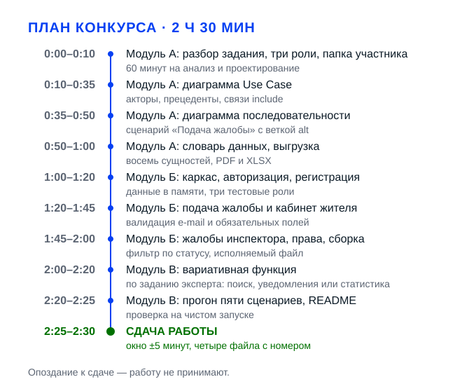
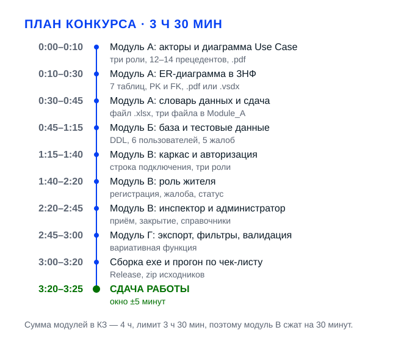
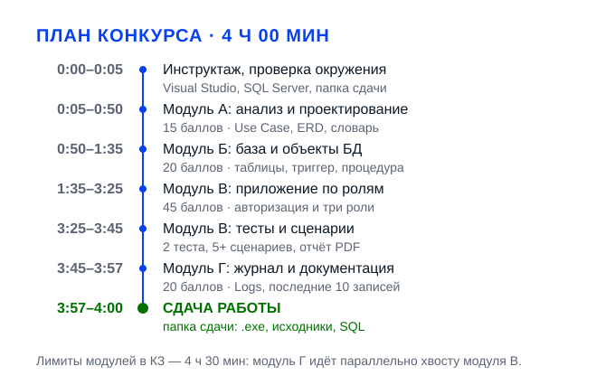

Программные решения для бизнеса (Р)
Задания ниже — официальные файлы «Абилимпикс» (источник: abilympics-russia.ru), разложенные по категориям. Решения написаны по тексту задания, регламенту и критериям оценки; в них указано, что именно проверяет эксперт.
Школьник
14–16 лет, базовый уровень заданияВыдержка из официального конкурсного задания: страницы, относящиеся к категории «Школьник» (стр. 4–7 источника).
Пошаговое решение
Конкурсное задание категории «Школьники» — это 2 часа 30 минут и три модуля, объединённые одной предметной областью: платформа EcoTrack принимает жалобы граждан на экологические нарушения, инспектор их разбирает, администратор управляет людьми и справочниками. На час первого модуля приходится анализ и проектирование, на час второго — многооконное приложение, на полчаса третьего — вариативная функция и сдача. Уровень базовый: базы данных нет, все данные живут в памяти приложения и исчезают после закрытия, и попытка подключить SQLite баллов не добавляет, зато съедает время. Сдаёте четыре файла с номером участника в имени: диаграмму прецедентов в PDF, диаграмму последовательности в PDF, словарь данных в XLSX и исполняемый файл приложения. Обязательных форм шесть: авторизация, регистрация жителя, подача жалобы, личный кабинет, просмотр жалоб для инспектора и администратора и статус жалобы. Именно расхождение между нарисованной моделью и работающим приложением снимает больше всего баллов: модель оценивают отдельно от кода, а эксперт сравнивает их между собой. Поэтому порядок работы здесь простой — сначала договориться с собой о ролях и статусах, потом нарисовать их, потом реализовать ровно нарисованное и не добавлять функции, которых нет в модели.

Задача 1. Разобрать предметную область EcoTrack и зафиксировать три ролиМодуль А · 60 минут · анализ
Первый час конкурса уходит не на рисование, а на понимание: кто пользуется системой, что каждый из них делает и по каким правилам живёт жалоба. Задание описывает EcoTrack как платформу, куда житель приносит сообщение об экологическом нарушении, инспектор его разбирает, а администратор управляет людьми и справочниками. Пока эта картина не разложена на конкретные сценарии, ни диаграмма, ни словарь данных, ни экраны не сойдутся между собой, и эксперт увидит три разных продукта вместо одного.
Действие 1.1. Прочитать задание и выписать участников системы
Шаг 1.1.1
Открываем конкурсное задание и читаем раздел про категорию «Школьники» не по диагонали, а с карандашом: там перечислены роли, шесть форм и отдельной строкой сказано, что базы данных в этой категории нет и данные живут в оперативной памяти. Заводим в рабочей папке обычный текстовый файл notes.txt и первым делом выписываем туда три слова в столбик — житель, инспектор, администратор, — а рядом с каждым одно короткое предложение своими словами: зачем этот человек заходит в систему.
Три роли — это фундамент всей работы: и диаграмма прецедентов, и ролевые экраны, и словарь данных строятся вокруг них. Если роль описана расплывчато, расплывчатым получится всё остальное, и в модели появятся функции, которых в задании нет. Модуль А оценивают именно за полноту и корректность модели, поэтому первые десять минут, потраченные на чтение, возвращаются баллами в каждом следующем файле.
В notes.txt три роли и у каждой — глагол действия: житель подаёт и смотрит статус, инспектор принимает и отклоняет, администратор добавляет инспекторов и правит справочники. Если для какой-то роли вы не можете назвать глагол, значит, раздел прочитан не до конца — вернитесь к абзацу о бизнес-сценариях.
Типичная ошибка — пропустить роль администратора, потому что «он всё то же, что инспектор»: тогда в приложении не будет экрана управления пользователями, а в диаграмме прецедентов не хватит двух-трёх связей. Вторая ошибка — выдумать роль, которой в задании нет: лишний актор читается как непонимание области и снимает балл за соответствие заданию.
Эксперт сверяет акторов на диаграмме с тремя ролями из задания в первые секунды работы с файлом и отдельно смотрит, нет ли среди них лишнего. Роль, у которой не названо ни одного действия, он считает нераскрытой и снижает балл за полноту модели.
Шаг 1.1.2
Для каждой роли выписываем сценарии так, как они звучали бы в разговоре: житель регистрируется, входит, подаёт жалобу, видит её в списке, открывает детали, смотрит статус; инспектор входит, видит новые жалобы, фильтрует по статусу, принимает или отклоняет с комментарием; администратор входит, смотрит список пользователей, добавляет инспектора, управляет справочником типов нарушений. Получается девять-одиннадцать строк, и у каждой помечаем, кто её инициирует — человек или сама система.
Этот список — черновик диаграммы прецедентов и одновременно проверка на полноту: каждый сценарий отсюда обязан появиться на диаграмме, а каждая стрелка на диаграмме — найти себе строку в списке. Так вы не забудете ни одну из шести обязательных форм и не нарисуете прецедент, которого не сможете показать в приложении, а расхождение модели и продукта на конкурсе видно сразу.
Сценариев не меньше девяти, и в них присутствуют все шесть форм из задания: авторизация, регистрация жителя, подача жалобы, личный кабинет, просмотр жалоб и статус. Проверьте, что ни одна строка не начинается со слова «система» — иначе это уже не прецедент актора, а внутренняя функция.
Ошибка — писать сценарии сразу в терминах кнопок («нажать ОК»): на диаграмме появятся прецеденты вида «нажать кнопку Войти», которые эксперт считает грубой ошибкой уровня. Вторая ошибка — оставить в списке сценарии, для которых нет ни одной формы в задании: они съедают место и время, но не приносят баллов.
Эксперт открывает диаграмму и ищет в ней каждую из шести форм, перечисленных в задании: пропущенная форма — минус за полноту, лишний прецедент — минус за корректность. На защите он просит назвать сценарий жителя и сценарий администратора и слушает, совпадают ли они с диаграммой.
Шаг 1.1.3
Отдельно разбираем жизненный цикл жалобы, потому что он держит весь остальной функционал. Выписываем состояния: «Новая» появляется в момент подачи, «В работе» ставится инспектором, когда он взял жалобу, «Закрыта» — когда нарушение устранено и добавлен комментарий, «Отклонена» — когда обращение не подтвердилось. Между ними рисуем стрелки и подписываем, кто имеет право на каждый переход: житель не меняет статус никогда, инспектор меняет только свои жалобы, администратор может вернуть закрытую в работу.
В задании статус упоминается в трёх местах — в личном кабинете, в таблице инспектора и в отдельной форме «Статус жалобы», — и без единой схемы переходов эти три экрана начнут противоречить друг другу. Кроме того, ролевая модель проверяется именно на переходах: если житель может нажать «Принять», ролевой интерфейс считается нереализованным, а это самая весомая часть модуля Б.
Четыре состояния и не меньше пяти переходов, у каждого перехода подписан разрешающий роль. Проверьте себя вопросом: может ли жалоба из «Отклонена» вернуться в «Новая»? Если ответ «может, администратором» — переход должен быть на схеме, иначе в приложении он появится случайно.
Частая ошибка — два состояния вместо четырёх: «открыта» и «закрыта». Тогда фильтр по статусу в таблице инспектора теряет смысл, а кнопка «Принять» меняет ничего не значащее поле. Вторая ошибка — разрешить переход из любого состояния в любое: такой граф не проверяет ролевую модель и выглядит как отсутствие анализа.
Эксперт открывает форму «Статус жалобы» и пробует перевести жалобу в состояние, которого нет на схеме переходов. Отдельным вопросом он проверяет, почему житель не может закрыть свою жалобу, и по ответу видит, понимает ли участник ролевую модель или просто скрыл кнопки.
Действие 1.2. Собрать папку участника и заранее проверить инструменты
Шаг 1.2.1
Создаём на рабочем столе папку с номером участника: ровно тем, что написан на бейдже и на табличке рабочего места, кириллицей без пробелов — например Конкурсное_задание_12. Внутри сразу три подпапки: A для диаграмм и словаря, B для приложения, C для вариативного модуля. Файлы называем по шаблону UseCase_12.pdf, Sequence_12.pdf, DataDictionary_12.xlsx, EcoTrack_12.exe, чтобы номер был в каждом имени, а не только в названии папки.
Эксперт ищет артефакты по номеру, и работа без номера в имени файла легко теряется среди чужих сдач на общем диске. Три подпапки нужны не для красоты: через час работы в одной папке оказываются скриншоты, черновики диаграмм и собранный exe, и на сдаче вы тратите время на поиск, а не на последнюю проверку.
В проводнике путь заканчивается на папке с вашим номером, внутри ровно три подпапки, и в каждой лежит хотя бы один файл с номером в имени. Сверьте номер посимвольно с бейджем: перепутанная цифра — самая обидная потеря на конкурсе.
Работать в папке «Документы» или на рабочем столе вперемешку: к концу модуля Б непонятно, какой файл финальный. Вторая ошибка — назвать папку латиницей, когда в задании номер записан кириллицей: автоматический поиск файлов её не найдёт.
Эксперт открывает папку участника до начала оценивания и сверяет её имя с номером на бейдже. Дальше он ищет файлы по номеру в имени, поэтому работа без номера может быть просто не найдена и оценена как отсутствующая, даже если всё сделано верно.
Шаг 1.2.2
До начала работы открываем инструмент моделирования и проверяем выгрузку в PDF на пустом листе. Годится diagrams.net в браузере, PlantUML, StarUML или Visio — важно не название, а то, что экспорт в PDF работает без интернета и без лицензии, которой у вас нет. Рисуем прямоугольник, подписываем его, нажимаем «Экспорт» и смотрим, что получилось: файл должен открываться двойным щелчком и не быть скриншотом.
Проверка инструмента занимает две минуты, а провал экспорта в конце модуля А стоит целого файла: диаграмма нарисована, но не сдана. На чемпионате интернет часто ограничен, и веб-редактор без сохранения локальной копии может просто не загрузиться, поэтому рабочий файл сохраняем рядом с PDF — в формате самого редактора, чтобы можно было вернуться и поправить.
В подпапке A лежит test.pdf, он открывается и содержит ваш прямоугольник с подписью. Рабочий файл диаграммы сохранён в той же папке с расширением .drawio, .puml или .vsdx — в зависимости от инструмента.
Ошибка — рисовать сразу «в чистовик», не проверив выгрузку: потом выясняется, что кириллица в PDF превратилась в квадраты, а времени перерисовывать уже нет. Вторая ошибка — сдавать PNG или скриншот экрана вместо PDF: формат прописан в задании, и такой файл не засчитывается.
Эксперт открывает первый же PDF и смотрит, читается ли текст при увеличении: растровая картинка видна по размытым буквам, а потерянная кириллица — по пустым прямоугольникам вместо подписей. Исходник редактора он не открывает, ему важен только сданный файл.
Шаг 1.2.3
Готовим книгу для словаря данных: открываем Excel или LibreOffice Calc, на первом листе делаем шапку из пяти столбцов — «Сущность», «Атрибут», «Тип данных», «Обязательность», «Описание» — и закрепляем первую строку через «Вид → Закрепить области». Ниже оставляем пустое место под восемь сущностей из задания: Пользователь, Жалоба, Тип нарушения, Статус, Район, Адрес, Фото, Комментарий.
Словарь данных проверяют не на красоту, а на пригодность: по нему программист должен собрать структуры в памяти без единого вопроса. Пять столбцов закрывают именно то, что спрашивают на защите — что за поле, какого оно типа, обязательно ли и что означает. Если начать заполнять без шапки, столбцы разъедутся и половину придётся переписывать.
Шапка закреплена и видна при прокрутке, под ней восемь заготовок-разделителей по числу сущностей. Проверьте, что столбец «Тип данных» действительно про тип (целое, строка, дата, перечисление), а не про формат ввода.
Ошибка — сваливать всё в один лист без разделения по сущностям: получается простыня из двухсот строк, в которой эксперт не находит нужную сущность за минуту. Вторая ошибка — начинать словарь до того, как определены роли и статусы: половину атрибутов придётся переделывать.
Эксперт листает словарь сверху вниз и проверяет, что все восемь сущностей задания присутствуют отдельными блоками и у каждой указан идентификатор. Пустые столбцы «Тип данных» и «Описание» он считает незаполненным словарём, даже если список сущностей полный.
Задача 2. Нарисовать диаграмму Use Case для трёх ролейМодуль А · часть 60 минут · файл .pdf
Диаграмма прецедентов — первый сдаваемый файл модуля А, и её оценивают дважды: как модель (верные акторы, верные связи) и как документ (читаемость, подписи, формат). Здесь важно не нарисовать побольше, а показать ровно те функции, которые есть в задании, и расставить их так, чтобы человек, впервые открывший файл, понял систему за полминуты. На всю работу с оформлением уходит около двадцати пяти минут из часа.
Действие 2.1. Построить каркас: границы системы, акторы, прецеденты
Шаг 2.1.1
Начинаем с рамки: растягиваем на листе прямоугольник и подписываем его сверху «EcoTrack» — это граница системы, всё, что внутри, делает программа, всё, что снаружи, делают люди. Акторов ставим по краям: жителя слева, потому что он инициирует большую часть сценариев, инспектора и администратора справа. Фигурки — стандартные «человечки» с подписью под ними, а не прямоугольники: прямоугольник в нотации означает класс, и эксперт это различает.
Границы системы и стороны размещения акторов — это не вкусовщина, а язык нотации: по ним читается, кто снаружи, а кто внутри. Когда житель слева, а проверяющие справа, стрелки идут слева направо и диаграмма читается как поток работы; если всё смешано, эксперт тратит время на разбор и снижает оценку за оформление.
Три человечка, ни одного лишнего, у каждого подпись из одного слова. Рамка охватывает все овалы прецедентов и не пересекает фигурки акторов. Проверьте, что ни одна стрелка не начинается из рамки, а у каждой фигурки есть хотя бы одна исходящая линия: актор без связей в модели бесполезен.
Ошибка — нарисовать актора прямоугольником или оставить его без подписи: связи тогда читаются неверно, и балл за корректность нотации уходит. Вторая ошибка — поставить акторов внутри рамки: система начинает «сама себя» использовать, что для школьной категории считается грубой ошибкой моделирования.
Эксперт оценивает нотацию в первые секунды: три актора-человечка, рамка с именем системы, овалы внутри. Актор, нарисованный прямоугольником или стоящий внутри границы системы, читается как незнание нотации и снимает балл за корректность сразу, до разбора содержания.
Шаг 2.1.2
Раскладываем прецеденты по ролям и подписываем их глаголом с дополнением: «Подать жалобу», «Просмотреть статус жалобы», «Зарегистрироваться», «Войти в систему», «Просмотреть список жалоб», «Отфильтровать жалобы по статусу», «Принять жалобы», «Отклонить жалобу», «Добавить инспектора», «Управлять типами нарушений», «Просмотреть статистику». Группируем по актору: овалы жителя — слева внутри рамки, овалы инспектора — в центре, администратора — справа, между ними оставляем свободное место под стрелки.
Одиннадцать прецедентов покрывают все шесть форм и все три роли, и это тот минимум, за которым видно понимание задания. Группировка по актору нужна, чтобы стрелки не пересекались: диаграмма, где линии идут через весь лист, формально верна, но за читаемость балл снимают, а на защите по ней невозможно говорить.
У каждого актора есть минимум два своих прецедента, и ни один овал не висит без связи. Проверьте на глаз: если провести горизонтальную линию через середину диаграммы, стрелки не должны идти в обратную сторону.
Ошибка — назвать прецеденты существительными («Подача жалобы», «Жалобы»): прецедент — это действие, и по названию должно быть понятно, что происходит. Вторая ошибка — сделать один общий овал «Работа с жалобами» на все случаи: диаграмма теряет смысл, а эксперт не видит ролевого разделения.
Эксперт читает названия овалов и сверяет их с перечнем форм из задания: совпадение по смыслу важнее дословного текста, но глагольная форма обязательна. Овал «Жалобы» или «Работа с системой» он отмечает как отсутствие декомпозиции, потому что за таким названием не видно функции.
Шаг 2.1.3
Проставляем связи. От актора к прецеденту — простая линия без стрелки (ассоциация), это единственный тип связи, который идёт от человека. Между прецедентами — пунктир со стрелкой и подписью «include»: «Подать жалобу» включает «Войти в систему», «Просмотреть список жалоб» тоже включает вход, «Принять жалобы» включает «Просмотреть список жалоб». Для администратора добавляем обобщение: стрелка с пустым треугольником от администратора к инспектору, потому что администратор умеет всё, что умеет инспектор, и ещё немного.
Include нужен там, где функция обязательна внутри другой, и это ровно наш случай: без входа ни подать жалобу, ни принять её нельзя. Обобщение между ролями избавляет от дублирования: иначе придётся рисовать администратору те же четыре стрелки, что и инспектору, и диаграмма станет вдвое грязнее. Оба приёма — из базового курса UML, и их наличие показывает, что участник знает нотацию, а не только рисует кружки.
Все одиннадцать овалов имеют хотя бы одну входящую связь. Пунктиры подписаны словом include в двойных угловых кавычках, у обобщения — пустой треугольник, а не закрашенный. Стрелки идут от включающего прецедента к включаемому, а не наоборот.
Самая частая ошибка — перепутать направление include: пунктир рисуют от входа к подаче жалобы, и смысл переворачивается. Вторая — использовать сплошную стрелку от актора, как в диаграмме потоков данных: в нотации прецедентов так не делают, и балл за корректность снижается.
Эксперт смотрит именно направления и типы стрелок: перевёрнутый include и сплошная стрелка от актора — две самые частые потери баллов за корректность. Обобщение от администратора к инспектору он считает плюсом, потому что оно показывает понимание наследования прав.
Действие 2.2. Оформить диаграмму и выгрузить её в PDF
Шаг 2.2.1
Приводим оформление к читаемому виду: шрифт подписей не мельче 11 пунктов, у овалов одинаковая высота, стрелки не пересекаются и не проходят под текстом. Добавляем в правый нижний угол небольшую легенду: что означают сплошная линия, пунктир include и стрелка обобщения. Вверху листа — заголовок «Диаграмма прецедентов ИС EcoTrack» и под ним строка «Категория: школьники, участник №12».
Оформление — это отдельная строка в критериях, и её видно без разбора модели: аккуратная диаграмма читается за десять секунд, неаккуратная — за две минуты, и в эти две минуты эксперт уже настроен искать ошибки. Легенда нужна потому, что не каждый проверяющий помнит разницу между include и extend, а вы это знаете и должны показать.
Уменьшите масштаб до 60 процентов: если подписи всё ещё читаются, размер подобран верно. Ни одна стрелка не проходит через текст овала, легенда не перекрывает прецеденты, заголовок и номер участника на месте.
Ошибка — сделать шрифт 8 пунктов, чтобы всё влезло на лист: при печати и на экране эксперта текст превращается в серую полосу, и балл за читаемость теряется целиком. Вторая — забыть номер участника в самом файле: по нему работу опознают при проверке.
Эксперт открывает PDF на весь экран и оценивает читаемость до того, как начнёт разбирать содержание: мелкий шрифт и наложенные стрелки он фиксирует как отдельную потерю баллов за оформление. Легенду он читает и проверяет, совпадает ли она с тем, что нарисовано.
Шаг 2.2.2
Выгружаем в PDF с настройкой страницы «А4, альбомная ориентация» и проверяем, что диаграмма целиком поместилась на одну страницу: в диалоге экспорта снимаем галочку автоматического разбиения и включаем «вписать в одну страницу», поля задаём по десять миллиметров, чтобы края не обрезались. Сохраняем как UseCase_12.pdf в подпапку A, а рядом кладём исходник редактора.
Многостраничный PDF, где вторая страница — половина стрелки, читается как небрежность и физически мешает: эксперт не может охватить модель одним взглядом, а именно на этом строится оценка связности. Одна страница — это требование не формальное, а рабочее: по ней потом защищают решение.
В PDF ровно одна страница, все акторы и овалы видны, поля не обрезаны по краю, текст выделяется мышью (значит, это вектор, а не картинка). Проверьте, открыв файл не в редакторе, а в обычном просмотрщике PDF.
Ошибка — экспортировать «как есть» и получить три страницы с обрезанными краями. Вторая — сохранить PDF из скриншота: текст становится растровым, при увеличении расплывается, а при печати диаграмма превращается в кашу.
Эксперт проверяет число страниц и векторность текста: если буквы не выделяются мышью, файл сделан из картинки и при печати расплывётся. Многостраничный PDF он оценивает ниже, потому что не может охватить модель одним взглядом, а связность в диаграмме — главное.
Шаг 2.2.3
Проверяем файл так, как его увидит эксперт: закрываем редактор, открываем PDF, листаем, увеличиваем до 150 процентов, читаем каждую подпись вслух. Затем открываем файл на другом компьютере или хотя бы в другом просмотрщике — например в браузере. И только после этого переносим финальную версию в папку участника и записываем в notes.txt время, когда файл сдан.
Диаграмма, которая открывается только в том редакторе, где её рисовали, на чемпионате бесполезна: эксперт работает на своём компьютере и с вашими настройками не знаком. Двойная проверка занимает три минуты, а находка «шрифт не подставился» в конце модуля А может стоить всего файла, ведь переделывать его уже не будет времени.
Файл открывается в двух независимых программах, все подписи на месте, кириллица не превратилась в квадраты, номер участника в имени и в заголовке совпадает. Копия лежит в папке, а не на рабочем столе.
Ошибка — сдавать файл, ни разу не открыв его после экспорта: пропавшие символы и съехавшая компоновка обнаруживаются только у эксперта. Вторая — держать единственную копию на рабочем столе: при сбое или перезагрузке она исчезает.
Эксперт открывает именно тот файл, что лежит в папке участника, и не ищет черновики рядом. Если файл не открывается с первого раза, время уходит на выяснение, а не на оценку, и балл за оформление снижается, поэтому проверка на другом компьютере входит в подготовку.
Задача 3. Нарисовать диаграмму последовательности и собрать словарь данныхМодуль А · часть 60 минут · файлы .pdf и .xlsx
Вторая половина модуля А — про то, как система работает внутри. Диаграмма последовательности показывает один сценарий по шагам, от нажатия кнопки до сообщения об успехе, а словарь данных описывает сущности, с которыми эти шаги работают. Вместе они дают ответ на вопрос, который эксперт задаёт почти всегда: «а что происходит, когда житель вводит неправильный e-mail?» Здесь же вы заранее решаете, какие структуры появятся в коде, поэтому словарь пишется не для галочки, а как техзадание самому себе.
Действие 3.1. Построить диаграмму последовательности «Подача жалобы»
Шаг 3.1.1
Открываем новый лист и ставим четыре линии жизни слева направо: актор «Житель», граничный объект «ФормаЖалобы», управляющий объект «ОбработчикЖалоб» и сущность «ХранилищеВПамяти». Над каждой линией — прямоугольник с именем, под ним пунктирная вертикаль до конца диаграммы. Пятым столбцом добавляем «СправочникТиповНарушений», если хотите показать, откуда берётся список в выпадающем поле.
Разделение на форму, обработчик и хранилище — это и есть архитектура вашего приложения, только нарисованная заранее: в коде у вас будут ровно эти три слоя. Если нарисовать одну линию «Система», диаграмма формально останется верной, но не покажет, где именно происходит проверка данных, а именно это в задании и просят отразить — взаимодействие актора с системой при подаче жалобы.
Четыре или пять линий, у каждой имя в рамке и пунктир вниз. Между именами нет пустых столбцов, все стрелки укладываются в ширину листа при альбомной ориентации. Проверьте, что порядок линий совпадает с порядком вызовов: житель первый, хранилище последнее.
Ошибка — нарисовать линии без имён или с общими названиями «Клиент», «Сервер»: непонятно, кто что делает, и диаграмма теряет смысл. Вторая — поставить хранилище вторым слева: стрелки начинают идти в обратную сторону и путаются.
Эксперт смотрит имена линий жизни: они должны называть объекты вашей системы, а не абстрактные уровни вроде «клиент» и «сервер». Разделение на форму, обработчик и хранилище он считает признаком понимания архитектуры, а одну линию «Система» — упрощением без баллов.
Шаг 3.1.2
Проводим сообщения сверху вниз, по одному действию на стрелку: житель открывает форму; форма запрашивает список типов нарушений у справочника; справочник возвращает пять значений; житель выбирает тип, вводит описание и адрес, прикрепляет файл; форма вызывает проверку введённых данных; обработчик возвращает результат проверки; при успехе форма передаёт данные обработчику; обработчик создаёт запись со статусом «Новая» и текущей датой и просит хранилище её сохранить; хранилище возвращает номер жалобы; обработчик отдаёт номер форме; форма показывает жителю подтверждение.
Каждая стрелка — это либо вызов метода, либо возврат значения, и вместе они складываются в тот самый сценарий, который через час должен заработать в коде. Когда сообщений восемь-одиннадцать и они идут в правильном порядке, диаграмма читается как алгоритм: по ней можно сесть и написать обработчик, не додумывая детали. Это и есть критерий, по которому оценивают модуль А.
У каждой стрелки есть подпись с глаголом и, где нужно, параметрами в скобках, например saveComplaint(данные). Стрелки возврата — пунктирные, с подписью результата. Ни одна стрелка не начинается из пустоты и не заканчивается в воздухе.
Ошибка — рисовать стрелки без подписей: тогда диаграмма превращается в картинку и не объясняет ничего. Вторая — показывать только прямые вызовы и забывать возвраты: эксперт не видит, откуда берётся номер жалобы, который показывается пользователю.
Эксперт ищет в цепочке три обязательных звена: проверку данных, создание записи и возврат номера пользователю. Если цепочка обрывается на создании записи и не показывает, что увидел житель, диаграмма считается неполной, потому что сценарий в задании описан до конца.
Шаг 3.1.3
Добавляем фрагмент alt для ветки ошибки: рамку с надписью alt в углу, внутри — условие «e-mail или обязательное поле не заполнены» и сообщение от обработчика форме «ошибка валидации», после чего форма подсвечивает поле и не отправляет данные. Ниже, в блоке else, — успешный путь из предыдущего шага. Подписи условий пишем в квадратных скобках над рамкой.
Именно этот фрагмент показывает, что вы понимаете валидацию как часть сценария, а не как украшение формы. В задании проверка e-mail и обязательных полей вынесена отдельным требованием, и на диаграмме она должна быть видна как развилка. Без неё диаграмма описывает только счастливый путь, а эксперт почти всегда спрашивает про обратный.
Рамка alt охватывает ровно те сообщения, которые различаются, и не перекрывает линии жизни. Условия в квадратных скобках читаются с листа: «неверный e-mail» и «данные корректны». В ветке ошибки нет создания записи — это главный признак, что вы поняли смысл проверки.
Ошибка — нарисовать alt, но оставить в ветке ошибки сохранение жалобы: получается, что система сохраняет мусор, а это прямое противоречие требованию валидации. Вторая — подписать рамку словами «если ошибка» без условия: непонятно, какая именно ошибка проверяется.
Эксперт открывает диаграмму и ищет рамку alt: её наличие и корректность ветки он считает одним из показателей уровня работы. Отдельно он проверяет, что в ветке ошибки нет сохранения жалобы, потому что эта деталь показывает, понимает ли участник смысл валидации.
Действие 3.2. Заполнить словарь данных по восьми сущностям
Шаг 3.2.1
Возвращаемся в книгу из первого действия и заполняем блок «Пользователь»: идентификатор целого типа, ФИО строкой до ста символов, телефон строкой, электронная почта строкой с проверкой формата, пароль строкой, роль перечислением из трёх значений, адрес проживания строкой, признак блокировки логическим типом. Дальше «Жалоба»: идентификатор, идентификатор автора, тип нарушения, адрес, описание, путь к фото, текущий статус, дата создания, идентификатор инспектора, комментарий.
Словарь данных — это техзадание на структуры, которые вы будете создавать в коде через час, и чем точнее он заполнен, тем меньше правок в модуле Б. Каждая строка здесь отвечает на три вопроса: как называется поле, какого оно типа и обязательно ли оно. Именно по этим трём вещам потом пишется валидация, поэтому экономить на описании нельзя.
У каждой сущности первым идёт идентификатор целого типа, у «Жалобы» есть ссылка на автора и на инспектора. Все обязательные поля помечены словом «да» в столбце обязательности, необязательные — «нет», и таких не больше двух-трёх на сущность.
Ошибка — описать все поля как строки: тогда в коде не будет ни дат, ни перечислений, а фильтрация по статусу сведётся к сравнению текста и начнёт ломаться на опечатках. Вторая — забыть про идентификатор инспектора: непонятно, кто именно взял жалобу в работу.
Эксперт сверяет словарь с кодом приложения: поле, которого нет в словаре, он отмечает как расхождение модели и реализации. Он также смотрит, есть ли у жалобы ссылка на автора и на инспектора, потому что без этих двух полей ролевая модель не описывается.
Шаг 3.2.2
Заполняем оставшиеся шесть сущностей: «Тип нарушения» — идентификатор и наименование из справочника на пять значений (незаконная свалка, сброс стоков в водоём, вырубка зелёных насаждений, загрязнение воздуха, шум в ночное время); «Статус» — идентификатор и наименование, четыре значения; «Район» — идентификатор и название, семь районов города; «Адрес» — улица, дом, при необходимости координаты; «Фото» — путь к файлу и подпись; «Комментарий» — текст, автор, дата.
Справочники нужны, чтобы в приложении не было ручного ввода там, где должен быть выбор из списка: пять типов нарушений — это пять строк выпадающего списка, и ошибка ввода исчезает физически. Отдельные сущности «Статус» и «Район» в задании названы прямо, и их отсутствие в словаре читается как неполная работа, даже если в коде статус есть просто строкой.
Восемь блоков, в каждом от двух до десяти атрибутов, и ни одного пустого описания. Справочные сущности содержат ровно те значения, которые потом появятся в выпадающих списках: пять типов, четыре статуса, семь районов — числа совпадают с кодом.
Ошибка — описать «Статус» как поле жалобы и не завести отдельной сущности: в словаре не будет видно, какие значения допустимы, и в коде появятся случайные строки вроде «в работе» и «В работе». Вторая — придумать двадцать типов нарушений, которых нет в задании, и не успеть их реализовать.
Эксперт проверяет, что справочные значения в словаре совпадают со списками в приложении: расхождение видно на первой же демонстрации. Отдельно он смотрит, заведены ли «Статус» и «Район» отдельными сущностями, как названо в задании, а не как строка внутри жалобы.
Шаг 3.2.3
Оформляем книгу так, чтобы её было удобно читать: включаем автофильтр по шапке, задаём ширину столбцов по содержимому, выделяем шапку жирным и заливкой, каждую сущность отделяем строкой-заголовком с её названием. Добавляем второй лист «Связи» с тремя строками: пользователь-жалоба один ко многим, тип нарушения-жалоба один ко многим, инспектор-жалоба один ко многим. Сохраняем как DataDictionary_12.xlsx в подпапку A.
Словарь читают глазами, и от оформления зависит, найдут ли в нём нужную строку за полминуты. Автофильтр и закреплённая шапка — это не украшение: эксперт может отфильтровать обязательные поля и проверить, что вы понимаете разницу между обязательным и необязательным. Лист «Связи» закрывает вопрос, который задают на защите: как жалоба связана с человеком.
Шапка видна при прокрутке до последней строки, фильтр работает, ни одна ячейка не обрезана решётками. На листе «Связи» три строки, и в каждой указана кратность. Файл открывается в Excel и в LibreOffice без предупреждений о формате.
Ошибка — сохранить книгу в формате старого Excel или в CSV: часть оформления теряется, а .xlsx прописан в задании прямо. Вторая — оставить столбцы такой ширины, что текст превращается в решётки: эксперт видит пустые ячейки и считает словарь незаполненным.
Эксперт открывает книгу и первым делом проверяет, что все восемь сущностей на месте и что описание заполнено, а не скопировано из шапки. Затем он включает фильтр по обязательности и смотрит, понимает ли участник разницу между обязательным и необязательным полем.
Задача 4. Собрать каркас приложения, авторизацию и регистрациюМодуль Б · 60 минут · роль и вход
На модуль Б отводится час, и первые двадцать пять минут решают всё остальное: если каркас и вход работают, остальные экраны добавляются быстро, потому что повторяют одну и ту же схему. Задание требует здесь три вещи — форму «Авторизация» с полями e-mail и пароля, форму «Регистрация жителя» с пятью полями и переход по роли после входа. Базы данных нет, поэтому вместо таблиц вы создаёте словари и списки в памяти и наполняете их тремя тестовыми пользователями, чтобы демонстрация работала с первой секунды.
Действие 4.1. Сделать каркас и хранилище данных в памяти
Шаг 4.1.1
Создаём в подпапке B проект из четырёх файлов: main.py с точкой входа, models.py с описанием пользователя и жалобы, storage.py с хранилищем и screens.py с экранами. Если времени мало, можно обойтись одним файлом, но тогда сразу размечайте его комментариями на те же четыре части: через полчаса поиск нужной функции по трём сотням строк съест больше времени, чем сэкономила экономия на файлах.
Разделение на модель, хранилище и экраны — это то, за что дают баллы по архитектуре, и одновременно практическая страховка: когда в конце модуля Б понадобится поменять статус жалобы, вы правите одно место, а не ищете по всему коду, где он записывался. Кроме того, такой каркас прямо соответствует диаграмме последовательности из модуля А, и на защите видно, что модель и код совпадают.
В проекте четыре файла (или четыре явно размеченных блока), в каждом нет незакомментированного кода вне своей темы, приложение запускается из main.py без ошибок в консоли. Импорты идут в одну сторону: экраны используют хранилище, хранилище не знает об экранах.
Ошибка — писать всё в одном файле без разметки: к концу часа вы не найдёте функцию валидации и начнёте дублировать её, а расхождение между двумя копиями даст непредсказуемое поведение. Вторая — запускать приложение кнопкой IDE, не проверив запуск из консоли: на чужом компьютере оно не откроется.
Эксперт смотрит структуру проекта при демонстрации: отдельные слои модели, хранилища и экранов он отмечает как плюс по критерию архитектуры. Сваливать всё в один файл не запрещено, но тогда он проверяет, есть ли комментарии-разделители, и часто находит дубли функций.
Шаг 4.1.2
В storage.py создаём два словаря: users — по электронной почте в качестве ключа, и complaints — по номеру жалобы. Сразу заводим счётчик next_complaint_id со значением 1 и три тестовых пользователя: житель с почтой zhitel@ecotrack.ru и паролем 123456, инспектор inspector@ecotrack.ru и администратор admin@ecotrack.ru с теми же паролями; пароли для демонстрации одинаковые, чтобы не путаться на защите. Пароли храните как есть, но в комментарии отметьте, что в реальной системе так нельзя.
Почта как ключ словаря избавляет от перебора списка при входе: проверка превращается в одно обращение по ключу, и вход не подвисает. Предзаполненные пользователи нужны обязательно: эксперт ждёт демонстрации всех трёх ролей, и регистрировать инспектора через форму жителя вы не сможете — она создаёт только жителя.
В словаре три записи, ключи у них совпадают с полями email, при входе под каждой из трёх учёток открывается нужный экран. Счётчик жалоб начинается с единицы и растёт ровно на единицу за поданную жалобу, без пропусков.
Ошибка — хранить пароль в поле ФИО или путать ключ и значение: вход начинает сравнивать почту с паролем и не пускает никого. Вторая — не предзаполнить инспектора и администратора: на демонстрации половина ролей недоступна, а это минус балл за ролевой интерфейс.
Эксперт на демонстрации попросит войти под каждой ролью и посмотрит, есть ли готовые учётки. Если инспектора и администратора приходится создавать на его глазах, он фиксирует неполноту и тратит время, которое могло уйти на показ функционала.
Шаг 4.1.3
Делаем навигацию через один корневой контейнер: в main.py создаём главное окно размером 900 на 600, внутри — фрейм-контейнер, а экраны реализуем как классы, которые умеют себя показать и скрыть. Переключение — один метод show(screen_name), который убирает текущий фрейм и поднимает нужный. Никаких новых окон верхнего уровня для переходов, кроме модальных диалогов деталей и сообщений об ошибках.
Одна точка переключения — это гарантия, что вы не оставите открытыми два экрана одновременно и не потеряете данные, введённые в форму. Модальные окна для подтверждений и деталей нужны потому, что они возвращают управление туда же, откуда открылись, а отдельные главные окна при закрытии убивают всё приложение вместе с хранилищем в памяти.
После входа под жителем виден ровно один экран — личный кабинет, а форма авторизации скрыта, но не уничтожена. Кнопка закрытия диалогового окна возвращает к списку, а не завершает программу. Заголовок главного окна содержит название системы и роль текущего пользователя.
Ошибка — открывать каждый экран как новое окно Tk(): окна множатся, память переполняется, а при закрытии последнего программа падает. Вторая — пересоздавать главное окно при каждом переходе: введённые данные теряются, и житель видит пустую форму после сообщения об ошибке.
Эксперт пробует вернуться назад и закрыть окно: поведение навигации показывает, продумана ли архитектура. Множащиеся окна он замечает сразу, потому что после третьего перехода они начинают перекрывать друг друга и мешают смотреть демонстрацию.
Действие 4.2. Реализовать форму «Авторизация»
Шаг 4.2.1
Собираем экран входа: заголовок «Вход в EcoTrack», подпись и поле e-mail, подпись и поле пароля с маскировкой (в Tkinter — show='*', в PyQt — QLineEdit.Password), чекбокс «Показать пароль», который переключает маскировку, кнопка «Войти» и текстовая ссылка «Зарегистрироваться» справа под кнопкой. Поля выравниваем по левому краю, кнопку делаем шириной в половину формы, чтобы она читалась как главное действие.
Маскировка пароля с возможностью показа — отдельное требование задания, и его проверяют буквально: эксперт просит нажать чекбокс и посмотреть, появится ли текст. Ссылка на регистрацию нужна потому, что форма жителя недоступна без входа, и без неё новый пользователь не сможет попасть в систему вообще. Ровное выравнивание полей — это балл за интерфейс, который берётся бесплатно.
Пароль отображается звёздочками, после нажатия чекбокса — обычным текстом, после повторного нажатия снова звёздочками. Ссылка «Зарегистрироваться» открывает форму регистрации. Нажатие Enter в поле пароля срабатывает так же, как кнопка «Войти».
Ошибка — сделать маскировку через замену символов вручную: при копировании и вставке текст ломается, а курсор прыгает. Вторая — забыть чекбокс: требование задания остаётся невыполненным, хотя форма выглядит готовой.
Эксперт нажимает чекбокс «Показать пароль» почти всегда — это самый быстрый способ проверить, читал ли участник задание. Затем он смотрит на ссылку регистрации: без неё новый житель не может попасть в систему, и он отмечает это как незамкнутый сценарий входа.
Шаг 4.2.2
Пишем обработчик входа: берём текст из полей, обрезаем пробелы по краям, приводим почту к нижнему регистру и ищем пользователя в словаре по ключу. Если запись найдена и пароль совпадает — сохраняем текущего пользователя в атрибуте приложения и переходим по роли: житель в личный кабинет, инспектор в список жалоб, администратор в список жалоб с доступной вкладкой пользователей.
Ролевой переход — центральное требование модуля Б: после входа отображается разный функционал в зависимости от роли, и проверяют его именно здесь, на входе. Приведение почты к нижнему регистру нужно потому, что житель вполне может набрать Ivanov@mail.ru, а в словаре лежит ivanov@mail.ru, и без нормализации вход не сработает при формально верных данных.
Под каждой из трёх учёток открывается свой экран, и в заголовке окна видна роль. Почта, набранная заглавными буквами, тоже проходит. После выхода и повторного входа под другой ролью предыдущий экран не остаётся на заднем плане.
Ошибка — определять роль по первой букве почты или по жёстко прописанному списку: добавленный через админку инспектор перестаёт входить. Вторая — не сбрасывать текущего пользователя при выходе: следующий вход открывает чужие данные.
Эксперт входит по очереди под всеми тремя учётками и смотрит, что именно меняется на экране, а не только заголовок окна. Если под инспектором открывается кабинет жителя или пустой экран, ролевой интерфейс считается нереализованным, а это весомая часть модуля Б.
Шаг 4.2.3
Обрабатываем ошибки по-человечески: пустое поле — сообщение «Введите e-mail и пароль» без закрытия формы; неизвестная почта — «Пользователь с такой почтой не найден, проверьте адрес или зарегистрируйтесь»; неверный пароль — «Пароль не подходит». Поле с ошибкой подсвечиваем рамкой красного цвета и ставим туда курсор, чтобы можно было сразу исправить, а не искать глазами, что не так.
Валидация входа — отдельная строка в критериях, и оценивают не факт её наличия, а то, насколько сообщения помогают человеку. Разные тексты для разных причин нужны потому, что «ошибка входа» не подсказывает, менять пароль или регистрироваться. Подсветка поля и перенос курсора — мелочь, которая на демонстрации выглядит как аккуратно сделанный продукт и отличает работу школьника от заготовки.
На каждую из трёх ситуаций — своё сообщение, форма остаётся на экране, введённая почта не стирается. После исправления и повторного нажатия вход проходит без перезапуска приложения. Рамка ошибки исчезает, когда поле начинают править.
Ошибка — показывать одно сообщение «Неверные данные» на все случаи: пользователь не понимает, что делать, и эксперт снижает балл за качество валидации. Вторая — закрывать приложение при ошибке входа или очищать оба поля: введённое приходится набирать заново.
Эксперт специально вводит неверный пароль и смотрит на текст сообщения: осмысленность подсказки входит в оценку валидации. Одного сообщения «ошибка» ему достаточно, чтобы понять, что обработка ошибок сделана формально, и он снижает балл без дальнейших проверок.
Действие 4.3. Реализовать форму «Регистрация жителя»
Шаг 4.3.1
Собираем форму из пяти полей в порядке из задания: ФИО, телефон, e-mail, пароль, адрес проживания. Поле телефона получает маску или хотя бы автоматическую вставку разделителей: при вводе одиннадцати цифр текст приводится к виду +7 (999) 123-45-67. Поле пароля маскируется, рядом снова ставим чекбокс показа. Кнопки — «Зарегистрироваться» и «Назад ко входу», вторая нужна, потому что человек может передумать.
Пять полей перечислены в задании дословно, и их отсутствие видно сразу: эксперт считает поля по списку. Автоматическое форматирование телефона — небольшой приём, который сильно улучшает впечатление: введённый номер сразу выглядит как номер, а не как набор цифр. Кнопка возврата важна практически — без неё после случайного нажатия ссылки форма регистрации становится ловушкой.
Все пять полей на месте, телефон приводится к единому виду при вводе, пароль скрыт, возврат на форму входа работает без потери уже введённых данных в других полях. Форма помещается в окно без прокрутки при разрешении 900 на 600.
Ошибка — сделать телефон свободным текстом: в списке пользователей появятся записи вида «8-999» и «+7999», и фильтровать их будет невозможно. Вторая — оставить форму без кнопки «Назад»: единственный способ уйти — закрыть приложение.
Эксперт проверяет, что на форме именно пять полей из задания и что ни одно не объединено с другим. Объединённое поле «ФИО и телефон» он считает невыполнением требования, потому что по нему невозможно ни проверить формат, ни вывести данные в таблицу.
Шаг 4.3.2
Пишем проверку перед сохранением: все пять полей обязательны, ФИО не короче трёх символов и содержит хотя бы одну букву, телефон после очистки от разделителей — ровно одиннадцать цифр, почта соответствует шаблону с символом @ и точкой в домене, пароль не короче шести символов, адрес не короче пяти. Отдельно проверяем, что такой почты ещё нет в словаре. При ошибке сообщение указывает конкретное поле.
Требование задания звучит как «проверка e-mail и обязательных полей», и его проверяют на живом примере: вводят почту без собачки и смотрят, пропустит ли форма. Проверка длины пароля и дубликата почты в задании прямо не названа, но без неё словарь пользователей разъезжается, а вход по одной почте находит две записи — это уже логическая ошибка, которую эксперт замечает на демонстрации.
Ввод почты «ivanov.mail.ru», «ivanov@mail» и «@mail.ru» блокируется с разными сообщениями. Повторная регистрация на уже занятую почту не проходит. Корректные данные сохраняются без замечаний. После каждой ошибки подсвечено именно то поле, которое её вызвало.
Ошибка — проверять почту регулярным выражением, скопированным наугад, и отвергать нормальные адреса вроде ivanov@mail.ru: шаблон должен допускать точку, дефис и поддомен. Вторая — проверять только заполненность, не проверяя формат: тогда формальный балл за валидацию не ставится.
Эксперт вводит заведомо неверные данные в каждое поле по очереди и считает, сколько ошибок поймала форма. Про почту он пробует два варианта — без собачки и без точки в домене, — и если проходит хотя бы один, балл за валидацию не ставит.
Шаг 4.3.3
При успешной проверке создаём запись пользователя с ролью «житель», кладём её в словарь по ключу почты, показываем сообщение «Регистрация завершена, войдите под своими данными» и возвращаемся на форму входа, подставив почту в поле автоматически. Пароль в открытом виде нигде не показываем. В notes.txt отмечаем время, когда регистрация заработала, — это точка, после которой можно переходить к жалобам.
Данные сохраняются в памяти, а не в базе, — это прямо прописано для категории «Школьники», и попытка подключить SQLite здесь не даёт баллов, зато съедает время. Подстановка почты после регистрации — приём из практики хороших продуктов: человеку не нужно набирать адрес второй раз, и он точно не ошибётся. Автоматический логин после регистрации делать не стоит, потому что задание предполагает вход как отдельный шаг.
Новый пользователь появляется в словаре и виден в списке пользователей у администратора, при входе под ним открывается личный кабинет с пустым списком жалоб. После перезапуска приложения запись исчезает — это ожидаемое поведение, и его нужно уметь объяснить.
Ошибка — сохранять пользователя в файл или в SQLite «на всякий случай»: формально это не запрещено, но время уходит, а требование «без БД» сформулировано явно. Вторая — не добавлять роль новому пользователю: вход по нему приводит к пустому экрану без функционала.
Эксперт регистрирует нового жителя сам и проверяет, что тот сразу может войти и подать жалобу. Отдельно он спрашивает, почему данные исчезают после перезапуска, и ждёт спокойного ответа про имитацию без базы данных, а не оправданий.
Задача 5. Реализовать подачу жалоб, личный кабинет и работу инспектораМодуль Б · 60 минут · основной функционал
Здесь собирается то, ради чего система существует: житель оформляет жалобу, видит её в списке и следит за статусом, инспектор получает её, фильтрует и переводит в работу, администратор управляет людьми. Четыре экрана из шести обязательных делаются по одной схеме, и если вы потратили время на каркас, каждый следующий занимает минут восемь. Ключевое требование — данные не теряются при переходах между экранами, потому что живут в общем хранилище, а не в полях формы.
Действие 5.1. Собрать форму «Подача жалобы»
Шаг 5.1.1
Ставим на форму четыре элемента сверху вниз: выпадающий список типа нарушения с пятью значениями из справочника, многострочное поле описания на пять-шесть строк, однострочное поле адреса и блок прикрепления фото — кнопка «Выбрать файл» и рядом подпись, куда выводится путь. Список наполняем из того же справочника, что описан в словаре данных, а не вписываем значения в код формы. Внизу — кнопки «Отправить» и «Отмена».
Выпадающий список вместо ручного ввода — прямое требование задания, и он же убирает целый класс ошибок: житель физически не может ввести тип нарушения с опечаткой. Имитация прикрепления фото через показ пути — тоже требование, и его проверяют буквально: нажимают кнопку и смотрят, появился ли путь к выбранному файлу. Загрузка в память содержимого файла здесь не нужна и только замедлит работу.
В списке ровно пять типов, они совпадают со словарём данных посимвольно. После выбора файла в подписи видно полный путь или хотя бы имя файла с расширением. Форма открывается с пустыми полями, а не с данными предыдущей жалобы.
Ошибка — вписать типы нарушений прямо в форму, а в словаре указать другие: расхождение видно при первом же сравнении, и балл за согласованность модели и реализации теряется. Вторая — читать файл целиком в память ради «настоящего» прикрепления: программа начинает тормозить на фотографии с телефона.
Эксперт нажимает «Выбрать файл» и проверяет, что путь действительно отобразился, а не просто открылся диалог. Затем сверяет пять значений в списке типов нарушений со словарём данных: расхождение он отмечает как несогласованность двух артефактов модуля.
Шаг 5.1.2
Перед отправкой проверяем три вещи: тип нарушения выбран (не пустая строка), описание не короче двадцати символов, адрес заполнен и содержит хотя бы улицу и номер дома. Пока условия не выполнены, кнопка «Отправить» остаётся неактивной, а рядом с незаполненным полем появляется короткая подсказка. Проверку выносим в отдельную функцию validate_complaint, чтобы её можно было вызвать и при отправке, и при включении кнопки.
Живая валидация — самый заметный для эксперта признак качества: форма не даёт отправить мусор и объясняет, чего не хватает. Ограничение на длину описания в двадцать символов нужно не формально, а по смыслу: жалоба из слова «плохо» бесполезна инспектору, и в реальной системе её вернут на доработку. Отдельная функция проверки нужна, чтобы логика не разъехалась между кнопкой и обработчиком.
Кнопка серая при пустой форме и становится активной, когда все три условия выполнены. Попытка отправить описание из пяти символов даёт подсказку у поля, а не молчаливое ничего. После исправления подсказка исчезает без перезапуска.
Ошибка — проверять только заполненность, пропуская короткое описание: на демонстрации появится жалоба «тест», и эксперт увидит, что валидация формальная. Вторая — оставлять кнопку активной и показывать ошибку после нажатия: это допустимо, но менее аккуратно и требует лишнего клика.
Эксперт пробует отправить пустую форму и короткое описание — обе попытки должны быть остановлены с понятным текстом. Он смотрит, какое именно поле подсвечено, и по этому понимает, написана валидация по правилам или сделана одной проверкой на всё.
Шаг 5.1.3
При успешной отправке создаём жалобу: номер из счётчика, автор — текущий пользователь, тип, адрес, описание, путь к фото (или пустая строка), статус «Новая», дата и время создания, пустой комментарий инспектора. Кладём её в словарь жалоб, увеличиваем счётчик, очищаем форму и показываем сообщение с номером: «Жалоба №7 зарегистрирована, статус — Новая». После закрытия сообщения житель остаётся на форме или переходит в кабинет — решите это один раз и не меняйте.
Дата и статус проставляются системой, а не пользователем: если оставить это человеку, в списке появятся жалобы без даты, а фильтр по статусу перестанет работать. Номер в сообщении нужен, чтобы житель мог назвать его по телефону и найти в кабинете. Очистка формы после отправки предотвращает случайную повторную подачу того же текста.
В словаре появилась запись с номером на единицу больше предыдущего, статус в ней «Новая», дата совпадает с текущей. Форма пуста, счётчик не пропускает номеров. Жалоба сразу видна в личном кабинете и в таблице инспектора без перезапуска.
Ошибка — сохранять жалобу только в локальную переменную экрана: при переходе в кабинет список пуст, и половина демонстрации разваливается. Вторая — не увеличивать счётчик и выдавать всем жалобам номер 1: фильтрация и поиск по номеру перестают иметь смысл.
Эксперт подаёт жалобу сам и сразу идёт смотреть, появилась ли она у инспектора: сквозной путь от формы до таблицы он проверяет первым. Номер в сообщении он тоже смотрит, потому что по нему потом ищет жалобу в списке.
Действие 5.2. Собрать личный кабинет жителя
Шаг 5.2.1
Личный кабинет делаем таблицей на пять столбцов: номер, тип нарушения, адрес, дата, статус. Наполняем её только жалобами текущего пользователя — фильтр по идентификатору автора, а не по всей коллекции. Над таблицей ставим подпись с именем вошедшего и кнопку «Подать жалобу», под таблицей — «Обновить» и «Выйти». Статус показываем текстом, а не числом, и по возможности цветом: «Новая» синим, «В работе» оранжевым, «Закрыта» зелёным, «Отклонена» серым.
Отбор по автору — это и требование задания, и проверка ролевой модели: если житель видит чужие жалобы, доступ реализован неверно, и эксперт замечает это первым делом. Цветовое кодирование статуса не обязательно, но оно делает кабинет читаемым с первого взгляда и показывает, что участник думал о пользователе, а не только о выполнении пункта.
Под новым жителем таблица пуста, под тестовым видны только его жалобы. Число строк совпадает с числом поданных жалоб, статусы в них те же, что в таблице инспектора. После нажатия «Обновить» список перечитывается из хранилища и не дублируется.
Ошибка — выводить все жалобы без фильтра: житель видит чужие обращения с адресами, и это грубая ошибка разграничения доступа. Вторая — собирать таблицу один раз при открытии экрана и больше не обновлять: после смены статуса инспектором житель видит старые данные.
Эксперт входит под двумя разными жителями и сравнивает списки: они не должны совпадать. Совпадение он считает грубой ошибкой разграничения доступа, потому что житель видит чужие обращения с адресами, и снижает балл за ролевой интерфейс целиком.
Шаг 5.2.2
По двойному щелчку на строке открываем модальное окно деталей: все поля жалобы крупно, включая полное описание, путь к фото, дату, текущий статус и комментарий инспектора, если он есть. Если комментария нет, вместо пустого места пишем «пока нет комментария». Внизу — кнопка «Закрыть», возвращающая в кабинет. Окно делаем модальным, чтобы за ним не оставалось активной таблицы.
Просмотр деталей — отдельное требование к личному кабинету, и без него житель не может узнать, почему жалобу отклонили. Комментарий инспектора — единственный канал обратной связи в системе, и его отсутствие в деталях обесценивает всю работу инспектора. Модальность нужна, чтобы пользователь не открыл два окна деталей одновременно и не запутался.
Окно открывается на той жалобе, по которой щёлкнули, все поля заполнены и соответствуют строке таблицы. После закрытия окно не остаётся в памяти — повторный двойной щелчок открывает новое, а не третье поверх второго.
Ошибка — открывать детали по одинарному щелчку: таблица становится неудобной, потому что окна открываются при каждом перемещении по строкам. Вторая — показывать детали без комментария инспектора: житель видит статус «Отклонена» и не понимает причину.
Эксперт открывает детали жалобы со статусом «Отклонена» и ищет причину: она должна быть видна в окне без дополнительных вопросов. Пустое место вместо комментария он читает как незамкнутую обратную связь, хотя формально окно деталей существует.
Шаг 5.2.3
Продумываем пустое состояние и мелочи: если жалоб нет, вместо пустой таблицы показываем текст «У вас пока нет жалоб» и кнопку «Подать первую», чтобы человек не искал, что делать. Кнопка «Выйти» очищает текущего пользователя и возвращает на экран входа, а не закрывает приложение. Заголовок окна при этом снова становится нейтральным, без имени жителя.
Пустое состояние — то, что видит эксперт при демонстрации нового пользователя, и пустая серая таблица читается как недоделанный экран. Корректный выход важен практически: если он закрывает программу, эксперт не сможет переключиться на другую роль без перезапуска, а данные в памяти при этом обнулятся — вся подготовленная демонстрация пропадёт.
Под новым жителем видна подсказка и кнопка подачи, а не пустая сетка. После выхода открывается форма входа с пустыми полями, приложение продолжает работать, подготовленные жалобы остаются в памяти и видны при повторном входе под инспектором.
Ошибка — выходить через sys.exit или закрытие окна: вся имитация обнуляется, и приходится заново создавать жалобы на глазах эксперта. Вторая — оставлять в полях входа почту предыдущего пользователя: при демонстрации легко войти не под той ролью.
Эксперт проверяет переход между ролями без перезапуска — это отдельный пункт демонстрации. Если выход закрывает приложение, все подготовленные жалобы пропадают, и он либо ждёт, пока вы создадите их заново, либо оценивает работу по неполной картине.
Действие 5.3. Сделать экран «Просмотр жалоб» для инспектора и администратора
Шаг 5.3.1
Собираем общий экран для двух ролей: таблица со столбцами «Номер», «Дата», «Житель», «Тип», «Адрес», «Статус», «Инспектор». Над таблицей — выпадающий фильтр по статусу со значениями «Все», «Новая», «В работе», «Закрыта», «Отклонена» и поле поиска по адресу или номеру. Под таблицей — кнопки действий, набор которых зависит от роли: инспектору «Принять», «Отклонить» и «Закрыть с комментарием», администратору дополнительно вкладка «Пользователи».
Фильтрация по статусу — прямое требование задания, и она должна пересобирать таблицу из хранилища, а не прятать строки в виджете: иначе счётчики и поиск начнут показывать разные числа. Один экран на две роли экономит время и одновременно показывает, что вы понимаете разницу между ролью и экраном: администратор видит то же плюс управление людьми.
Фильтр «Новая» оставляет в таблице ровно жалобы со статусом «Новая», «Все» возвращает полный список. Поиск по адресу находит жалобу по части слова. У инспектора вкладки «Пользователи» нет, у администратора есть — это видно при переключении ролей.
Ошибка — фильтровать по точному совпадению строки статуса: «в работе» и «В работе» начинают считаться разными, и часть жалоб исчезает из выборки. Вторая — показывать администратору те же кнопки, что инспектору, без управления пользователями: функционал роли администратора остаётся нереализованным.
Эксперт переключает фильтр и считает строки: число в фильтре должно совпадать с числом жалоб этого статуса. Он также проверяет наличие вкладки пользователей у администратора и её отсутствие у инспектора — это самая быстрая проверка разницы ролей.
Шаг 5.3.2
Реализуем действия инспектора. «Принять» переводит выбранную жалобу в «В работе» и записывает в поле инспектора текущего пользователя. «Отклонить» спрашивает причину в отдельном диалоге, требует не меньше десяти символов и переводит в «Отклонена» с комментарием. «Закрыть с комментарием» переводит в «Закрыта» и тоже требует текст. Во всех трёх случаях после изменения таблица пересобирается, а строка остаётся выделенной.
Смена статуса — центральный бизнес-сценарий системы, и в критериях он стоит отдельно. Требование комментария при отклонении и закрытии нужно потому, что житель должен узнать причину, а без текста статус «Отклонена» выглядит как отписка. Сохранение выделения после пересборки — мелочь, которая экономит инспектору время при обработке подряд идущих жалоб.
После «Принять» статус в таблице меняется на «В работе», в столбце инспектора появляется имя. Отклонение без текста не проходит, с текстом — статус «Отклонена» и комментарий виден жителю в деталях. Действие над жалобой, которая уже закрыта, блокируется или требует подтверждения.
Ошибка — менять статус только в таблице, не трогая запись в хранилище: при переходе на другой экран изменение пропадает, и житель видит «Новую». Вторая — позволять инспектору менять чужие жалобы, уже взятые другим инспектором: ролевая модель становится бессмысленной.
Эксперт проделывает цепочку «житель подал — инспектор принял — статус изменился»: это тот самый сценарий, который описан в задании. Затем он просит отклонить жалобу без комментария и смотрит, потребует ли система текст, — так проверяется понимание обратной связи.
Шаг 5.3.3
Для администратора добавляем вкладку «Пользователи»: таблица с ФИО, почтой, телефоном, ролью и признаком блокировки, кнопка «Добавить инспектора» с формой из трёх полей (ФИО, почта, пароль) и кнопка «Заблокировать». Заблокированный пользователь остаётся в списке, но при попытке входа получает сообщение «Учётная запись заблокирована». Роль при добавлении проставляется «инспектор» автоматически.
Управление пользователями — единственная функция, которая отличает администратора от инспектора в этой системе, и без неё роль администратора формально нереализована. Блокировка нужна, чтобы показать не только добавление, но и обратное действие: эксперт почти всегда спрашивает, что будет, если человека уволить. Автоматическая простановка роли избавляет от ошибки, когда новый сотрудник получает права жителя.
Добавленный инспектор сразу появляется в списке и может войти под своей почтой. Заблокированный не входит, но остаётся видимым в таблице с пометкой. Форма добавления проверяет почту и занятость адреса так же, как регистрация жителя.
Ошибка — давать администратору форму регистрации жителя вместо добавления инспектора: получается дубль экрана и неверная роль у нового пользователя. Вторая — удалять заблокированного из списка: история теряется, а восстановить доступ становится невозможно.
Эксперт просит добавить инспектора и войти под ним — это проверка полноты ролевой модели. Он также смотрит на блокировку: если заблокированный пользователь продолжает входить, он отмечает, что управление пользователями сделано только наполовину.
Шаг 5.3.4
Проверяем разграничение доступа на уровне кода, а не только на уровне кнопок: каждая функция смены статуса и управления пользователями в начале проверяет роль текущего пользователя и при несоответствии просто не выполняется. Те же проверки дублируем в обработчиках нажатий. Дополнительно закрываем прямой вызов экрана инспектора из кабинета жителя — переход возможен только через вход по роли.
Скрытая кнопка — это не защита: если экран можно открыть другим путём, ролевая модель не реализована, а именно её проверяют в первую очередь. Проверка роли в функции занимает две строки и снимает целый класс замечаний на защите. Кроме того, такая привычка отделяет прототип от игрушки: в реальной системе права проверяют на каждом действии.
Под жителем ни одна операция инспектора не выполняется, даже если вызвать её напрямую. Под инспектором недоступно добавление пользователей. Под администратором доступно всё, что доступно инспектору, плюс управление людьми.
Ошибка — полагаться только на то, что кнопка не видна: на защите достаточно одного вопроса «а что будет, если...», и отсутствие проверки становится очевидным. Вторая — проверять роль по имени пользователя, а не по полю роли: переименование ломает всю логику.
Эксперт проверяет права вопросами и пробными нажатиями: это самая частая точка, где теряются баллы за ролевой интерфейс. Он любит спрашивать, что будет, если вызвать функцию инспектора из кабинета жителя, и проверку роли внутри функции считает правильным ответом.
Действие 5.4. Показать статус жалобы и связать экраны переходами
Шаг 5.4.1
Отдельный экран «Статус жалобы» делаем простым и заметным: сверху номер и тип нарушения, в центре крупная плашка с текущим статусом и его цветом, ниже — история изменений в виде списка «дата — статус — кто изменил — комментарий». Экран открывается из кабинета жителя кнопкой «Статус» и из таблицы инспектора по той же логике. Внизу — кнопка «Назад», возвращающая туда, откуда пришли.
Статус — шестая обязательная форма из задания, и её легко потерять, потому что она почти дублирует детали жалобы. Отличие в акценте: здесь человек пришёл узнать именно состояние дела, поэтому статус должен читаться с расстояния вытянутой руки. История изменений не требуется дословно, но она превращает экран из заглушки в работающий инструмент и показывает понимание жизненного цикла жалобы.
Плашка со статусом видна без прокрутки, цвет соответствует статусу, история содержит все переходы, которые вы делали в этой сессии. Возврат ведёт на тот экран, с которого открыли, а не всегда в кабинет.
Ошибка — сделать статус ещё одной копией окна деталей: эксперт видит дубль и считает, что отдельной формы нет. Вторая — показывать статус текстом без номера жалобы: непонятно, к какому обращению он относится.
Эксперт открывает статус после смены статуса инспектором: экран должен показать новое значение без перезапуска. Плашку он оценивает по читаемости с расстояния вытянутой руки, а историю изменений — по тому, все ли переходы этой сессии в ней отражены.
Шаг 5.4.2
Собираем маршрутизацию в одном месте: функция open_role_home(user) по полю роли открывает жителю кабинет, инспектору список жалоб, администратору список с вкладками. Из каждого экрана доступен только свой набор переходов, а кнопка «Выйти» возвращает на вход и очищает текущего пользователя. Перед финальной сборкой проходим все шесть форм по очереди и проверяем, что каждая достижима за один-два шага от входа.
Единая точка маршрутизации избавляет от ситуации, когда после добавления новой формы забыли прописать переход, и она существует, но недоступна. Проверка достижимости всех шести форм — это ровно то, что делает эксперт при демонстрации, и лучше пройти этот путь самому, чем обнаружить тупик на его глазах.
Все шесть форм открываются за два перехода от входа, ни одна не является тупиком — из каждой есть возврат. После выхода и входа под другой ролью открывается её домашний экран, а не последний открытый.
Ошибка — прописать переходы в каждом экране отдельно: при правке одного забываешь остальные, и появляются экраны, до которых нельзя добраться. Вторая — оставлять возможность вернуться на экран предыдущей роли после выхода: доступ перестаёт соответствовать роли.
Эксперт проходит по всем шести формам от входа: недостижимая форма считается нереализованной, даже если код написан. Тупик без кнопки возврата он тоже отмечает, потому что демонстрация в этом месте останавливается и время уходит впустую.
Задача 6. Выполнить вариативный модуль, собрать исполняемый файл и сдать работуМодуль В · 30 минут · сдача
Последние полчаса дают столько же баллов, сколько час разработки, если потратить их правильно. Вариативный модуль — дополнительная функция на выбор эксперта: поиск по жалобам, имитация уведомлений или простая визуализация статистики. Сначала закрываем сборку и проверку, потом берёмся за дополнительное задание, и только потом — за финальную сдачу с переименованием файлов и коротким объяснением того, что сделано.
Действие 6.1. Сделать дополнительную функцию
Шаг 6.1.1
Сначала уточняем у эксперта, какое именно дополнительное задание выдаётся на этом чемпионате: в задании перечислены три варианта, и выбирать наугад нельзя. Дальше действуем по остатку времени: если осталось двадцать минут — берём поиск по жалобам, он делается за десять; если больше — статистику. Выбранную функцию записываем в notes.txt одной строкой, чтобы на сдаче назвать её точно и не путаться в формулировках.
Вариативный модуль оценивают отдельно, и оценивают по тому, что просили, а не по тому, что получилось. Уточнение у эксперта занимает минуту и защищает от работы не над той задачей: на разных площадках формулировка варьируется. Запись в notes.txt нужна для защиты: короткая точная фраза «реализован поиск по адресу и номеру с подсветкой найденного» звучит лучше, чем «сделал дополнительно кое-что».
Задание понято дословно и записано, время на него оценено и укладывается в остаток модуля с запасом в пять минут на сборку. Если остаётся меньше десяти минут, выбран самый простой вариант, а не тот, который интереснее.
Ошибка — начать делать статистику с диаграммами на двадцать минут, не успеть и сдать недоделанный экран: незавершённая функция не даёт баллов и портит впечатление. Вторая — сделать функцию, которую не просили: она не оценивается, хотя время потрачено.
Эксперт объявляет вариативное задание вслух и потом проверяет именно его выполнение. Функцию, сделанную не по заданию, он не оценивает, даже если она сложнее: в листе критериев строка остаётся незакрытой, и балл за вариативный модуль не ставится.
Шаг 6.1.2
Если выбран поиск, добавляем на экран инспектора поле ввода и фильтруем таблицу по вхождению подстроки в адрес, номер или описание, без учёта регистра, с задержкой на ввод в триста миллисекунд, чтобы таблица не пересобиралась на каждую букву. Найденные жалобы оставляем в таблице, а рядом выводим счётчик «найдено N из M». Кнопка «Сбросить» очищает поле и возвращает полный список.
Поиск по части строки — то, чем реально пользуется инспектор, когда ему называют улицу по телефону. Задержка на ввод нужна из практических соображений: при пересборке таблицы на каждое нажатие курсор дёргается, и поле становится неудобным. Счётчик «найдено N из M» показывает, что фильтр работает, и одновременно служит проверкой для вас самих.
Ввод «Ленина» находит жалобы с этим словом в адресе независимо от регистра. Счётчик совпадает с числом строк. «Сбросить» возвращает все жалобы, поиск по несуществующей улице даёт ноль строк и подпись «ничего не найдено».
Ошибка — искать только по началу строки: инспектор набирает «Ленина», а в адресе записано «ул. Ленина, 12», и поиск ничего не находит. Вторая — не учитывать регистр: поиск работает через раз, и это выглядит как случайный сбой.
Эксперт вводит часть адреса и проверяет, что нашлось именно то, что он искал. Он отдельно пробует слово в нижнем регистре и слово с заглавной буквы: если результаты разные, он фиксирует, что регистр не учтён, и снижает балл за качество реализации.
Шаг 6.1.3
Если выбрана статистика, добавляем вкладку «Статистика» для администратора: четыре счётчика по статусам, разбивка по типам нарушений и по районам, всё в виде горизонтальных полос на Canvas, длина которых пропорциональна числу жалоб, с подписями и числами. Никаких сторонних библиотек: прямоугольники и текст, нарисованные вручную, выглядят аккуратно и собираются за десять минут.
Простая визуализация названа в задании как вариант вариативного модуля, и её оценивают по читаемости, а не по красоте: подписанные полосы с числами дают эксперту всё, что нужно. Рисование на Canvas вместо подключения библиотек графиков экономит время и снимает риск, что на чужом компьютере пакет не установится и вкладка окажется пустой.
Полосы пропорциональны числам: самая частая категория самая длинная. Подписи и числа читаются, при пустой базе выводится «данных пока нет», а не пустой экран. После смены статуса жалобы и повторного открытия вкладки числа обновились.
Ошибка — строить диаграмму один раз при старте: числа расходятся с реальностью после первой же смены статуса. Вторая — подключать библиотеку, которой нет на машине эксперта: вкладка открывается пустой, и функция считается невыполненной.
Эксперт сверяет числа на диаграмме с числом жалоб в таблице — они должны совпадать. Затем он меняет статус одной жалобы и открывает вкладку снова: если числа не обновились, он считает визуализацию статичной картинкой, а не работающей функцией.
Действие 6.2. Собрать исполняемый файл, проверить и сдать работу
Шаг 6.2.1
За двадцать минут до конца прогоняем пять сценариев на чистом запуске: регистрация нового жителя, вход под жителем и подача жалобы с фото, вход под инспектором и принятие жалобы, вход под администратором и добавление инспектора, выход и повторный вход под другой ролью. Каждый сценарий проходим от начала до конца, не подглядывая в код, и отмечаем в notes.txt, что работает. Найденные мелочи правим только те, которые ломают сценарий.
Сквозной прогон ловит именно те ошибки, которые не видны при разработке по отдельности: незаполненное поле роли у нового пользователя, невозврат из модального окна, потерянные данные при переходе. Пять сценариев покрывают все три роли и все шесть форм, а это ровно то, что будет показывать эксперт. Правило «правим только то, что ломает сценарий» защищает от косметических правок, после которых что-то перестаёт работать.
Все пять сценариев проходят подряд на одном запуске, без перезапуска приложения между ними. В notes.txt напротив каждого стоит галочка или записано, что именно не работает. Приложение не выдаёт ошибок в консоли во время прогона.
Ошибка — проверять только тот экран, который делали последним: сломанным обычно оказывается тот, что делали первым. Вторая — править косметику за десять минут до сдачи и ломать работающий сценарий: баллы теряются там, где всё было хорошо.
Эксперт прогоняет те же пять сценариев при демонстрации, и совпадение с вашим списком означает, что работа проверена. Если он находит поломку в первом же сценарии, дальше он смотрит невнимательно: впечатление уже сложилось, и баллы идут вниз.
Шаг 6.2.2
Собираем исполняемый файл. Для Python это PyInstaller с ключами --onefile и --noconsole, запуск из папки проекта: получается один EcoTrack_12.exe в подпапке dist, который не требует установленного Python. Для C# — публикация в self-contained режиме. Если сборка не проходит или занимает слишком много времени, готовим резервный вариант: папка с исходниками и файл run.bat, который запускает приложение двойным щелчком, — задание допускает аналог исполняемого файла.
Исполняемый файл — обязательный артефакт модуля Б, и без него работа оценивается как исходники, то есть ниже. Ключ --noconsole убирает чёрное окно консоли, которое на демонстрации выглядит как недоделка. Резервный вариант нужен потому, что сборка на чужом компьютере иногда падает из-за антивируса или отсутствующего компилятора, а сдавать что-то надо в любом случае.
Файл .exe запускается двойным щелчком на компьютере, где Python не установлен, и открывает форму входа. Размер файла разумный, консольное окно не появляется, антивирус не блокирует запуск. Резервный архив с исходниками и run.bat лежит рядом и тоже проверен.
Ошибка — собрать exe и не запустить его: путь к иконкам и файлам внутри сборки часто отличается, и приложение падает на старте. Вторая — сдавать только .py: формально это не исполняемый файл, и балл за модуль Б снижается.
Эксперт запускает именно exe, а не скрипт из редактора: работа должна открываться без вашей помощи. Если приложение стартует только из среды разработки, он отмечает модуль Б как несобранный, и это самая дорогая потеря из всех возможных на этом конкурсе.
Шаг 6.2.3
Финальная сдача: раскладываем файлы по подпапкам A, B, C, проверяем, что в именах есть номер участника, кладём короткий README.txt на десять строк — что за приложение, под какими учётками входить, что реализовано в вариативном модуле. Закрываем лишние окна, оставляем открытыми notes.txt и папку с работой. Сдаём в окне 2:25–2:30, называя вслух три вещи: приложение, три роли, дополнительная функция.
Сдача — это отдельный навык, и он оценивается: комплектность файлов, имена, умение показать работу за две минуты. README с учётками экономит время демонстрации: эксперту не нужно спрашивать пароли, он сразу входит под нужной ролью. Называние трёх вещей вслух задаёт рамку разговора и не даёт уйти в детали, которые не оцениваются.
В папке участника лежат UseCase, Sequence, DataDictionary в PDF и XLSX, исполняемый файл, README. Все имена содержат номер. Приложение запускается с рабочего стола после сдачи, данные в памяти соответствуют показанному. Время сдачи записано в notes.txt.
Ошибка — досдавать файлы после объявления времени: опоздание к сдаче означает, что работу не принимают, и полтора часа оказываются потрачены зря. Вторая — оставить в папке черновики с похожими именами: эксперт может открыть не тот файл.
Эксперт фиксирует время сдачи и состав комплекта: отсутствие любого из четырёх обязательных файлов — минус балл по соответствующему модулю. Черновики с похожими именами рядом с финалом он тоже отмечает, потому что может открыть не тот файл.
Студент
учащиеся колледжей и техникумовВыдержка из официального конкурсного задания: страницы, относящиеся к категории «Студент» (стр. 4–8 источника).
Пошаговое решение
Задание категории «Студенты» — 3 часа 30 минут на четыре модуля информационной системы экологического мониторинга «EcoTrack»: жалобы жителей, их обработка инспекторами, управление справочниками и аналитика администратора. Модуль А (45 минут) даёт три файла — диаграмму Use Case, ER-диаграмму в третьей нормальной форме и словарь данных; модуль Б (30 минут) — базу из семи таблиц с внешними ключами и тестовыми данными; модуль В (2 часа 15 минут) — многооконное приложение с авторизацией по e-mail и паролю, тремя ролями и асинхронными запросами; модуль Г (30 минут) — вариативную функцию на выбор. Модули связаны жёстко: без нормализованной модели не собрать таблицы, без таблиц не работает приложение, а без запускаемого exe не проверить ни одну роль. Главные ловушки — расхождение типов между словарём и DDL, обязательный внешний ключ на инспектора и синхронные запросы, из-за которых интерфейс замирает.

Задача 1. Разобрать EcoTrack и нарисовать диаграмму Use CaseМодуль А · 15 минут из 45 · файл Use Case (.pdf)
Модуль А начинается с чтения задания и заканчивается тремя файлами, и первый из них — диаграмма прецедентов. Пятнадцати минут хватает ровно на то, чтобы выписать три роли с их функциями, превратить функции в прецеденты и собрать диаграмму в нотации UML без украшений. Здесь важно не рисовать красиво, а показать, что вы видите границы системы и понимаете, кто в ней что делает: эксперт сверяет акторов и прецеденты с перечнем ролей из задания, и пропущенная функция администратора стоит дороже, чем неровно выставленные эллипсы.
Действие 1.1. Прочитать задание и выписать акторов с прецедентами
Шаг 1.1.1
Открываем конкурсное задание на разделе 2.1.2 «Категория участников СТУДЕНТЫ» и читаем его дважды: первый раз целиком, второй — с карандашом. На листе чертим три колонки — «Житель», «Инспектор», «Администратор» — и выписываем функции словами задания: житель регистрируется, подаёт жалобу и смотрит её статус; инспектор видит новые жалобы, меняет статус и закрывает жалобу с комментарием; администратор добавляет инспекторов, ведёт справочники и смотрит статистику. На эту выписку отводим восемь минут из сорока пяти и заканчиваем её, даже если чувствуете, что можно ещё подумать.
Диаграмма прецедентов оценивается по полноте: три актора названы в задании прямо, и каждый пропущенный прецедент — это видимая дырка при сверке с перечнем ролей. Список на бумаге нужен ещё и потому, что рисовать в редакторе и одновременно вспоминать функции — верный способ потерять «просмотр статистики» у администратора: он стоит в задании последним и выпадает из головы первым.
В черновике ровно три колонки, в каждой не меньше трёх функций, и ни одна формулировка не переписана до неузнаваемости. Сверьте построчно с 2.1.2: если функций администратора у вас две, а не три, значит, вы читали 2.1.1 — там требования категории «Школьники», и статистики в них нет.
Самая частая ошибка — начать рисовать сразу, «по ходу разберусь»: тогда на диаграмме появляются прецеденты вроде «управлять системой», а «закрытие с комментарием» и «просмотр статистики» отсутствуют. Время потрачено то же, а балл за полноту потерян целиком, и вернуться к диаграмме в конце модуля уже не будет минуты.
Эксперт открывает PDF и сверяет акторов с перечнем ролей, а прецеденты — с функциями: лишние его не раздражают, отсутствующие он отмечает как неполноту диаграммы.
Шаг 1.1.2
Каждую функцию переписываем в форму «глагол плюс объект» и получаем список прецедентов: «Авторизоваться», «Зарегистрироваться», «Подать жалобу», «Прикрепить фотографию», «Просмотреть свои жалобы», «Просмотреть статус жалобы», «Просмотреть новые жалобы», «Изменить статус жалобы», «Закрыть жалобу с комментарием», «Добавить инспектора», «Вести справочник нарушений», «Вести справочник районов», «Просмотреть статистику». Дальше расставляем у каждого прецедента пометку, какой роли он принадлежит, и отдельно помечаем те, что доступны двум ролям сразу.
Формулировка «глагол плюс объект» — это требование нотации UML, а не вкусовщина: именно так прецедент читается как действие, которое актор выполняет в системе. Пометки ролей нужны потому, что от них зависят линии ассоциации: «Авторизоваться» соединяется со всеми тремя акторами, «Прикрепить фотографию» — только с жителем, а «Просмотреть новые жалобы» — с инспектором и администратором.
В списке двенадцать-четырнадцать прецедентов, у каждого указана роль, и нет ни одной формулировки из двух слов вроде «Работа с жалобами». Проверьте, что каждое действие из задания 2.1.2 нашло себе прецедент: если какого-то нет, добавьте строку сейчас, пока диаграмма не начата.
Общие формулировки — «Обработать жалобу», «Управлять пользователями» — звучат солидно, но эксперт не может сопоставить их с пунктами задания и не засчитывает. Вторая ошибка — забыть «Прикрепить фотографию»: в задании фотография упомянута как атрибут жалобы, и прецедент на неё показывает понимание разницы между основной и расширяющей функцией.
Эксперт не считает эллипсы, а идёт по перечню функций из задания сверху вниз и проверяет, есть ли для каждой своя фигура. Пропуски он отмечает в протоколе поимённо, поэтому забытая функция администратора видна ему сразу.
Шаг 1.1.3
Отдельным пунктом на том же листе записываем, чего в системе нет: карты города, отправки СМС, онлайн-платежей, интеграции с порталом госуслуг, мобильного приложения. Это границы системы, и они важны не меньше списка функций: всё, что вы нарисуете за рамкой, эксперт сочтёт выдумкой, а всё, что не нарисуете внутри, — пробелом. Формулируем коротко: «вне системы: уведомления по СМС, карта, оплата», и держим этот список перед глазами, пока рисуем.
Задание описывает ровно четыре блока: жалобы, их обработку инспектором, управление пользователями и справочниками, аналитику. Всё остальное — фантазия, которая размывает диаграмму и заставляет эксперта искать в ней то, чего в задании нет. Список границ экономит и время: вместо десяти лишних эллипсов вы рисуете тринадцать нужных.
К концу действия у вас два списка: прецеденты с ролями и то, что в систему не входит. Если второй список пуст, вы, скорее всего, не прочитали предметную область до конца — вернитесь к абзацу про сбор и обработку жалоб и выпишите, какие внешние сервисы там упомянуты.
Соблазн добавить «интеграцию с картографическим сервисом» велик: в категории «Специалисты» такая функция действительно есть. Но у студентов её нет, и лишний прецедент выглядит как невнимательное чтение задания — а невнимательность эксперты замечают быстрее, чем достоинства диаграммы.
Эксперт смотрит, соответствует ли набор прецедентов объёму задания: система шире задания и уже задания одинаково плохи. Выдуманные функции он отмечает как невнимательное чтение задания, а не как инициативу участника.
Действие 1.2. Собрать диаграмму Use Case в draw.io
Шаг 1.2.1
Открываем draw.io (он же diagrams.net) и создаём пустой файл. Первым ставим прямоугольник-контейнер размером примерно 700 на 500 пикселей, внутрь пишем имя системы: «ИС EcoTrack». Слева от контейнера ставим фигуру актора и подписываем «Житель», справа — «Инспектор» и «Администратор»: житель работает с системой один, инспектор и администратор — сотрудники, и такое расположение сразу читается. Внутрь рамки раскладываем эллипсы прецедентов в три горизонтальных ряда — по ряду на роль.
Рамка с именем — это граница системы, обязательный элемент диаграммы прецедентов: без неё непонятно, что относится к EcoTrack, а что находится снаружи. Раскладка по рядам нужна для читаемости: эксперт смотрит PDF на экране и за десять секунд должен увидеть, что функций жителя три, инспектора три и администратора три.
На диаграмме одна рамка с подписью «ИС EcoTrack», три фигуры акторов вне рамки и тринадцать эллипсов внутри, разложенных по ролям. Ни один эллипс не вылез за границу рамки, подписи не обрезаны и не наезжают друг на друга.
Акторы, нарисованные внутри рамки, — классическая ошибка: тогда система сама себя обслуживает, и диаграмма теряет смысл. Вторая — эллипсы, поставленные вплотную, из-за чего линии ассоциации идут поверх подписей и PDF читается как паутина.
Эксперт проверяет три вещи подряд: есть граница системы, есть три актора снаружи, прецеденты соответствуют ролям. Нарушение любого из трёх пунктов он фиксирует отдельно, поэтому порядок проверки у него всегда один и тот же.
Шаг 1.2.2
Соединяем акторов с прецедентами сплошными линиями без стрелок — это ассоциации. Проверяем смысл каждой: «Авторизоваться» соединяется со всеми тремя акторами, «Подать жалобу», «Прикрепить фотографию» и «Просмотреть свои жалобы» — только с жителем, «Просмотреть новые жалобы», «Изменить статус жалобы» и «Закрыть жалобу с комментарием» — с инспектором, «Добавить инспектора», «Вести справочники» и «Просмотреть статистику» — с администратором. Затем ставим два отношения: пунктир «include» от «Подать жалобу» к «Авторизоваться» и пунктир «extend» от «Прикрепить фотографию» к «Подать жалобу».
Ассоциации показывают, кто что может делать, и именно по ним эксперт считает покрытие ролей. Отношения include и extend — признак того, что участник знает нотацию, а не просто рисует кружки: include означает обязательное включение (без входа жалобу не подать), extend — необязательное расширение (фотографию прикладывают не всегда).
У каждого эллипса есть хотя бы одна линия к актору, и нет ни одного прецедента, висящего в воздухе. Пунктирные стрелки идут в правильном направлении: острие смотрит на включаемый прецедент, подпись стоит на линии, а не рядом с ней.
Стрелки на ассоциациях, нарисованные «на всякий случай», — ошибка: в нотации прецедентов направление потока не показывают, и эксперт читает такие стрелки как непонимание диаграммы. Вторая ошибка — сделать «Подать жалобу» включающим, то есть нарисовать стрелку от «Авторизоваться» к жалобе: смысл переворачивается.
Эксперт смотрит на две вещи: направление пунктирных стрелок и наличие ассоциаций у каждого эллипса. Стрелку на сплошной линии он читает как ошибку нотации, а прецедент без линии — как забытую роль.
Шаг 1.2.3
Приводим диаграмму в порядок: выравниваем эллипсы по сетке, включаем в меню View → Grid, ставим одинаковый размер фигур 140 на 60, шрифт 12 пунктов, линии — ортогональные, чтобы они не пересекались без нужды. Подписи внутри эллипсов центрируем, длинные названия переносим на две строки вручную, а не уменьшением кегля. Рамку растягиваем так, чтобы слева и справа осталось по двадцать пикселей воздуха между границей и крайними фигурами.
Выравнивание — это не эстетика, а читаемость: PDF открывают на ноутбуке, и диаграмма, где линии идут поверх подписей, читается вдвое дольше. Одинаковый размер фигур ещё и показывает, что все прецеденты равнозначны, — а разный размер эксперт читает как попытку выделить главное, чего в нотации не делают.
Диаграмма помещается на один лист А4 в альбомной ориентации, шрифт нигде не мельче двенадцати пунктов, линии не проходят сквозь текст. Увеличьте масштаб до ста процентов и прочитайте все тринадцать подписей — если хоть одна требует прищуриться, кегль мал.
Уменьшение шрифта до восьми пунктов, чтобы «всё влезло», — самая обидная ошибка: на экране эксперта такая диаграмма превращается в серое пятно, и балл за оформление снимается, хотя содержание верное. Вторая — диагональные линии, которые пересекают полдиаграммы.
Эксперт оценивает читаемость вместе с содержанием: на диаграмме, где ничего не разобрать, он не станет реконструировать замысел. Мелкий шрифт и наложение линий он относит к оформлению, но балл за оформление всё равно снимает.
Действие 1.3. Выгрузить диаграмму в PDF и проверить результат
Шаг 1.3.1
Выбираем File → Export as → PDF, в окне экспорта ставим масштаб 100 процентов, галочку «Selection only» снимаем, поля — 10 пикселей, фон — белый, а не прозрачный. После экспорта сразу открываем полученный файл двойным щелчком и проверяем, что диаграмма не разрезана на две страницы: если разрезана, возвращаемся и уменьшаем рамку либо ставим альбомную ориентацию листа.
PDF — это формат сдачи по заданию, и проверяют его именно как файл, а не как картинку в редакторе. Прозрачный фон подводит: на тёмной теме просмотрщика чёрные линии исчезают, и эксперт видит пустой лист. Разрез на две страницы — тоже техническая потеря балла, которая к содержанию диаграммы отношения не имеет.
Файл открывается в любом просмотрщике, диаграмма целиком на одной странице, фон белый, все подписи видны. Пролистайте документ: если страниц две и на второй только два эллипса — экспорт неудачный, переделайте.
Экспорт «как есть» с настройками по умолчанию часто даёт обрезанную диаграмму или прозрачный фон. Вторая ошибка — сохранить скриншот экрана в PDF-обёртке: линии получаются рваными, текст нечитаемым, и это видно сразу.
Эксперт открывает файл тем просмотрщиком, который стоит на площадке, чаще всего Adobe Acrobat Reader: если у вас диаграмма видна, а у него нет — проблема в шрифтах или фоне.
Шаг 1.3.2
Сохраняем файл в папку участника под именем UseCase_EcoTrack.pdf — без пробелов, без кириллицы, без слова «копия» и без номера версии. Рядом кладём исходник draw.io с тем же именем, чтобы при вопросе эксперта можно было показать, что диаграмма построена, а не скачана. Затем берём конкурсное задание и делаем обратный проход: три актора, тринадцать прецедентов, файл с правильным именем на месте.
Имя файла — часть сдачи: эксперт ищет артефакт по имени из задания, и файл «Диаграмма (2).pdf» он не ищет, а просто отмечает как отсутствующий. Исходник рядом нужен на случай вопроса «как строилось»: это минута, которая снимает подозрения и показывает работу инструментом, а не копирование из интернета.
В папке участника лежат два файла с одинаковым именем и разными расширениями, оба открываются, в PDF видны три актора и все прецеденты. Проверьте дату изменения файла — она должна быть сегодняшней, а не прошлонедельной.
Ошибка — отдать диаграмму только в .drawio: задание требует PDF, и такой файл не принимается, даже если открывается. Вторая — назвать файл по-русски: на части площадок кириллические имена ломаются при копировании на проверочный компьютер.
Эксперт открывает файл на компьютере площадки, где стоит другой просмотрщик и нет ваших шрифтов. Проблемы с отображением он относит к качеству сдачи, а не к содержанию диаграммы, и балл снижает именно за оформление.
Задача 2. Спроектировать ER-диаграмму в третьей нормальной формеМодуль А · 20 минут из 45 · файл ERD (.pdf или .vsdx)
ER-диаграмма — самый весомый артефакт модуля А: именно из неё в модуле Б вырастет физическая база, и именно по ней проверяют, умеете ли вы нормализовать данные, а не просто рисовать прямоугольники. От вас ждут третью нормальную форму, ссылочную целостность и явные первичные и внешние ключи. Практический смысл тоже прямой: если справочники статусов, типов нарушений и районов выделены правильно, дальше в приложении не придётся хранить названия статусов строками и синхронизировать их вручную — а значит, не будет половины ошибок при смене статуса.
Действие 2.1. Выделить сущности и привести модель к третьей нормальной форме
Шаг 2.1.1
Выписываем сущности из описания предметной области, начиная с тех, что названы в задании прямо: Пользователь, Жалоба, Тип нарушения, Район, Статус. Дальше добавляем две, без которых модель неполна: Роль (житель, инспектор, администратор — это не одно поле в пользователе, а отдельная таблица, потому что роль определяет доступ) и История жалобы (кто и когда менял статус, с каким комментарием). Для каждой сущности сразу выписываем атрибуты в столбик, не думая пока о типах.
Первая нормальная форма требует атомарных атрибутов и отсутствия повторяющихся групп, и проверить это проще всего на бумаге. Сущность «История жалобы» нужна потому, что в задании у инспектора есть закрытие с комментарием: если хранить один комментарий в жалобе, то вторая смена статуса затрёт первый текст, и разбираться, кто что писал, будет невозможно.
У вас шесть-семь сущностей, у каждой пять и больше атрибутов, и ни в одной нет списка через запятую вроде «телефоны» или «фотографии». Проверьте сущность «Пользователь»: адрес проживания — это атрибут, а район проживания — внешний ключ на справочник, а не текст.
Частая ошибка — сделать одну таблицу «Пользователи» с полем «роль» текстом и считать, что нормализация сделана. Вторая — не заводить историю статусов: тогда «закрытие с комментарием» негде хранить, и в модуле В либо теряется комментарий, либо в жалобе появляется поле, которое перезаписывается при каждом действии.
Эксперт ищет на диаграмме прямоугольники, которых нет в словаре данных. Лишняя сущность без описания читается им как незавершённая работа, даже если сама модель выглядит логично и связи расставлены.
Шаг 2.1.2
Убираем повторяющиеся группы: название типа нарушения, название района и название статуса не храним в жалобе, а выносим в отдельные справочники, оставляя в жалобе только целые ключи. Дальше проверяем вторую нормальную форму — все неключевые атрибуты должны зависеть от всего первичного ключа целиком. У нас везде суррогатный первичный ключ из одного столбца, поэтому частичных зависимостей нет, и это стоит проговорить себе вслух: именно этот шаг чаще всего и проверяют.
Вынос справочников — это и есть вторая нормальная форма, и она даёт прямую выгоду в приложении: выпадающий список типов нарушений заполняется одним запросом к справочнику, а не собирается из уже введённых жалоб, поэтому новый тип появляется в списке сразу после того, как администратор его добавил. Кроме того, задание требует от администратора управление справочниками — без отдельных таблиц эту функцию физически некуда повесить.
В таблице жалоб остались только внешние ключи на справочники, а в справочниках — по одному названию и признаку активности. Проверьте: если в жалобе всё ещё есть поле «статус текстом», значит, справочник статусов вы завели, но не использовали.
Ошибка — оставить в жалобе и ключ, и текст статуса «для удобства»: данные начинают расходиться, и в интерфейсе появляется жалоба с ключом «В работе» и подписью «Закрыта». Вторая — вынести в справочник только типы нарушений, забыв про районы, хотя фильтрация по району есть в вариативном модуле.
Эксперт проверяет, что у жалобы в модели ровно один тип нарушения. Попытку связать жалобу с несколькими типами он отмечает как отход от задания, потому что в описании предметной области тип всегда один.
Шаг 2.1.3
Проверяем третью нормальную форму — отсутствие транзитивных зависимостей. Смысл простой: неключевой атрибут не должен зависеть от другого неключевого атрибута. Поэтому название роли не храним в пользователе (оно в справочнике ролей), название района не дублируем в пользователе и в жалобе, а ФИО инспектора не пишем в жалобу — там только inspector_id. Отдельно проверяем вычисляемые поля: возраст, количество дней в работе, число жалоб у жителя в таблицы не пишем, они считаются запросом.
Третья форма — прямое требование задания, и её проверяют по конкретному признаку: есть ли на диаграмме поле, которое можно получить через соединение. Вычисляемые поля опасны ещё и практически: если хранить «дней в работе», то при каждом открытии списка это значение придётся пересчитывать и обновлять, иначе оно устареет, а обновлять его некому.
Пройдите по каждой таблице и задайте вопрос: можно ли это поле получить через JOIN из другой таблицы? Если да — поле лишнее. В жалобе должны остаться resident_id, inspector_id, type_id, district_id, status_id, адрес, описание, путь к фото, даты и комментарий закрытия.
Самая частая ошибка — оставить в пользователе поле role_name рядом с role_id «чтобы не джойнить»: это ровно та транзитивная зависимость, за которую снижают балл. Вторая — хранить в жалобе ФИО инспектора для отчётов: при смене фамилии отчёт начнёт врать.
Эксперт просит показать, откуда в списке жалоб берётся название статуса. Правильный ответ — соединение со справочником, и по этому ответу он сразу понимает, писал ли участник модель сам или переносил готовую.
Действие 2.2. Расставить первичные и внешние ключи, показать кардинальности
Шаг 2.2.1
В каждой таблице ставим первичный ключ: суррогатный целочисленный столбец вида user_id, complaint_id, status_id с автоинкрементом. В таблице пользователей отдельно помечаем уникальный ключ на email — по нему идёт вход в систему, и два жителя с одним адресом сломают авторизацию. На диаграмме первичный ключ подписываем «PK», уникальный — «U», и выносим ключевые поля в верхнюю часть прямоугольника, до обычных атрибутов.
Суррогатные ключи, а не составные, выбирают потому, что они не меняются: email житель может поменять, а целочисленный идентификатор останется, и все связи с жалобами не порвутся. Уникальность email — требование, которое вытекает из задания: вход по e-mail и паролю с проверкой в базе предполагает, что адрес однозначно определяет пользователя.
У каждой из шести-семи таблиц есть ровно один первичный ключ, он NOT NULL и целочисленный. На email стоит уникальный индекс. Проверьте, что ни в одной таблице нет составного ключа из двух текстовых полей — такое решение в этой модели не нужно.
Ошибка — сделать первичным ключом email: тогда смена адреса потребует обновления всех жалоб, а каскадное обновление легко забыть настроить. Вторая — забыть про уникальность email и получить в тестовых данных двух пользователей с одним адресом, из-за чего вход будет пускать то в один кабинет, то в другой.
Эксперт смотрит на подписи PK и U в прямоугольниках: уникальный ключ на email для этой системы он считает обязательным. Составной ключ из двух текстовых полей он читает как непонимание того, зачем нужен суррогатный идентификатор.
Шаг 2.2.2
Рисуем связи и подписываем кардинальность в нотации «вороньей лапки». Один пользователь — много жалоб (1:N со стороны жителя), один тип нарушения — много жалоб, один район — много жалоб, один статус — много жалоб, один инспектор — много жалоб. Со стороны «много» рисуем три расходящиеся черты, со стороны «один» — две поперечные. Для истории жалобы получаем связь «одна жалоба — много записей истории», и это единственная связь, у которой внешний ключ стоит в дочерней таблице дважды: на жалобу и на статус.
Кардинальность — это ответ на вопрос, сколько записей может ссылаться на одну родительскую, и без неё диаграмма не читается: по линиям без пометок нельзя понять, может ли у жителя быть несколько жалоб. Для проверки ссылочной целостности кардинальность ещё и определяет, где именно должен стоять внешний ключ: всегда на стороне «много».
На диаграмме пять связей «один ко многим» от справочников и пользователей к жалобе, одна связь от жалобы к истории, и у всех подписана кардинальность с обеих сторон. Ни на одной линии нет «многие ко многим» — если такая появилась, вы где-то не вынесли справочник.
Связь «многие ко многим» между жалобой и типом нарушения — признак того, что модель не нормализована: в задании у жалобы один тип, и лишняя связь запутает и вас, и эксперта. Вторая ошибка — рисовать стрелки направления данных вместо линий связи: кардинальность при этом теряется.
Эксперт проверяет кардинальности по каждой линии и сверяет их с текстом задания: у жителя жалоб много, у жалобы тип один. Связь «многие ко многим» без промежуточной таблицы он отмечает как ошибку нормализации.
Шаг 2.2.3
Отдельно прорабатываем необязательные связи. У жалобы inspector_id допускает NULL: пока жалоба в статусе «На рассмотрении», инспектора у неё нет, и это нормальное состояние, а не ошибка данных. А вот resident_id, type_id, district_id и status_id обязательны — без них жалоба не имеет смысла. В истории жалобы обязательны все ключи, включая автора изменения, потому что запись без автора бесполезна для разбора.
Разница между NULL и NOT NULL — это разница между «данных ещё нет» и «данных не должно быть». Если сделать inspector_id обязательным, приложение не сможет сохранить новую жалобу до назначения инспектора, и житель получит ошибку при подаче — то есть сломается основной сценарий, за который дают баллы в модуле В.
На диаграмме у inspector_id стоит пометка «0..1» или пустой кружок со стороны инспектора, у остальных внешних ключей — «1». Проверьте, что связь от статуса к истории жалобы обязательна: запись истории без статуса не имеет смысла.
Ошибка — поставить NOT NULL на inspector_id «для порядка»: тогда первая же подача жалобы падает с ошибкой внешнего ключа, а вы будете искать причину в коде приложения. Вторая — разрешить NULL для resident_id, из-за чего в базе появятся жалобы без автора.
Эксперт смотрит, что произойдёт с жалобой при удалении жителя. Модель, которая либо запрещает удаление, либо сохраняет историю обращений, он считает продуманной, а каскадное удаление всех жалоб — нет.
Действие 2.3. Оформить ER-диаграмму и выгрузить её в PDF или vsdx
Шаг 2.3.1
Раскладываем сущности по диаграмме так, чтобы справочники стояли сверху, пользователи — слева, жалоба — в центре, история — снизу. Связи ведём ортогонально, без пересечений: если линия всё же пересекает прямоугольник, обводим его по свободной стороне. В каждом прямоугольнике — имя таблицы в верхней строке, ниже ключевые поля с пометками PK и FK, затем обычные атрибуты. Для связей подписываем глагол: «подаёт», «обрабатывает», «относится к».
Расположение сущностей влияет на то, как быстро эксперт поймёт модель: центральное место жалобы отражает саму предметную область, где всё вращается вокруг неё. Пометки PK и FK на полях — прямое требование задания, и без них эксперт не видит ссылочной целостности, даже если все внешние ключи в базе настроены.
Диаграмма читается сверху вниз: справочники, затем пользователи, затем жалоба, затем история. Все имена таблиц и полей на латинице в нижнем регистре, с подчёркиваниями, и совпадают с теми, что пойдут в DDL модуля Б — это сэкономит вам полчаса на следующем модуле.
Ошибка — рисовать диаграмму «как получится» и оставлять линии, проходящие сквозь прямоугольники: на печати такая схема нечитаема. Вторая — подписывать поля по-русски «ФИО», «Статус», а в базе потом создавать user_fio и status: расхождение всплывёт при первом же запросе.
Эксперт читает подписи связей. Глагол «обрабатывает» между инспектором и жалобой он считает признаком того, что модель строилась по сценариям, а не по списку полей из головы.
Шаг 2.3.2
Выгружаем диаграмму: в draw.io — File → Export as → PDF с масштабом 100 процентов и белым фоном, в Visio — «Сохранить как» с расширением .vsdx. Если работаете в MySQL Workbench, используйте File → Export → Forward Engineer или Export as PNG, но помните, что задание просит PDF или vsdx, поэтому PNG придётся вставить в документ и сохранить как PDF. Имя файла — ERD_EcoTrack.pdf, рядом кладём исходник с тем же именем.
Формат сдачи перечислен в задании: PDF или vsdx, и оба принимаются, но PDF надёжнее — открывается на любом компьютере площадки. Исходник рядом нужен, если эксперт попросит показать, как строилась модель: это снимает вопрос о происхождении диаграммы. Если времени в обрез, PDF собирается за минуту, а возня с vsdx на чужой машине легко съедает пять.
Файл открывается, диаграмма целиком на одной странице, все прямоугольники и подписи читаются при ста процентах. Проверьте, что в PDF видны пометки PK и FK — иногда тонкие подписи при экспорте теряются, и тогда их нужно сделать жирными в редакторе.
Экспорт в маленьком масштабе с обрезкой — типичная потеря балла: на диаграмме не видно нижних таблиц, и эксперт отмечает отсутствие истории жалобы. Вторая ошибка — сдать скриншот в Word без сохранения в PDF: задание требует конкретный формат.
Эксперт открывает файл и проверяет два признака: целостность картинки и наличие пометок ключей. Если диаграмма разрезана на две страницы, он не склеивает её мысленно, а отмечает как дефект выгрузки.
Задача 3. Заполнить словарь данных и сдать модуль АМодуль А · 10 минут из 45 · файл словаря (.xlsx)
Словарь данных — третий обязательный файл модуля А, и он же самый полезный: это мост между диаграммой и будущим DDL. Если словарь заполнен честно, модуль Б превращается в механическую работу — берём строку за строкой и пишем CREATE TABLE. Если словарь сделан для галочки, на этапе базы всплывают несовпадения типов, и время модуля Б уходит на переделку. Задание требует для каждого атрибута название, тип данных, обязательность и описание, и проверяют именно полноту этих четырёх граф.
Действие 3.1. Собрать таблицу словаря в Excel
Шаг 3.1.1
Открываем Excel и делаем один лист с шапкой из шести граф: «Сущность», «Атрибут», «Тип данных», «Обязательность», «Ограничение», «Описание». На каждую строку — один атрибут, сущность повторяется в каждой строке, а не пишется один раз на блок: повтор нужен, чтобы работали фильтры. Первую строку закрепляем через View → Freeze Panes, включаем автофильтр, ширину графы «Описание» ставим 60 и включаем перенос текста.
Шесть граф вместо четырёх требуемых — не избыточность: графа «Ограничение» держит NOT NULL, UNIQUE, внешние ключи и значения по умолчанию, и именно из неё потом пишется DDL. Закреплённая шапка и автофильтр нужны на этапе сверки: вы будете фильтровать по сущности и проверять, что в каждой строке заполнены все графы.
В шапке ровно шесть названий, под ней столько строк, сколько атрибутов во всех сущностях, и нет пустых ячеек в графах «Сущность» и «Атрибут». Прокрутите лист вниз: шапка остаётся на месте, значит закрепление сработало.
Ошибка — сделать по листу на сущность: файл из семи листов неудобно проверять, и эксперт потратит время на переключение вместо чтения. Вторая — писать атрибуты блоками с пустыми ячейками в графе «Сущность»: фильтр перестаёт работать, а часть строк теряется при сортировке.
Эксперт листает словарь до последней строки. Если записи обрываются на середине сущности, он делает вывод, что файл не досмотрели перед сдачей, и проверяет остальные артефакты внимательнее.
Шаг 3.1.2
Проставляем типы строго по выбранной СУБД: целые ключи — INT или SMALLINT, имена и названия — VARCHAR(60), email — VARCHAR(254), хеш пароля — CHAR(64), адрес — VARCHAR(255), описание жалобы — TEXT, даты — DATETIME, признак активности — TINYINT(1), комментарий — VARCHAR(500). Размеры пишем со скобками, потому что в DDL они пойдут ровно в таком виде. Типы внешних ключей делаем такими же, как у родительских: если user_id объявлен INT, то resident_id тоже INT, а не SMALLINT.
Совпадение типов — условие создания внешнего ключа: MySQL откажется связывать INT со SMALLINT, и вы получите ошибку 3780 на этапе модуля Б, когда времени на разбор уже нет. Кроме того, размеры VARCHAR из словаря экономят решения: VARCHAR(254) для email взят не случайно, это предел длины адреса по стандарту.
В графе «Тип данных» нет значений вроде «строка» или «текст» без размера, кроме TEXT. Типы ключей совпадают попарно: user_id и resident_id, status_id и status_id в истории, type_id и type_id в жалобе. Проверьте это фильтром по имени поля.
Самая частая ошибка — писать типы на глаз, а потом в DDL ставить другие: словарь и база расходятся, и сверка занимает весь остаток модуля. Вторая — VARCHAR без размера, из-за чего при переносе в DDL приходится придумывать длину заново.
Эксперт ищет в словаре тип TEXT у адреса и VARCHAR(255) у описания. Перепутанные местами типы он отмечает как формальный подход к проектированию, потому что по ним потом писались бы таблицы.
Шаг 3.1.3
Заполняем обязательность и ограничения. В графе «Обязательность» пишем «да» или «нет», в графе «Ограничение» — PK, FK с указанием родительской таблицы, UNIQUE, CHECK, DEFAULT. У ключа жалобы на инспектора обязательность «нет» и пометка «NULL до назначения», у email — «да, UNIQUE», у даты создания — «да, DEFAULT CURRENT_TIMESTAMP». Описание пишем одной фразой по делу: «уникальный адрес электронной почты, используется как логин».
Обязательность и ограничения — это то, что превращает список полей в модель данных: по ним в модуле Б расставляются NOT NULL и внешние ключи, а в приложении — проверки перед вставкой. Задание прямо требует указать обязательность, и именно эта графа чаще всего остаётся пустой, когда словарь делают в спешке.
У каждого атрибута заполнены обе графы, и нет строки, где стоит «да» без пояснения, что именно проверяется. Проверьте себя на одном вопросе: по этой строке можно написать CREATE TABLE без дополнительных решений? Если нет, описание неполное.
Ошибка — оставить графу «Ограничение» пустой, написав всё в описании прозой: тогда DDL придётся писать заново, а не переносить. Вторая — поставить «да» у inspector_id, что противоречит ERD и приведёт к ошибке при подаче первой жалобы.
Эксперт проверяет, что для каждого внешнего ключа указана родительская таблица. Без этой графы, по его опыту, модуль Б приходится восстанавливать по памяти, и ошибки начинаются с первых строк.
Действие 3.2. Сверить три артефакта между собой
Шаг 3.2.1
Делаем прямой и обратный проход. Прямой: берём ER-диаграмму и для каждого прямоугольника фильтруем словарь по имени сущности — все ли поля на диаграмме есть в таблице. Обратный: берём словарь и ищем каждое поле на диаграмме — нет ли в словаре атрибута, которого нет в модели. Расхождения записываем на лист «Правки» и устраняем сразу, пока не начался модуль Б.
Сверка занимает пять минут и экономит полчаса: любое расхождение между диаграммой и словарём превращается в ошибку при создании таблиц, а ошибка в DDL — это потерянные баллы и в модуле Б, и в модуле В, потому что приложение пишется под конкретные имена полей. Обратный проход не менее важен: лишнее поле в словаре означает, что атрибут придуман, но в модели его нет.
Количество сущностей в словаре и на диаграмме совпадает, количество атрибутов по каждой сущности тоже. После устранения правок лист «Правки» пуст или удалён. Проверьте контрольные имена: complaints, complaint_history, violation_types, statuses, districts, users, roles — они должны читаться одинаково в обоих файлах.
Ошибка — сверить только на глаз, листая файлы: глаз пропускает одно-два расхождения, и они всплывают именно в DDL. Вторая — оставить расхождения «потом поправлю»: потом наступает модуль Б, и правки идут в спешке.
Эксперт сравнивает словарь и ERD по составу сущностей: совпадение он проверяет первым делом, потому что это самый быстрый способ оценить связность работы.
Шаг 3.2.2
Берём конкурсное задание и отмечаем в нём каждый требуемый артефакт модуля А: диаграмма Use Case в PDF, ER-диаграмма в PDF или vsdx, словарь данных в xlsx. Рядом с каждым пунктом пишем имя файла, который лежит в папке, и ставим галочку. Заодно проверяем форматы: PDF не должен оказаться PNG, переименованным в PDF, а xlsx — не csv с расширением Excel.
Задание перечисляет результаты модуля поимённо, и проверка идёт по этому перечню, а не по вашему представлению о сделанном. Переименованный файл — распространённая ловушка: просмотрщик может открыть PNG с расширением PDF, но эксперт увидит растровую картинку и снимет балл за качество диаграммы.
Три галочки стоят, три файла открываются двойным щелчком, и в строке состояния просмотрщика видно правильный тип. Проверьте каждый файл в другой программе: у вас он может открываться по умолчанию в редакторе, и подмена формата останется незамеченной.
Ошибка — считать, что «файл же есть»: расширение .pdf при содержимом PNG видно по размеру (сотни килобайт вместо десятков) и по тому, что текст нельзя выделить. Вторая — сдать диаграмму в формате редактора, не выгрузив в PDF.
Эксперт смотрит дату создания файлов. Если диаграмма сделана задолго до конкурса, он задаёт вопросы о происхождении работы, и отвечать на них приходится участнику, а не наставнику.
Действие 3.3. Уложить файлы в папку и перейти к модулю Б
Шаг 3.3.1
Создаём в папке участника подпапку Module_A и складываем туда три файла с именами UseCase_EcoTrack.pdf, ERD_EcoTrack.pdf и DataDictionary_EcoTrack.xlsx. Исходники (draw.io, vsdx) кладём рядом в подпапку Source. Имена — латиницей, без пробелов и без версий: слово final в имени эксперт читает как признак того, что рядом лежит ещё три версии, и начинает искать, какая из них настоящая.
Порядок в папке — часть оценки организации работы: когда артефакты лежат по модулям, эксперт находит их за десять секунд и не тратит время на разбор завалов. Латиница нужна потому, что проверочный компьютер может не иметь русской раскладки, и имя «Словарь данных.xlsx» превратится в набор символов.
В папке Module_A ровно три файла и одна подпапка Source, все имена совпадают с задуманными до символа. Откройте папку в режиме «Таблица» и посмотрите на даты изменения: все три файла должны быть изменены сегодня, а не вчера.
Ошибка — складывать всё в корень папки участника вместе с будущими скриншотами и архивами: к моменту сдачи там двадцать файлов, и нужный ищется минуту. Вторая — оставлять в имени пробелы, из-за которых часть систем копирования обрезает имя.
Эксперт называет вслух имя файла и просит показать его в папке. Проверка занимает минуту, зато сразу видно, ориентируется ли участник в собственной сдаче и сможет ли он сдать её повторно.
Шаг 3.3.2
Смотрим на часы: модуль А рассчитан на 45 минут, и к моменту, когда файлы уложены, должно остаться не меньше пяти минут запаса. Если запас меньше, дальше не улучшаем диаграммы, а идём в модуль Б: полтора-два балла за красоту не стоят десяти минут из тридцати на базу данных. Переход фиксируем для себя прямо сейчас: с этой минуты работаем только с СУБД.
Модуль Б длится всего 30 минут, и это самый сжатый модуль задания: в нём семь таблиц, внешние ключи, индексы и тестовые данные. Каждая минута, украденная из него на доработку диаграмм, отнимается у модуля, где ошибки стоят дороже: без таблиц не заработает приложение, а значит, и модуль В.
Вы закрыли все файлы модуля А, открыли клиент СУБД и держите в голове, что до конца модуля Б у вас 30 минут. Если диаграмма ещё открыта в редакторе — закройте её сейчас, чтобы не возвращаться к ней на середине работы с таблицами.
Типичная ошибка — «дорисую ещё одну связь, это быстро»: через двадцать минут выясняется, что база не создана, и модуль Б сдаётся наспех. Вторая — начать создавать таблицы, не закрыв файлы, и потерять несохранённые правки при переключении.
Эксперт фиксирует время перехода между модулями в протоколе. Затянутый модуль А он отмечает как причину недоделанного модуля Б, и это влияет на оценку организации работы в целом.
Задача 4. Создать базу данных, таблицы и тестовые данныеМодуль Б · 30 минут · скрипт .sql или сама БД
Модуль Б — самый короткий в задании и самый плотный: тридцать минут на базу из семи таблиц, внешних ключей, ограничений и тестовых данных, которые перечислены поимённо (3 жителя, 2 инспектора, 1 администратор, 5 жалоб с разными статусами). Здесь нельзя импровизировать: порядок создания таблиц жёстко задан зависимостями, а тестовые данные должны быть такими, чтобы приложение сразу показало работу всех трёх ролей. Результат модуля — скрипт .sql или сама база, и проверять её будут запросами.
Действие 4.1. Создать базу и таблицы
Шаг 4.1.1
Открываем клиент СУБД — MySQL Workbench, DBeaver или Azure Data Studio, если выбран MS SQL. Первым запросом создаём базу: CREATE DATABASE ecotrack CHARACTER SET utf8mb4 COLLATE utf8mb4_0900_ai_ci; затем отдельного пользователя приложения: CREATE USER 'ecotrack_app'@'localhost' IDENTIFIED BY 'EcoTrack#2026'; и выдаём ему права только на эту базу — GRANT SELECT, INSERT, UPDATE, DELETE ON ecotrack.* TO 'ecotrack_app'@'localhost'. После этого выполняем USE ecotrack.
Кодировка utf8mb4 обязательна: в жалобах будут русские адреса и описания, а в MySQL на части сборок по умолчанию стоит latin1, и текст превращается в вопросительные знаки. Отдельный пользователь без прав DROP нужен не для красоты: приложение не должно иметь возможности удалить базу, и это же показывает понимание разграничения прав.
Запросы прошли без ошибок, в дереве схем появилась ecotrack с пустым списком таблиц. Проверьте кодировку запросом SHOW CREATE DATABASE ecotrack; — в выводе должно стоять utf8mb4, а не utf8mb3 и не latin1, иначе русский текст в жалобах сохранится знаками вопроса.
Ошибка — работать под root и создавать таблицы в схеме по умолчанию: потом выясняется, что база называется test или sys, и приложение подключается не туда. Вторая — забыть про кодировку, из-за чего русские названия районов сохраняются как знаки вопроса.
Эксперт проверяет, что приложение подключается тем же пользователем, который указан в README. Расхождение он читает как незаконченную настройку, даже если база при этом открывается.
Шаг 4.1.2
Создаём таблицы строго в порядке зависимостей: сначала справочники roles, statuses, districts, violation_types, затем users, затем complaints, последней complaint_history. Порядок не случайный: внешний ключ нельзя создать на таблицу, которой ещё нет. Пишем DDL по словарю данных, строку за строкой: имя поля, тип, NOT NULL, DEFAULT. Для users используем email VARCHAR(254) NOT NULL UNIQUE, password_hash CHAR(64) NOT NULL, created_at DATETIME NOT NULL DEFAULT CURRENT_TIMESTAMP.
Порядок создания — самая частая причина ошибки 1215 «cannot add foreign key constraint»: новичок создаёт complaints первой и получает отказ, а времени разбираться нет. DEFAULT CURRENT_TIMESTAMP на дате создания снимает с приложения обязанность подставлять время вручную и защищает от расхождений между часами клиента и сервера.
SHOW TABLES; выдаёт семь имён, и ни одно CREATE TABLE не завершилось ошибкой. Проверьте каждую таблицу через DESCRIBE users; и DESCRIBE complaints; — типы и NOT NULL должны совпадать со словарём данных до символа.
Ошибка — копировать DDL из интернета и потом править под свою модель: остаются чужие поля вроде login или age, и словарь с базой расходятся. Вторая — создавать таблицы без ENGINE=InnoDB, из-за чего внешние ключи молча игнорируются.
Эксперт открывает таблицу users и смотрит типы полей. VARCHAR(254) на email и CHAR(64) на хеш он считает признаком того, что словарь переносили в DDL, а не писали заново по памяти.
Шаг 4.1.3
Добавляем связи и ограничения: FOREIGN KEY (role_id) REFERENCES roles(role_id) ON DELETE RESTRICT ON UPDATE CASCADE — и так для каждого ключа. Проверочное ограничение на email: CHECK (email LIKE '%_@_%.__%'), на длину описания: CHECK (CHAR_LENGTH(description) >= 20). Индексы ставим по запросам, которые будут в приложении: idx_complaints_status (status_id, created_at), idx_complaints_resident (resident_id), idx_complaints_inspector (inspector_id).
ON DELETE RESTRICT защищает данные: нельзя удалить район, на который ссылаются жалобы, и это правильно, иначе жалобы останутся без привязки. ON UPDATE CASCADE нужен на случай смены суррогатного ключа, хотя при автоинкременте он почти не срабатывает. Индекс по status_id и created_at — самый нужный: инспектор открывает список новых жалоб именно в таком порядке, и без индекса запрос идёт полным перебором.
В SHOW CREATE TABLE complaints; видны три внешних ключа, два CHECK и три индекса, включая первичный. Отрицательная проверка: попробуйте вставить жалобу с resident_id = 999 и убедитесь, что база отвечает ошибкой 1452, а не принимает строку.
Ошибка — объявлять внешний ключ без указания действий: MySQL подставит RESTRICT, но эксперт увидит, что решение не принималось осознанно. Вторая — ставить CHECK на email с регулярным выражением: MySQL не принимает REGEXP внутри CHECK, и ограничение не создастся.
Эксперт пробует удалить статус, на который есть жалобы. Отказ базы он проверяет быстрее, чем читает DDL, и по этой одной попытке делает вывод о всей ссылочной целостности схемы.
Действие 4.2. Наполнить базу тестовыми данными
Шаг 4.2.1
Первыми заполняем справочники, иначе некуда ссылаться. В roles — три строки: RESIDENT «Житель», INSPECTOR «Инспектор», ADMIN «Администратор». В statuses — три: NEW «На рассмотрении», IN_WORK «В работе», CLOSED «Закрыта». В violation_types — пять: незаконная свалка, сброс стоков в водоём, вырубка зелёных насаждений, выбросы в атмосферу, шум в ночное время. В districts — семь районов Уфы: Дёмский, Калининский, Кировский, Ленинский, Октябрьский, Орджоникидзевский, Советский.
Справочники — фундамент всех остальных вставок: жалоба ссылается на тип, район и статус, и без этих строк INSERT упадёт с ошибкой внешнего ключа. Количество строк тоже важно: с тремя статусами приложение покажет все три состояния, а с одним — только одно, и проверка сценария «инспектор меняет статус» станет бессмысленной.
SELECT * FROM statuses; выдаёт ровно три строки с осмысленными названиями, в districts — семь, в violation_types — пять. Убедитесь, что коды написаны латиницей и в верхнем регистре: по ним приложение будет сравнивать роль, а не по русскому названию.
Ошибка — заполнить только статусы и забыть типы нарушений: тогда в форме подачи жалобы выпадающий список окажется пустым, и житель не сможет отправить обращение. Вторая — русские коды вроде «житель»: сравнение строк с регистром и раскладкой становится источником ошибок.
Эксперт открывает выпадающий список типов нарушений в самой форме подачи жалобы. Пять строк в нём означают, что справочник и интерфейс связаны, и это он отмечает отдельным пунктом.
Шаг 4.2.2
Заводим шесть пользователей: трёх жителей, двух инспекторов и одного администратора. Пароли не храним открытым текстом: password_hash = SHA2(CONCAT('Passw0rd!', 'EcoTrack#2026'), 256) — так в базе лежит 64-символьная строка, и приложение считает хеш по той же формуле. Инспекторам район не указываем или указываем закреплённый, жителям — район проживания. Все email разные, вида ivanov@mail.ru, petrova@mail.ru, sidorov@mail.ru.
Шесть пользователей — прямое требование задания, и распределение по ролям тоже: без двух инспекторов нельзя проверить, что жалоба назначается конкретному человеку, а без администратора некому добавлять инспекторов. Хеш вместо пароля нужен, чтобы показать понимание того, что пароль в базе не хранят; в приложении это же решение проверяется сравнением хешей.
SELECT role_id, COUNT(*) FROM users GROUP BY role_id; даёт 3, 2 и 1. Проверьте, что у всех password_hash длиной 64 символа и что открытого пароля нигде нет: SELECT * FROM users WHERE password_hash LIKE '%Passw0rd%'; должен вернуть пустой результат.
Ошибка — вставить пароль открытым текстом «чтобы проще проверять»: это сразу видно и снимает балл за безопасность хранения. Вторая — одинаковые email у двух жителей, из-за чего уникальный индекс не даст вставить второго, и вы потратите время на разбор ошибки.
Эксперт просит показать вход под инспектором. Если вход проходит, значит и хеш, и формула совпали, и разбирать запрос он не станет; если нет — начнёт именно с формулы хеширования.
Шаг 4.2.3
Вставляем пять жалоб так, чтобы покрыть все три статуса: две в статусе NEW без инспектора, две в IN_WORK с назначенным инспектором, одну в CLOSED с датой закрытия и комментарием «Нарушение устранено, территория убрана». Для закрытой и для одной из работающих добавляем записи в complaint_history: кто сменил статус, когда и с каким комментарием. Адреса берём реальные по районам, описания — по два-три предложения, чтобы в интерфейсе было видно, как выглядит текст.
Пять жалоб с разными статусами — требование задания, и сделаны они не для галочки: именно на них проверяются фильтры инспектора, статистика администратора и личный кабинет жителя. Записи в истории нужны, чтобы сценарий «закрытие с комментарием» было что показать: без истории комментарий негде хранить.
SELECT status_id, COUNT(*) FROM complaints GROUP BY status_id; показывает 2, 2 и 1. У закрытой жалобы заполнены closed_at и resolution_comment, у двух работающих — inspector_id. В complaint_history не меньше трёх записей, и каждая ссылается на существующую жалобу и существующего пользователя.
Ошибка — сделать все пять жалоб в статусе «На рассмотрении»: тогда инспектору нечего фильтровать, а статистика показывает один столбец. Вторая — назначить инспектора жалобе в статусе NEW, что противоречит смыслу жизненного цикла и путает проверяющего.
Эксперт открывает жалобу со статусом «Закрыта». Дата закрытия и комментарий для него доказательство того, что сценарий проработан до конца, а не только до смены статуса.
Действие 4.3. Проверить целостность и сохранить скрипт
Шаг 4.3.1
Делаем три проверочных запроса. Первый — соединение всех таблиц: SELECT c.complaint_id, u.last_name, t.type_name, d.district_name, s.status_name FROM complaints c JOIN users u ON u.user_id = c.resident_id JOIN violation_types t ON t.type_id = c.type_id JOIN districts d ON d.district_id = c.district_id JOIN statuses s ON s.status_id = c.status_id; — он должен вернуть пять строк без пустых значений. Второй — отрицательный тест: вставляем жалобу с несуществующим resident_id и убеждаемся, что база её не приняла. Третий — попытка удалить район, на который есть жалобы.
Соединение пяти таблиц — это проверка ссылочной целостности на практике: если хоть одна связь настроена неверно, строки потеряются или появятся пустые значения. Отрицательные тесты важнее положительных: они показывают, что ограничения действительно работают, а не просто объявлены в DDL. Именно так задание проверяет ссылочную целостность.
Первый запрос возвращает ровно пять строк, во всех колонках осмысленные значения. Второй и третий завершаются ошибкой 1451 или 1452 — это правильный результат, а не сбой. Запишите номера ошибок на черновик: они пригодятся, если эксперт спросит, как проверялась целостность.
Ошибка — проверять только положительные выборки: тогда внешние ключи, объявленные без действий, выглядят работающими, хотя никого не ограничивают. Вторая — оставить в базе строки, вставленные во время отрицательного теста, если СУБД их всё же приняла: в данных появится мусор.
Эксперт смотрит на количество строк в результате соединения. Пять строк при пяти жалобах — признак верных связей; семь или три означают, что модель теряет или размножает записи.
Шаг 4.3.2
Сохраняем базу в файл. В MySQL — mysqldump -u root -p --databases ecotrack --routines --triggers > ecotrack_dump.sql, отдельно схему без данных: mysqldump -u root -p --no-data ecotrack > ecotrack_schema.sql. В MS SQL — Tasks → Generate Scripts с включёнными данными или резервная копия .bak. Если mysqldump недоступен, делаем экспорт через Workbench: Server → Data Export с галочкой Include Create Schema.
Задание принимает либо скрипты создания БД, либо саму базу, и скрипт надёжнее: его открывают на любой машине и проверяют содержимое. Дамп с данными нужен, чтобы эксперт увидел тестовые строки без запуска приложения, а схема без данных — чтобы быстро прочитать структуру.
Файл открывается в блокноте, начинается с CREATE DATABASE и содержит все семь CREATE TABLE, затем INSERT с данными. Размер дампа — десятки килобайт, а не ноль: пустой файл означает, что команда выполнилась без прав или без указания базы.
Ошибка — сохранять только структуру без данных: эксперт видит пустые таблицы и решает, что тестовые данные не сделаны. Вторая — дамп, снятый под пользователем без прав на чтение схемы: файл получается пустым, а ошибка замечается только при проверке.
Эксперт открывает дамп в редакторе и прокручивает до первого INSERT. Наличие данных в скрипте он проверяет до запуска приложения, потому что пустой дамп — самая частая техническая потеря баллов.
Шаг 4.3.3
Кладём оба файла в подпапку Module_B рядом с папкой Module_A и добавляем короткий README.txt на десять строк: какую СУБД использовали, версию, имя базы, логин приложения и пароль, порядок выполнения скриптов. Если создавали пользователя отдельным скриптом, кладём и его: без пользователя приложение не подключится, и эксперт не станет угадывать пароль.
README снимает половину вопросов при проверке: эксперт не тратит время на догадки о версии СУБД и пароле, а сразу разворачивает базу. Порядок выполнения важен, если скриптов несколько: схема, потом данные, потом пользователь и права — при другом порядке часть шагов упадёт.
В папке Module_B лежат дамп, схема и README, и все три открываются. Пройдите по README глазами постороннего: сможет ли человек, который не видел вашу работу, поднять базу по этим десяти строкам за пять минут?
Ошибка — не указывать пароль пользователя приложения, считая, что «и так понятно»: приложение на проверке не подключится, и разбираться будут без вас. Вторая — README на двадцати страницах, который никто не читает.
Эксперт разворачивает базу по README, не задавая ни одного вопроса. Как только ему приходится спрашивать пароль или имя схемы, культура сдачи в его глазах снижается.
Задача 5. Написать приложение для трёх ролей и сдать работуМодули В и Г · 2 ч 45 мин · exe, исходники, вариативная функция
Модуль В — основной по времени: два часа пятнадцать минут на многооконное приложение с подключением к базе, авторизацией по e-mail и паролю и полным набором функций для трёх ролей. Модуль Г добавляет тридцать минут на вариативную функцию: экспорт отчёта, фильтрацию по статусу и району, серверную валидацию. Порядок работы здесь диктуется не красотой интерфейса, а проверяемостью: сначала подключение и вход, потом роль жителя, потом инспектор, потом администратор — и только после этого сборка и сдача. Всё, что делается в обратном порядке, к концу времени остаётся недоделанным.
Действие 5.1. Собрать каркас приложения и подключить базу
Шаг 5.1.1
Создаём проект: в Visual Studio — «Приложение Windows Forms» на .NET 8, имя EcoTrack.App, целевая платформа net8.0-windows. Если работаете из консоли, то же самое делает команда dotnet new winforms -n EcoTrack.App. Сразу заводим папки Forms, Data, Models и sql, добавляем пакет MySqlConnector через NuGet (Install-Package MySqlConnector), а в свойствах проекта ставим платформу x64 и включаем nullable.
Структура папок нужна не для порядка на диске, а для скорости: за два часа вы будете открывать файлы десятки раз, и поиск по папке Forms быстрее поиска по всему проекту. MySqlConnector, а не устаревший MySql.Data, выбран потому, что он полностью асинхронный: именно на нём проще выполнить требование задания о работе без зависаний интерфейса.
Проект собирается без ошибок, в обозревателе решений видны четыре папки, в списке пакетов — MySqlConnector версии 2.x. Нажмите F5: открывается пустая форма, и это уже рабочий каркас, на который дальше навешиваются окна.
Ошибка — начинать с дизайна форм и оставить подключение на конец: тогда к моменту, когда формы готовы, выясняется, что база не открывается, и времени на разбор не остаётся. Вторая — выбрать .NET Framework 4.8 и потом искать асинхронные методы, которых там нет в нужном виде.
Эксперт смотрит на структуру проекта и на список пакетов: аккуратная раскладка читается как признак того, что приложение писалось, а не собиралось из фрагментов.
Шаг 5.1.2
Кладём строку подключения в appsettings.json: ConnectionStrings.EcoTrack со значением Server=localhost;Port=3306;Database=ecotrack;Uid=ecotrack_app;Pwd=EcoTrack#2026;CharSet=utf8mb4;SslMode=Preferred. В свойствах файла ставим Copy to Output Directory = Copy if newer, иначе на другом компьютере файла не будет. Рядом создаём класс Db с методом OpenAsync, который читает строку один раз, создаёт MySqlConnection и возвращает уже открытое соединение.
Вынесенная строка подключения — это возможность поменять базу без пересборки: на проверке эксперт может развернуть дамп под другим именем, и вы правите одну строку вместо десяти мест в коде. Copy if newer решает классическую проблему «у меня работает, у вас нет»: без этой настройки appsettings.json не попадает в папку сборки.
Приложение запускается и открывает соединение, в appsettings.json нет пароля в коде, а сам файл лежит рядом с exe в папке bin\Release. Проверьте это, открыв папку сборки: если файла там нет, настройка копирования не сработала.
Ошибка — прописать строку подключения прямо в конструкторе формы: при смене пароля или имени базы придётся править код и пересобирать. Вторая — оставить SslMode без указания: часть сборок MySQL на площадке отвергает подключение по умолчанию.
Эксперт меняет имя базы в файле настроек и перезапускает приложение. Правильная реакция — понятное сообщение о недоступности, а не падение с необработанным исключением.
Шаг 5.1.3
На старте приложения, до показа формы входа, выполняем проверку соединения: SELECT 1 с таймаутом пять секунд через CancellationToken. Если соединения нет, показываем MessageBox с текстом ошибки и подсказкой «проверьте, запущена ли служба MySQL и развёрнута ли база ecotrack», после чего приложение закрывается, а не падает с необработанным исключением. Тот же текст дублируем в logs\app.log.
Проверка на старте превращает непонятный сбой в понятное сообщение: без неё первая же кнопка входа выдаёт «Object reference not set», и вы тратите десять минут на поиск причины. Запись в лог нужна, потому что на защите спросят, что произошло, и файл ответит быстрее вас.
Отключите службу MySQL и запустите приложение: появляется понятное сообщение, приложение закрывается корректно, в логе есть строка с временем и текстом ошибки. Включите службу обратно и убедитесь, что запуск идёт без сообщений.
Ошибка — ловить исключение пустым блоком catch: приложение работает, но при сбое базы молча показывает пустые списки, и вы ищете причину в запросах. Вторая — проверять соединение синхронно через .Result, что на старте даёт зависание окна.
Эксперт смотрит, не показывает ли приложение трассировку стека при сбое. Подробности исключения с путями и параметрами подключения он считает утечкой внутренней информации.
Действие 5.2. Сделать авторизацию с проверкой в базе
Шаг 5.2.1
Собираем форму LoginForm: поле e-mail с подсказкой-плейсхолдером, поле пароля с UseSystemPasswordChar = true и чекбоксом «Показать пароль», который переключает это свойство, кнопка «Войти» с AcceptButton и ссылка LinkLabel «Зарегистрироваться». Порядок TabIndex ставим по логике ввода: e-mail, пароль, кнопка. Форму делаем стартовой в Program.cs, размер фиксируем, кнопку «развернуть» убираем.
Маскировка с возможностью показа — прямое требование задания для категории, и чекбокс реализуется одной строкой, но без него форма считается неполной. AcceptButton делает так, что Enter работает как нажатие «Войти»: участник, привыкший к веб-формам, нажимает Enter и не понимает, почему ничего не происходит.
Форма открывается первой, пароль скрыт точками, чекбокс показывает и снова скрывает текст, Enter отправляет форму, ссылка ведёт на регистрацию. Проверьте Tab: фокус идёт по порядку и не прыгает через поле.
Ошибка — сделать поле пароля обычным TextBox: пароль виден всем, кто стоит рядом, и это сразу отмечается. Вторая — забыть про ссылку на регистрацию, из-за чего нового жителя нельзя завести из интерфейса, хотя функция есть в задании.
Эксперт нажимает Enter прямо в поле пароля. Форма должна отправиться, иначе он отмечает, что интерфейс рассчитан только на мышь, хотя привычный пользователь ждёт именно такого поведения.
Шаг 5.2.2
Пишем запрос: SELECT u.user_id, u.last_name, u.first_name, u.middle_name, u.password_hash, r.role_code FROM users u JOIN roles r ON r.role_id = u.role_id WHERE u.email = @email AND u.is_active = 1. Email передаём параметром, а не склейкой строки. Хеш считаем тем же способом, что и при вставке: SHA256 от пароля с солью EcoTrack#2026, в нижнем регистре, и сравниваем с полем password_hash. Если пользователь не найден или хеш не совпал, показываем одно сообщение «Неверный e-mail или пароль».
Параметризованный запрос закрывает SQL-инъекцию: строка вида ' OR 1=1 -- в поле e-mail иначе пустит любого без пароля, и это не теория, а типовое задание на проверку. Общее сообщение об ошибке не даёт понять, существует ли такой e-mail: это базовая гигиена аутентификации, которую эксперт отмечает отдельно.
Вход с верными данными открывает нужную роль, с неверным паролем выдаёт одно сообщение без подробностей, с несуществующим e-mail — то же сообщение. Попробуйте ввести в e-mail строку ' OR 1=1 -- и убедитесь, что вход не происходит.
Ошибка — склеивать запрос конкатенацией: это и дыра в безопасности, и постоянные ошибки при апострофах в фамилиях. Вторая — хранить и сравнивать пароль открытым текстом, что противоречит и базе, и здравому смыслу.
Эксперт смотрит текст запроса: наличие параметров @email он проверяет в первую очередь, потому что инъекция — самая частая уязвимость в таких работах.
Шаг 5.2.3
После успешного входа разводим роли: switch по role_code — RESIDENT открывает ResidentForm, INSPECTOR открывает InspectorForm, ADMIN открывает AdminForm. В объект Session кладём user_id, ФИО и роль, чтобы формы не запрашивали пользователя повторно. Форму входа скрываем через Hide, новую показываем через ShowDialog, а после её закрытия завершаем приложение целиком, а не возвращаемся на пустую форму входа.
Разведение по ролям — требование задания: разный функционал после входа. Передача Session избавляет от повторных запросов и от ситуации, когда в кабинете инспектора показываются жалобы другого человека. Завершение приложения после закрытия рабочей формы нужно, чтобы не оставалось скрытого процесса, который мешает повторному запуску на проверке.
Все три учётные записи открывают свои формы, в заголовке рабочей формы видно ФИО и роль. Проверьте, что после закрытия рабочей формы процесс завершается: в диспетчере задач не должно остаться EcoTrack.App.
Ошибка — открывать все формы сразу и прятать ненужные: тогда житель может добраться до админских кнопок через Alt+Tab. Вторая — показывать рабочую форму через Show без ShowDialog, из-за чего форма входа остаётся активной и открывается повторно.
Эксперт закрывает рабочую форму и смотрит, не остался ли процесс. Скрытое окно входа, которое всплывает после закрытия, он считает незавершённой навигацией между окнами.
Действие 5.3. Реализовать роль жителя: регистрация, жалоба, статус
Шаг 5.3.1
Собираем RegisterForm: фамилия, имя, отчество, телефон в MaskedTextBox с маской +7 (999) 000-00-00, e-mail, пароль и повтор пароля, выпадающий список района. Валидация перед отправкой: e-mail по шаблону с собакой и точкой, пароль не короче восьми символов, пароли совпадают, обязательные поля заполнены. Вставка идёт запросом INSERT INTO users с role_id роли RESIDENT и хешем пароля, а ошибка 1062 перехватывается отдельно.
Регистрация — первая точка, где видно, умеете ли вы обрабатывать ошибки базы: уникальный индекс на email сработает именно здесь, и без перехвата 1062 пользователь увидит английский текст исключения. Роль RESIDENT подставляется в коде, а не выбирается в интерфейсе: иначе любой желающий зарегистрируется администратором.
Новый житель появляется в таблице users с ролью RESIDENT и хешем из 64 символов, повторная регистрация с тем же e-mail выдаёт понятное сообщение, а не падение. Проверьте телефон: в базу он попадает без маски, ровно одиннадцать цифр.
Ошибка — позволить выбирать роль при регистрации: это прямая дыра, и эксперт проверит её первым делом. Вторая — не проверять совпадение паролей, из-за чего житель блокирует себе вход и звонит наставнику.
Эксперт пробует зарегистрироваться с уже существующим e-mail: корректное сообщение он считает признаком того, что обработка ошибок сделана, а не описана.
Шаг 5.3.2
Собираем ComplaintForm: ComboBox типа нарушения, заполняемый запросом к violation_types, ComboBox района из districts, поле адреса, многострочное описание с проверкой минимум двадцать символов, кнопка «Выбрать файл» с OpenFileDialog и фильтром изображений. Выбранный файл не просто запоминаем: копируем в %AppData%\EcoTrack\photos под именем из Guid и в базу пишем путь. Сохранение — INSERT INTO complaints с resident_id из сессии, status_id первого статуса и текущей датой.
Списки из базы, а не из кода, — требование администратора управлять справочниками: если типы нарушений зашиты в форму, добавленный тип не появится, и функция админа окажется бесполезной. Копирование фото в свою папку нужно потому, что исходный файл житель может удалить или перенести, и через день путь в базе станет битым.
Жалоба появляется в базе со статусом «На рассмотрении» и пустым инспектором, фото лежит в папке приложения и открывается по двойному щелчку. Проверьте кириллицу в описании: текст должен сохраниться без знаков вопроса.
Ошибка — хранить в базе полный путь к исходному файлу: через день картинка не открывается. Вторая — заполнять списки типов вручную в конструкторе формы, из-за чего справочник и интерфейс расходятся, и добавленный администратором тип в жалобе не появляется.
Эксперт проверяет, что после перезапуска приложения фото из карточки открывается. Путь, сохранённый в базе, должен работать и на следующий день, поэтому копию в папку приложения он ищет сразу.
Шаг 5.3.3
Собираем ResidentForm: DataGridView с колонками «Номер», «Дата», «Тип», «Район», «Адрес», «Статус», источник — запрос по resident_id из сессии с сортировкой по дате вниз. Статус подкрашиваем в событии CellFormatting: «На рассмотрении» серым, «В работе» синим, «Закрыта» зелёным. Двойной щелчок по строке открывает карточку с полным описанием, комментарием инспектора и фото; кнопка «Обновить» перезапрашивает список.
Личный кабинет — единственное место, где житель видит результат работы инспектора, и цветовой статус здесь не украшение: по нему за секунду понятно состояние обращения. Фильтр по resident_id обязателен: без него житель увидит чужие жалобы, и это уже не недочёт интерфейса, а нарушение ролевого доступа.
Под учётной записью жителя видны только его жалобы, у каждой правильный статус и цвет. Проверьте на второй учётной записи: список другой, пересечений нет. Двойной щелчок открывает карточку с описанием и комментарием.
Ошибка — грузить все жалобы и фильтровать их в памяти: при сотне записей это ещё работает, но проверяющий видит, что ролевой доступ сделан на клиенте, а не в запросе. Вторая — не обновлять список после смены статуса инспектором, из-за чего житель видит устаревшие данные.
Эксперт открывает вторую учётную запись жителя и сравнивает списки. Любое пересечение он фиксирует как нарушение ролевого доступа, и это отражается на оценке всего модуля В.
Действие 5.4. Реализовать работу инспектора и администратора
Шаг 5.4.1
Собираем InspectorForm: DataGridView со всеми жалобами, сверху два ComboBox — фильтр по статусу и по району, оба заполняются из справочников с пустым значением «Все». Запрос собираем динамически, но только из фиксированных фрагментов: WHERE дополняется условиями c.status_id = @status и c.district_id = @district, значения идут параметрами. Сортировка — по дате создания вниз, чтобы новые были сверху.
Фильтрация по статусу и району — прямой пункт вариативного модуля, и делать её на сервере правильнее, чем в памяти: при сотнях записей клиентская фильтрация тормозит, а динамический WHERE из фиксированных кусков не открывает инъекцию. Сортировка по дате вниз соответствует работе инспектора: он смотрит свежие обращения.
Оба фильтра работают по отдельности и вместе, при выборе «Все» возвращается полный список. Проверьте пустой результат: вместо ошибки должно появиться сообщение «Жалоб по выбранным условиям нет», а таблица остаться пустой.
Ошибка — собирать WHERE склейкой текста с подстановкой выбранного значения: это и инъекция, и падение при апострофе в названии района. Вторая — забыть про пустое значение в фильтре, из-за чего при старте формы список пуст.
Эксперт выставляет фильтр «В работе» и считает строки. Их число должно совпадать с результатом прямого запроса к базе, иначе фильтр работает на клиенте, а не в запросе.
Шаг 5.4.2
Кнопку «Принять» вешаем на транзакцию: BEGIN, затем UPDATE complaints SET status_id = @work, inspector_id = @me, updated_at = NOW() WHERE complaint_id = @id AND status_id = @new, проверяем, что ExecuteNonQuery вернул единицу, вставляем запись в complaint_history и делаем COMMIT. Если вернулось ноль, откатываем и показываем «Жалоба уже принята другим инспектором».
Условие status_id = @new в UPDATE — это защита от гонки: два инспектора могут нажать кнопку одновременно, и без условия второй молча перезапишет первого. Проверка количества изменённых строк — единственный надёжный способ узнать, что обновление действительно произошло, а не прошло вхолостую.
После нажатия статус в таблице меняется на «В работе», в поле инспектора появляется ФИО текущего пользователя, в истории — новая запись. Повторное нажатие на ту же жалобу выдаёт сообщение об уже принятой, а не дублирует историю.
Ошибка — обновлять строку без условия по старому статусу: в базе появляются жалобы, принятые дважды, и история противоречит сама себе. Вторая — не оборачивать два запроса в транзакцию: при сбое между ними статус меняется, а история не пишется.
Эксперт смотрит, чьё имя попало в историю после приёма жалобы. Имя предыдущего инспектора в новой записи он считает ошибкой передачи сессии между формами.
Шаг 5.4.3
Кнопка «Закрыть» открывает небольшой диалог с многострочным полем комментария, обязательным и не короче десяти символов. По подтверждению в одной транзакции выполняем UPDATE complaints SET status_id = @closed, closed_at = NOW(), resolution_comment = @comment WHERE complaint_id = @id, затем INSERT INTO complaint_history с автором и тем же комментарием, COMMIT. При исключении — ROLLBACK и сообщение с текстом ошибки без трассировки стека.
Закрытие с комментарием — отдельный пункт задания, и комментарий здесь не формальность: житель видит его в карточке и понимает, чем закончилось дело. Транзакция нужна потому, что запросов два: без неё при сбое второго жалоба закрыта, а объяснения нет, и восстановить историю невозможно.
Закрытая жалоба получает дату закрытия, комментарий виден жителю в карточке, в истории появляется запись с автором. Попробуйте закрыть жалобу с пустым комментарием: диалог не должен пропустить это дальше.
Ошибка — закрывать жалобу без комментария, «чтобы быстрее»: пункт задания остаётся невыполненным, и балл уходит. Вторая — писать комментарий в поле жалобы, но не в историю, из-за чего при повторном закрытии предыдущий текст теряется.
Эксперт открывает закрытую жалобу под учётной записью жителя. Комментарий должен быть виден там, а не только в форме инспектора, потому что смысл закрытия — объяснение для заявителя.
Шаг 5.4.4
Собираем AdminForm с тремя вкладками. На первой — добавление инспектора: ФИО, телефон, e-mail, пароль, район, INSERT в users с ролью INSPECTOR. На второй — справочники: таблица типов нарушений и районов с кнопками добавить, изменить, удалить; удаление делаем мягким, через is_active = 0, если на запись ссылаются жалобы. На третьей — статистика: количество жалоб по статусам, по типам и по районам, запросами с GROUP BY, вывод в DataGridView и простой столбчатой диаграммой.
Управление справочниками и добавление инспекторов — требования задания для администратора, и мягкое удаление здесь принципиально: физическое удаление типа нарушения сломает внешний ключ и оставит жалобы без категории. Статистика тремя срезами закрывает пункт «просмотр статистики» и заодно демонстрирует, что вы умеете агрегировать данные на стороне сервера.
Новый инспектор появляется в списке и может войти, добавленный тип нарушения сразу виден в форме подачи жалобы. Цифры статистики сходятся с данными: сумма по статусам равна общему числу жалоб, то же по типам и районам.
Ошибка — удалять справочные записи физически: база ответит ошибкой внешнего ключа, а при отключённых ключах в жалобах появятся пустые категории. Вторая — считать статистику в памяти, выгрузив все жалобы: это медленно и не показывает работу с SQL.
Эксперт меняет название района в справочнике и смотрит карточку жалобы. Если название обновилось везде, данные не дублируются, и это он проверяет быстрее, чем любую статистику.
Действие 5.5. Довести асинхронность, валидацию, вариативный модуль и сдать работу
Шаг 5.5.1
Проходим по всем обработчикам кнопок и приводим их к асинхронному виду: private async void button_Click, внутри await conn.OpenAsync(), await cmd.ExecuteReaderAsync(), данные читаем через await reader.ReadAsync(). Нигде не используем .Result, .Wait() и .GetAwaiter().GetResult(): на UI-потоке они дают взаимную блокировку. На время операции отключаем кнопки, ставим Cursor = Cursors.WaitCursor и возвращаем всё в finally.
Требование «все операции асинхронные, без зависаний интерфейса» проверяется просто: нажать кнопку и попробовать перетащить окно. Синхронный вызов блокирует поток интерфейса, окно белеет, и это видно за секунду. Отключение кнопок на время операции защищает от двойного нажатия, из-за которого создаются две одинаковые жалобы.
Во время загрузки списка окно перетаскивается, кнопки неактивны, курсор показывает ожидание. Проверьте на медленном запросе: добавьте в отладочной сборке паузу в две секунды и убедитесь, что окно не замирает.
Ошибка — вызывать .Result в обработчике кнопки: приложение зависает намертво, и на защите это выглядит как отказ программы. Вторая — забыть вернуть Enabled = true в finally, из-за чего после ошибки кнопка остаётся серой.
Эксперт запускает приложение на слабой машине площадки. Там синхронный запрос заметен сразу: окно белеет, и он отмечает это в критерии отзывчивости интерфейса.
Шаг 5.5.2
Добавляем валидацию на двух уровнях. На клиенте — ErrorProvider у каждого поля и проверки перед отправкой: обязательные поля, формат e-mail, длина описания, совпадение паролей. На сервере — те ограничения, что уже стоят в базе: NOT NULL, UNIQUE, CHECK. Перехватываем MySqlException и разбираем Number: 1062 — дубликат, 3819 — нарушение CHECK, 1452 — несуществующий внешний ключ, и на каждый код показываем свой текст.
Двухуровневая валидация — требование задания, и смысл её в том, что клиентскую проверку легко обойти, а серверная работает всегда. Разбор кодов ошибок превращает технический текст в понятное сообщение: «такой e-mail уже есть» вместо «Duplicate entry for key email_UNIQUE».
Пустые поля подсвечиваются значком ошибки, отправка блокируется, некорректный e-mail не проходит. Проверьте каждый код: дубликат e-mail, описание короче двадцати символов, несуществующий район — на каждый должно быть своё сообщение.
Ошибка — показывать пользователю ex.ToString(): в окне появляется трассировка стека с путями и паролем подключения. Вторая — проверять только на клиенте и считать, что этого достаточно: эксперт может вставить данные в обход формы.
Эксперт вставляет в поле e-mail строку с кавычкой и апострофом. Правильная реакция — сообщение о формате, а не ошибка базы, и по ней он судит о защите от инъекции.
Шаг 5.5.3
Делаем вариативную функцию: кнопка «Экспорт отчёта» на форме инспектора и администратора выгружает текущую выборку в xlsx через ClosedXML — шапка с датой и фильтрами, затем строки жалоб. Если ClosedXML недоступен, тот же отчёт пишем в txt через StreamWriter с разделителем точка с запятой. Имя файла — Report_2026-11-16_1430.xlsx, чтобы отчёты не перезаписывали друг друга.
Вариативный модуль оценивается отдельно, и экспорт — самый выигрышный вариант: он виден сразу, работает без интернета и показывает связку «выборка — файл». Шапка с фильтрами нужна потому, что отчёт без указания условий невозможно прочитать: непонятно, за какой район и статус цифры.
Файл создаётся, открывается в Excel, в нём столько строк, сколько было в таблице, и в шапке видны применённые фильтры. Проверьте кириллицу: она должна читаться, а не превращаться в ромбы, и число строк в файле должно совпасть с числом строк на экране.
Ошибка — выгружать все данные, игнорируя фильтры: отчёт не соответствует тому, что человек видит на экране, и это сбивает с толку. Вторая — писать в файл через запятую без экранирования, из-за чего описание с запятой разваливает колонки.
Эксперт открывает отчёт и сверяет дату в шапке с текущей. Отчёт без даты и без указания фильтров он считает неполным документом, даже если данные в нём верные.
Шаг 5.5.4
Собираем релиз: в Visual Studio — Build → Configuration Manager → Release, затем Publish с параметрами Self-contained = false и Produce single file = true; из консоли то же даёт dotnet publish -c Release -r win-x64 --self-contained false -p:PublishSingleFile=true. Проверяем exe на чистом профиле Windows: под другим пользователем, где нет Visual Studio и не настроено ничего. Исходники упаковываем в zip без папок bin и obj.
Проверка на чистом профиле ловит то, что не видно у себя: отсутствующие библиотеки, жёстко прописанные пути, зависимость от отладочных файлов. Исходники без bin и obj нужны, потому что задание требует исходный код, а не мегабайты временных файлов сборки.
Exe запускается на чистом профиле, открывает форму входа и подключается к базе. Архив исходников открывается, в нём есть файл решения .sln, папка Forms и папка sql со скриптами. Размер архива — единицы мегабайт, а не сотни.
Ошибка — собрать Debug и отдать его: на другой машине не хватает отладочных библиотек, и приложение не запускается. Вторая — упаковать в zip папку bin целиком: архив весит двести мегабайт, и его невозможно проверить.
Эксперт распаковывает архив и ищет файл решения .sln. Без него исходники для него набор файлов, а не проект, который можно открыть и собрать на другой машине.
Шаг 5.5.5
Финальный прогон по чек-листу задания занимает десять минут и делается в таком порядке: вход под жителем, регистрация нового жителя, подача жалобы с фото, вход под инспектором, фильтр, приём жалобы, закрытие с комментарием, вход под администратором, добавление инспектора, справочники, статистика, экспорт. Каждый пункт отмечаем в списке галочкой, после последнего складываем в папку exe, zip и скрипты и сдаём за пять минут до конца.
Сквозной прогон находит разрывы, которые не видны при проверке отдельных форм: например, жалоба сохраняется, но не появляется у инспектора из-за фильтра по умолчанию. Порядок проверки повторяет порядок работы реального пользователя, и именно так будет проверять эксперт.
Все двенадцать пунктов отмечены, ни один не пропущен. Убедитесь, что после закрытия приложения не осталось процессов в диспетчере задач, а файлы сдачи лежат в папке участника, а не на рабочем столе, и открываются с первого раза.
Ошибка — оставить прогон на последние минуты и обнаружить, что инспектор не видит жалобу: исправлять уже нечем. Вторая — сдавать, не закрыв приложение, из-за чего файлы базы заблокированы и копирование сдачи падает.
Эксперт принимает работу вместе с участником и смотрит, что тот делает первым. Уверенность в собственной сдаче и порядок в папке он отмечает отдельно от программной части.
Специалист
работающие профессионалыВыдержка из официального конкурсного задания: страницы, относящиеся к категории «Специалист» (стр. 4–14 источника).
Пошаговое решение
Конкурсное задание категории «Специалисты» — это разработка информационной системы экологического мониторинга EcoTrack: четыре модуля, четыре часа и 100 баллов, из которых 15 даёт проектирование, 20 — база с триггером, хранимой процедурой и представлением, 45 — приложение на C# с тестами и 20 — вариативная часть с документацией. Работа идёт по одной и той же цепочке: сначала предметная область превращается в диаграмму прецедентов, ERD в третьей нормальной форме и словарь данных, затем эта модель становится таблицами и объектами SQL Server, затем на неё опирается многооконное приложение с ролевым доступом, и наконец всё это подтверждается unit-тестами, сценариями «чёрного ящика» и отчётом в PDF. Именно расхождение имён между диаграммой, скриптом и формой — самая дорогая ошибка здесь.

Задача 1. Модуль А: разобрать предметную область и выпустить проектные артефактыМодуль А · 15 баллов · 45 минут
Модуль А длится 45 минут и стоит 15 баллов: здесь вы не пишете код, а выпускаете три файла — диаграмму прецедентов в PDF, ER-диаграмму в 3НФ и словарь данных в XLSX. Начинать с приложения — значит проектировать базу на ходу. Правильный порядок другой: сначала текст задания превращается в список сущностей и прецедентов, потом этот список один раз рисуется, и дальше вся работа идёт строго по нарисованному — таблицы в базе, формы в приложении и тесты берутся из этих же файлов, поэтому за 15 баллов модуля А вы фактически покупаете спокойствие остальных трёх модулей.
Действие 1.1. Вычитать задание и превратить его в требования
Шаг 1.1.1
Первые десять минут модуля А уходят не на рисование, а на чтение: берём распечатку описания EcoTrack, кладём рядом пустой файл requirements.txt в папке сдачи и выписываем оттуда роли, объекты и состояния. Роли перечисляем полностью — житель, инспектор, администратор — и напротив каждой строкой пишем, что она делает по заданию. Объекты выписываем существительными: жалоба, тип нарушения, район, адрес, пользователь, комментарий, статус. Состояния берём дословно из КЗ: «На рассмотрении», «В работе», «Закрыта» — эти же строки пойдут в CHECK и в фильтры.
Без этого списка дальше начинается импровизация: в диаграмме появляются акторы, которых нет в задании, а в базе — таблицы, которых нет в диаграмме. Критерий модуля А на 15 баллов проверяет именно связность трёх артефактов, и эксперт первым делом смотрит, совпадают ли имена сущностей на ERD, в словаре данных и в SQL-скрипте. Список — ваш словарь терминов, и он экономит минуты, которых потом не хватает.
Проверьте себя просто: закройте задание и назовите по памяти три роли, три статуса и шесть сущностей. Если что-то не вспоминается — значит, в списке дырка, и её надо закрыть сейчас, а не в модуле Б. В файле должно быть не меньше шести сущностей и ровно три роли, иначе диаграмма прецедентов получится неполной.
Типичная ошибка — читать задание по диагонали и решить, что «всё и так понятно»: в результате инспектор и администратор смешиваются в одну роль, а комментарий к закрытию жалобы вообще не попадает в модель. На защите это выглядит как непонимание предметной области и снимает баллы сразу в двух модулях.
Эксперт смотрит на файл требований в первые же минуты проверки: наличие такого черновика читается как инженерный подход, а не как случайный набор картинок.
Шаг 1.1.2
Дальше составляем перечень прецедентов и нумеруем их: UC-01 «Войти в систему», UC-02 «Зарегистрироваться», UC-03 «Подать жалобу», UC-04 «Просмотреть свои жалобы», UC-05 «Посмотреть статус жалобы», UC-06 «Просмотреть новые жалобы», UC-07 «Принять жалобу в работу», UC-08 «Отклонить жалобу с причиной», UC-09 «Закрыть жалобу с комментарием», UC-10 «Добавить инспектора», UC-11 «Вести справочники», UC-12 «Посмотреть статистику». Напротив каждого — роль-инициатор и фраза о результате: список станет оглавлением отчёта.
Нумерация нужна не для красоты: на неё ссылаются сценарии «чёрного ящика» в модуле В, и когда эксперт спрашивает, какой тест закрывает приём жалобы в работу, вы отвечаете «UC-07, сценарий BB-03» вместо поиска по памяти. Кроме того, 12 прецедентов на три роли — это ровно тот объём, который КЗ требует покрыть в диаграмме, и лишние прецеденты (например, «удалить базу») в задании не оцениваются.
Сверьте перечень с текстом модуля А: подача жалобы и просмотр статуса у жителя, просмотр, смена статуса и закрытие с комментарием у инспектора, управление пользователями и статистика у администратора. Если по каждой из этих семи формулировок есть свой UC — перечень полный.
Частая ошибка — сделать один прецедент «Работа с жалобами» на все случаи: диаграмма выглядит чисто, но проверить по ней ничего нельзя, и эксперт не видит того разделения прав, которое обязательно для ролевой модели.
На защите эксперта интересует, может ли участник за минуту показать, где в модели описано отклонение жалобы с причиной — этот прецедент чаще всего забывают.
Шаг 1.1.3
Отдельным блоком фиксируем бизнес-правила, потому что именно они дают баллы за ERD «с учётом бизнес-логики». Пишем четыре строки: жалоба всегда имеет автора-жителя и тип нарушения; район у жалобы один и берётся из справочника; при вставке новой жалобы инспектор назначается автоматически по району; закрыть жалобу можно только через процедуру, и при закрытии обязательны дата и комментарий. Пятым правилом добавляем запрет удалять район, если на него есть жалобы.
Каждое из этих правил потом превращается в конкретный объект базы: первое и второе — в NOT NULL и внешние ключи, третье — в триггер, четвёртое — в хранимую процедуру, пятое — в ON DELETE NO ACTION. Так модуль Б перестаёт быть отдельной импровизацией: вы просто реализуете список, написанный за десять минут, и это ровно те 20 баллов, где checked-боксы «триггеры, процедуры, представления» дают больше половины.
Проверка простая: напротив каждого правила должно стоять, где оно живёт — «БД, ограничение», «БД, триггер», «БД, процедура» или «клиент, проверка». Если правило некуда приткнуть, значит, в модели не хватает сущности или атрибута, и это видно до того, как вы потратите время на SQL.
Ошибка — описать бизнес-правила только в голове и вспомнить о них, когда база уже создана: добавление триггера после заполнения таблиц требует отключения и повторного прогона, а это лишние десять минут из сорока пяти.
Эксперт проверяет ERD именно на бизнес-логику: связи «жалоба — район — инспектор» и обязательность комментария при закрытии читаются на диаграмме сразу.
Действие 1.2. Нарисовать диаграмму прецедентов
Шаг 1.2.1
Открываем draw.io (в VS есть расширение, но надёжнее браузерная версия или установленный клиент) и ставим на холст системную границу: прямоугольник с подписью «EcoTrack». Внутри — двенадцать овалов из перечня, снаружи слева — три фигурки акторов с подписями «Житель», «Инспектор», «Администратор». Масштаб держим 100 %, шрифт не меньше 12 пт, иначе на печати подписи превращаются в серую кашу, а КЗ требует именно PDF для проверки.
Граница системы — не украшение: она показывает, что входит в вашу разработку, а что является внешней средой. Для 15 баллов модуля А эксперт смотрит на три вещи — наличие всех трёх акторов, наличие границы и читаемость связей, поэтому аккуратный холст без наклонных линий через всю схему экономит нервы и на защите, и на оценке.
На холсте должно быть ровно три актора и двенадцать овалов, ни один овал не выходит за границу, ни одна подпись не перекрывается линией. Пролистайте диаграмму в масштабе 50 % — если структура читается целиком, компоновка удалась.
Самая частая беда — рисовать в одном файле и диаграмму прецедентов, и ERD: потом при экспорте в PDF одна схема обрезается или уезжает на вторую страницу, и файл приходится переделывать в цейтноте. Третья — экспорт в PNG «на всякий случай».
Эксперт открывает PDF в полноэкранном режиме: если приходится зумить, чтобы прочитать названия прецедентов, подача уже проигрывает. Проверяет он и то, что акторы стоят снаружи границы, а не внутри.
Шаг 1.2.2
Соединяем акторов с прецедентами сплошными линиями без стрелок: житель — UC-02, UC-03, UC-04, UC-05; инспектор — UC-06, UC-07, UC-08, UC-09; администратор — UC-10, UC-11, UC-12; все трое — UC-01. Общие прецеденты не дублируем тремя овалами, а подводим три линии к одному — это и есть смысл диаграммы. Дополнительно показываем зависимости: UC-03 включает авторизацию (include), UC-08 расширяет просмотр жалобы (extend).
Include и extend в задании прямо не требуются, но именно они показывают, что участник владеет нотацией, а не рисует «кружочки со стрелками». Проверяющий видит, что отклонение жалобы невозможно без её просмотра, и это соответствует реальной логике экранов, которую вы будете писать в модуле В.
Проверьте: у каждого из двенадцати прецедентов есть хотя бы одна входящая линия, а у каждого актора — минимум два прецедента. Одиночный овал без связей читается как забытый элемент и снимает балл за полноту.
Ошибка — нарисовать связи «актор — актор» или направить стрелки от системы к актору: нотация ломается, и эксперт фиксирует неверное владение UML, даже если содержание в целом верное. Вторая — продублировать общий прецедент тремя овалами.
В момент проверки эксперт считает акторов и прецеденты: расхождение с заданием (например, отсутствие управления статистикой) видно сразу. Отдельно смотрит, не нарисованы ли связи между самими акторами.
Шаг 1.2.3
Экспортируем диаграмму в PDF: File → Export as → PDF, масштаб 100 %, поля нулевые, галочка «Crop» выключена, чтобы ничего не отрезалось. Имя файла — строго по шаблону сдачи: EcoTrack_UseCase.pdf, без пробелов и кириллицы в имени, потому что часть проверяющих систем не открывает файлы с русскими буквами в пути. Векторный PDF предпочтительнее растрового: текст остаётся текстом, и его можно выделить.
Формат .pdf указан в КЗ как обязательный результат модуля А, и файл в другом формате просто не будет засчитан, как бы хорошо он ни выглядел. Кириллица в имени — вторая по частоте причина «файл не открылся» на защите, а модуль А стоит 15 баллов, и терять их на имени файла обидно.
Откройте готовый PDF в просмотрщике и пролистайте: одна страница, все подписи видны, ничего не обрезано по краям. Проверьте размер файла — он должен быть в пределах сотен килобайт, гигабайтный экспорт говорит о том, что вместо вектора ушёл растр.
Ошибка — отправить в PDF скриншот окна редактора: края обрезаны, сетка видна, разрешение низкое. Второй промах — сохранить в .drawio и забыть экспорт, обнаружив это за две минуты до сдачи. Третья — сохранить файл в папку, которой нет в перечне сдачи.
Эксперт открывает именно PDF и оценивает читаемость в масштабе страницы, а не в редакторе. Вопрос «в каком формате сдан файл» задают первым, и ответ должен быть мгновенным.
Действие 1.3. Спроектировать ER-диаграмму в третьей нормальной форме
Шаг 1.3.1
На новом холсте выкладываем семь таблиц: Users (пользователи), Roles (роли), Districts (районы), ViolationTypes (типы нарушений), Complaints (жалобы), ComplaintStatuses (статусы), ComplaintLogs (журнал действий). В каждой таблице первым столбцом — первичный ключ INT IDENTITY. У Users оставляем FullName, Phone, Email, PasswordHash, RoleId, DistrictId; у Complaints — Number, UserId, TypeId, DistrictId, InspectorId, Address, Description, StatusId, CreatedAt, ClosedAt, Comment, PhotoPath.
Семь таблиц — это минимум, при котором выполняются все требования задания: есть где хранить роли, справочники, саму жалобу и журнал для вариативного модуля. Если сделать четыре таблицы и засунуть статус строкой в Complaints, проверка 3НФ провалится, а вместе с ней уйдут баллы за ERD и часть баллов модуля Б за справочники.
Проверьте по списку сущностей из первого шага: каждая из шести выписанных сущностей должна иметь свою таблицу, а «комментарий» и «фото» — свои столбцы в Complaints. Если сущность осталась без таблицы, значит, она где-то хранится строкой, и это потенциальный дубль.
Ошибка — держать статус и тип нарушения текстом прямо в жалобе: тогда «Свалка» и «свалка» станут двумя разными значениями, фильтр по типу перестанет работать, а эксперт увидит нарушение первой нормальной формы.
Эксперт смотрит на состав таблиц и на наличие строковых справочников: это первый признак того, что база проектировалась, а не собиралась на бегу. Спрашивает, почему справочники вынесены отдельно, и ждёт ответа про дубли.
Шаг 1.3.2
Приводим схему к третьей нормальной форме: проверяем каждую таблицу на транзитивные зависимости. Название района не должно лежать в Complaints рядом с DistrictId, название типа нарушения — рядом с TypeId, а ФИО инспектора — рядом с InspectorId; всё это живёт только в справочниках. Адрес храним как текст в Complaints, потому что он относится к конкретной жалобе и не повторяется. Дни ожидания не храним вообще — они вычисляются как разница между текущей датой и CreatedAt.
Третья нормальная форма — прямое требование КЗ, и проверяется она не декларацией, а вопросом «зачем здесь это поле». Дублирование названий в жалобах даёт аномалию обновления: переименовали район в справочнике — а в старых жалобах осталось старое название, и статистика по районам разъехалась.
Пройдите по каждой таблице вопросом: зависит ли этот столбец только от первичного ключа. Если столбец зависит от другого неключевого столбца — выносите в справочник. Вычисляемых полей (дни ожидания, процент закрытых) в таблицах быть не должно, их считает запрос или приложение.
Ошибка — оставить в жалобе и DistrictId, и DistrictName «для удобства отчётов»: формально это дубль, и на защите вопрос «почему здесь два источника истины» останется без хорошего ответа. Вторая — оставить в жалобе название типа нарушения.
Эксперт проверяет 3НФ именно по справочным названиям внутри таблиц фактов — это самый быстрый способ увидеть уровень проектирования. Если в жалобе лежит название района, вопрос про 3НФ задаётся сразу.
Шаг 1.3.3
Расставляем связи и ключи: Users.RoleId → Roles.Id, Users.DistrictId → Districts.Id, Complaints.UserId → Users.Id, Complaints.TypeId → ViolationTypes.Id, Complaints.DistrictId → Districts.Id, Complaints.InspectorId → Users.Id, Complaints.StatusId → ComplaintStatuses.Id, ComplaintLogs.ComplaintId → Complaints.Id. Кардинальности подписываем явно: один ко многим со стороны справочника, ноль или один со стороны назначенного инспектора — жалоба может висеть без исполнителя до срабатывания триггера.
Ссылочная целостность и явные первичные и внешние ключи — отдельный пункт критерия модуля А, и именно по этой части чаще всего задают вопросы: «что будет, если удалить район, на который есть жалобы». Ответ должен быть готов заранее, потому что он же станет ограничением в модуле Б.
Проверьте, что каждая линия на диаграмме заканчивается на поле, помеченном как ключ, и что ни одна связь не идёт «в воздух». У справочников должно быть по одной входящей связи из Complaints, у Users — две (автор и инспектор).
Ошибка — связать жалобу с инспектором через ту же колонку UserId: тогда автор и исполнитель становятся одним человеком, и ролевая модель ломается на уровне данных, а не интерфейса. Вторая — не подписать кардинальности, и связь читается неоднозначно.
Эксперт смотрит на две отдельные связи к Users — автор и инспектор; их отсутствие сразу говорит, что инспектор в системе не хранится. Его интересует и поведение схемы при удалении справочной записи.
Действие 1.4. Собрать словарь данных в Excel
Шаг 1.4.1
Открываем Excel и делаем лист «Словарь» с шапкой из семи колонок: «Сущность», «Атрибут», «Тип данных», «Длина/точность», «Обязательность», «Ключ», «Описание». Типы пишем в терминах СУБД, а не абстрактно: NVARCHAR(150), INT, DATETIME2, BIT, DECIMAL(5,2). Обязательность — значениями «Да» и «Нет», ключ — «PK», «FK» или пусто. Вторым листом добавляем «Связи» с перечнем внешних ключей и правилом ссылочной целостности для каждого.
КЗ требует именно такой состав: название, тип, обязательность и описание для каждой сущности и атрибута, поэтому шапка — это буквально чек-лист оценки. Типы в терминах СУБД экономят целый шаг в модуле Б: скрипт создания таблиц пишется прямо из словаря, без придумывания длин на ходу и без расхождений с проектом.
Проверьте, что колонки названы так, как их ждёт проверяющий: если в шапке стоит «Обязательность», а в ячейках «Y/N», это читается хуже, чем «Да/Нет». Ширину колонок поставьте по содержимому и включите перенос текста — иначе описания уедут за край.
Ошибка — заполнить словарь общими словами вроде «строка» и «число»: тип без длины и точности не даёт ничего, и в модуле Б вы всё равно будете решать это заново, только уже под таймером. Вторая — оставить пустой колонку «Описание» у половины строк.
Эксперт листает словарь и сверяет пару строк с ERD: совпадение имён и типов — главный признак, что файлы сделаны из одной модели. Сверяет он и типы: NVARCHAR против VARCHAR видно в первой же строке.
Шаг 1.4.2
Заполняем словарь построчно по всем семи таблицам, начиная со справочников: Roles (Id, Code, Name), Districts (Id, Name), ViolationTypes (Id, Name, IsActive), ComplaintStatuses (Id, Code, Name, SortOrder). Дальше Users и Complaints — самые содержательные листы, где на каждый атрибут нужна осмысленная фраза: Email — «логин пользователя, уникальный, проверяется регулярным выражением», Comment — «комментарий инспектора при закрытии, обязателен для статуса Закрыта».
Описание — не формальность: по нему потом пишутся CHECK-ограничения и валидация на клиенте, и именно оно показывает эксперту, что участник понимает смысл поля, а не просто переписал имена колонок. Для 15 баллов модуля А разница между словарём с описаниями и словарём без них — это разница между «формально сдано» и «сделано».
Пройдите по строкам и проверьте, что у каждого внешнего ключа в описании указано, на что он ссылается, а у каждого обязательного поля объяснено, почему NULL недопустим. Всего строк должно получиться около шестидесяти — по числу атрибутов в семи таблицах.
Ошибка — описать только Complaints, а справочники оставить без строк: тогда словарь не покрывает схему, и проверяющий видит выборочную работу. Вторая ошибка — копировать описание «поле для хранения» на все строки подряд.
Эксперт открывает лист «Complaints» и читает две-три строки подряд: однотипные заглушки видны сразу и обесценивают весь файл. Пустые ячейки в описаниях он отмечает как незаполненный словарь.
Шаг 1.4.3
Сверяем словарь с ERD по трём признакам: набор сущностей, набор атрибутов, тип и обязательность ключевых полей. Найденное расхождение исправляем в обоих файлах одновременно, а не только в Excel. Затем оформляем лист: закрепляем шапку, включаем фильтр по колонке «Сущность», ставим границы, сохраняем как EcoTrack_DataDictionary.xlsx в папку сдачи рядом с PDF-файлами диаграмм.
Именно на этом шаге ловятся расхождения, которые потом дорого стоят: в ERD таблица называется ComplaintStatuses, а в словаре Statuses — и в SQL-скрипте появляется третье имя. Единый словарь терминов даёт баллы и за проект, и за базу, потому что эксперт сверяет три артефакта между собой, а не по отдельности.
Проверка: количество строк в словаре равно количеству атрибутов на ERD, имена совпадают посимвольно, обязательность у PK везде «Да». Файл открывается в Excel без предупреждений, шапка видна при прокрутке.
Ошибка — сохранить книгу в формате .xls или в режиме совместимости: КЗ требует .xlsx, а предупреждение «формат не поддерживает часть возможностей» на защите выглядит как небрежность. Вторая — править только Excel и забыть про ERD.
Эксперт открывает файл и проверяет три вещи: шапку, наличие фильтра и совпадение имён с ERD. Всё это видно за десять секунд. Вопрос «чем словарь отличается от ERD» должен иметь ответ до защиты.
Задача 2. Модуль Б: построить базу и расширенные объекты SQLМодуль Б · 20 баллов · 45 минут
Модуль Б — это 45 минут и 20 баллов, из которых больше половины приходится не на таблицы, а на три обязательных объекта: триггер автоназначения инспектора по району, хранимую процедуру закрытия жалобы и представление активных жалоб. Порядок здесь жёсткий: сначала база и таблицы по нарисованной ERD, потом связи и ограничения, потом тестовые данные, и только после этого бизнес-логика на сервере. Если начать с триггера, он будет срабатывать на ещё не заполненные справочники и молча оставлять жалобы без инспектора, а вы потратите время на поиск причины вместо написания процедуры.
Действие 2.1. Создать базу и таблицы по ERD
Шаг 2.1.1
Открываем SSMS, подключаемся к локальному экземпляру (localhost или .\SQLEXPRESS) и первым файлом пишем 01_create_db.sql: CREATE DATABASE EcoTrack с параметрами COLLATE Cyrillic_General_CI_AS, затем GO и USE EcoTrack. Второй строкой добавляем ALTER DATABASE EcoTrack SET RECOVERY SIMPLE — на конкурсе это снимает рост журнала и ускоряет откаты при отладке. Все объекты создаём в схеме dbo и с префиксом по смыслу: таблицы — без префикса, процедуры — usp_, представления — vw_, триггеры — trg_.
Единая схема и префиксы — это не педантизм, а требование профессиональных стандартов 06.001 и 06.015, на которые ссылается задание, и одновременно удобство: в списке объектов SSMS сразу видно, что относится к логике, а что к данным. Коллация важна потому, что в базе будут русские названия районов и типов нарушений, и при неправильной коллации сравнение строк начнёт различать регистр.
Проверка: SELECT name, collation_name FROM sys.databases WHERE name = 'EcoTrack' возвращает одну строку с нужной коллацией, а список таблиц в Object Explorer пуст и готов к наполнению. Скрипт должен выполняться повторно без падения, поэтому перед CREATE допишите проверку IF DB_ID('EcoTrack') IS NULL.
Ошибка — создавать базу мышкой через мастер и не сохранять скрипт: КЗ требует SQL-скрипт всех объектов, и восстановить последовательность действий по памяти на защите не получится. Вторая ошибка — работать в базе master по умолчанию.
Эксперт запускает ваш скрипт на чистом экземпляре: если он падает на второй раз или требует ручных правок, баллы за воспроизводимость теряются. Проверяет он и то, что скрипт запускается на чистом экземпляре без правок.
Шаг 2.1.2
Вторым файлом 02_tables.sql создаём справочники в порядке зависимостей: Roles (Id INT IDENTITY(1,1) PRIMARY KEY, Code NVARCHAR(20) NOT NULL UNIQUE, Name NVARCHAR(50) NOT NULL), Districts (Id, Name NVARCHAR(80) NOT NULL UNIQUE), ViolationTypes (Id, Name, IsActive BIT NOT NULL DEFAULT 1), ComplaintStatuses (Id, Code NVARCHAR(20), Name NVARCHAR(40), SortOrder TINYINT). Строковые литералы пишем с префиксом N: N'Центр', иначе кириллица превратится в вопросительные знаки при вставке.
Порядок создания задан ссылками: таблицу, на которую ссылаются, нельзя создать после той, что на неё ссылается. Справочники с UNIQUE на Name дают бесплатную защиту от дублей «Центр» и «центр» — а именно на таких дублях чаще всего ломается автоназначение инспектора, потому что триггер ищет район по названию.
Проверка: в каждой таблице есть первичный ключ, у справочников — уникальный индекс по названию, типы соответствуют словарю данных. Выполните SELECT * FROM Roles — таблица пустая, но структура читается, и колонки идут в нужном порядке.
Ошибка — использовать VARCHAR вместо NVARCHAR: русские названия сохранятся, но при сравнении с параметрами NVARCHAR начнётся неявное преобразование и потеря индекса. Вторая ошибка — не задать IDENTITY и вставлять Id руками, получая коллизии.
Эксперт открывает скрипт и смотрит на типы: VARCHAR для русских справочников — классическая недоработка, которую видно с первого взгляда. Спрашивает, почему у названий справочников стоит UNIQUE.
Шаг 2.1.3
Третьим файлом создаём Users и Complaints. Users: Id, FullName NVARCHAR(120) NOT NULL, Phone NVARCHAR(20), Email NVARCHAR(100) NOT NULL UNIQUE, PasswordHash NVARCHAR(64) NOT NULL, RoleId INT NOT NULL, DistrictId INT NULL. Complaints: Id, Number AS ('EC-' + RIGHT('00000' + CAST(Id AS VARCHAR(5)), 5)) PERSISTED, UserId, TypeId, DistrictId, InspectorId NULL, Address NVARCHAR(200) NOT NULL, Description NVARCHAR(1000) NOT NULL, StatusId, CreatedAt DATETIME2 NOT NULL DEFAULT SYSDATETIME(), ClosedAt DATETIME2 NULL, Comment NVARCHAR(500) NULL, PhotoPath NVARCHAR(260) NULL.
Вычисляемый номер жалобы — маленькая деталь, которая сильно помогает в интерфейсе: житель видит «EC-00007» вместо внутреннего Id, а вам не нужно придумывать нумерацию в коде. Description на 1000 знаков и Comment на 500 — реальные ограничения, которые потом превращаются в MaxLength на форме и в CHECK на сервере, то есть один проект работает на три модуля сразу.
Проверка: у Users ровно один уникальный индекс по Email, у Complaints — внешние ключи на пять справочников и два nullable-поля (InspectorId, ClosedAt). Вставьте тестовую строку и убедитесь, что Number сгенерировался в формате EC-00001, после чего строку удалите.
Ошибка — сделать InspectorId обязательным: тогда жалоба не сможет существовать до назначения инспектора, а по заданию назначение происходит триггером после вставки. Вторая ошибка — хранить фото как VARBINARY(MAX) на конкурсе, где достаточно пути к файлу.
Эксперт смотрит на состав полей Complaints: наличие StatusId, InspectorId, ClosedAt и Comment означает, что сценарии закрытия и отклонения вообще реализуемы.
Действие 2.2. Настроить связи и ограничения
Шаг 2.2.1
Добавляем внешние ключи отдельным блоком ALTER TABLE, а не внутри CREATE, чтобы видеть их списком: FK_Users_Roles, FK_Users_Districts, FK_Complaints_Users (автор), FK_Complaints_Inspector (исполнитель), FK_Complaints_Types, FK_Complaints_Districts, FK_Complaints_Statuses. Для справочников — ON DELETE NO ACTION: район с жалобами удалить нельзя. Для Users со стороны автора тоже NO ACTION, а со стороны инспектора — ON DELETE SET NULL, чтобы уход инспектора не уничтожал историю жалоб.
Правила ON DELETE — это то самое «при необходимости» из задания, и выбирать их надо осознанно: каскадное удаление района снесло бы вместе с ним все жалобы, а это потеря данных, за которую на реальном проекте увольняют. SET NULL по инспектору сохраняет жалобу в статусе «На рассмотрении», и её можно переназначить — логика, которая пригодится в интерфейсе администратора.
Проверка: SELECT name, delete_referential_action_desc FROM sys.foreign_keys — у каждой связи видно правило. Попробуйте удалить район, на который есть жалоба: сервер должен вернуть ошибку 547, и это правильный результат, а не сбой.
Ошибка — поставить ON DELETE CASCADE везде «чтобы не мешало»: одна ошибка администратора стирает жалобы вместе со справочником, и на защите это выглядит как непонимание ссылочной целостности. Вторая — не задать имена ограничений, и ошибка 547 приходит без контекста.
Эксперт специально проверяет поведение при удалении: правильная ошибка 547 засчитывается как подтверждение целостности. Он же смотрит, нет ли каскадного удаления там, где теряются жалобы.
Шаг 2.2.2
Ставим ограничения предметной области: CHECK на ComplaintStatuses.Code в диапазоне 'NEW', 'WORK', 'CLOSED'; CHECK на длину Description (от 10 до 1000 знаков); CHECK на Email с шаблоном '%_@_%._%'; CHECK на ClosedAt — либо NULL, либо не раньше CreatedAt. Для Comment добавляем CHECK, что при StatusId, соответствующем 'CLOSED', комментарий не пустой — это правило из вашего же списка бизнес-требований.
Ограничения на сервере — вторая линия обороны после валидации на клиенте, и задание требует валидацию именно в двух местах. CHECK на статус и комментарий гарантирует, что даже прямой UPDATE в SSMS не создаст «закрытую жалобу без объяснения», то есть данные останутся корректными независимо от того, что делает приложение.
Проверка: попробуйте UPDATE Complaints SET StatusId = 3, Comment = NULL WHERE Id = 1 — сервер должен отказать. Затем проверьте Email-ограничение вставкой строки с 'test@test' и убедитесь, что она не прошла.
Ошибка — проверять статус по Id вместо Code: Id зависят от порядка вставки, и на другой машине ограничение сработает не на том статусе. Вторая ошибка — делать CHECK на всё подряд, включая то, что уже покрыто FK.
Эксперт смотрит на список ограничений в скрипте: наличие CHECK на бизнес-правила отличает промышленную схему от учебной. Проверяет он и то, что CHECK не дублирует внешние ключи.
Шаг 2.2.3
Добавляем индексы под те запросы, которые будут в приложении: IX_Complaints_Status по (StatusId, CreatedAt DESC), IX_Complaints_Inspector по InspectorId, IX_Complaints_District по DistrictId, IX_Users_Role по RoleId. Индекс по статусу делаем составным с датой, потому что форма инспектора всегда фильтрует по статусу и сортирует по дате — это самый частый запрос системы.
Индексы — не обязательный пункт КЗ, но именно они дают разницу между приложением, которое думает над списком из пяти строк и над списком из пяти тысяч, и это напрямую связано с критерием асинхронности: без индекса запрос на большой таблице начнёт подвешивать форму, и вы будете искать причину в async/await.
Проверка: SELECT index_name, column_name FROM sys.index_columns по каждой таблице, либо в SSMS раскрыть папку Indexes. Убедитесь, что нет двух индексов с одинаковым набором колонок — это лишняя запись при каждой вставке.
Ошибка — индексировать всё: каждый лишний индекс замедляет INSERT, а жалобы вставляются часто. Вторая ошибка — индекс по StatusId с включением всех колонок «на всякий случай». Третья — индекс по полю, которое нигде не фильтруется.
Эксперт может спросить, зачем нужен составной индекс; ответ «форма инспектора фильтрует по статусу и сортирует по дате» закрывает вопрос. Вопрос про лишние индексы задают редко, но ответ должен быть готов.
Действие 2.3. Заполнить базу тестовыми данными
Шаг 2.3.1
Пишем 03_data.sql и вставляем пользователей ровно по заданию: три жителя (Иванов, Петрова, Сидоров), два инспектора (инспектор района «Центр» и инспектор района «Калининский»), один администратор. Пароли не храним открытым текстом — кладём хэш, например HASHBYTES('SHA2_256', N'12345') в шестнадцатеричном виде, и в приложении считаем тот же хэш. Роли подставляем через подзапрос по Code, а не по угаданному Id.
Состав пользователей — прямое требование КЗ: три жителя, два инспектора, один администратор, и именно на этих данных эксперт будет проверять ролевой вход. Подзапрос по Code вместо числа защищает от ситуации, когда IDENTITY выдала другие номера и администратор оказался жителем — на защите это выглядит как сломанная ролевая модель, хотя виноват порядок вставки.
Проверка: SELECT r.Code, COUNT(*) FROM Users u JOIN Roles r ON r.Id = u.RoleId GROUP BY r.Code — три строки: RESIDENT 3, INSPECTOR 2, ADMIN 1. У инспекторов DistrictId заполнен, у администратора может быть NULL.
Ошибка — вставить пароли открытым текстом и потом проверять их в приложении сравнением строк: это работает, но на вопрос «почему пароль лежит в базе как есть» ответить нечего. Вторая ошибка — забыть DistrictId у инспекторов, из-за чего триггер никого не найдёт.
Эксперт сверяет количество пользователей по ролям с заданием — это первые двадцать секунд проверки модуля Б. Он же проверяет, что у инспекторов заполнен район.
Шаг 2.3.2
Вставляем пять жалоб: две в статусе «На рассмотрении», две «В работе» и одну «Закрыта» с заполненными ClosedAt и Comment. Минимум одна жалоба — по району «Центр»: на ней проверите триггер. Даты создания разносим на разные дни, чтобы в интерфейсе было видно вычисление дней ожидания. Районы у остальных жалоб берём разные, чтобы фильтр по району было на чём проверить.
Пять жалоб с тремя разными статусами — требование задания, и они же служат тестовым набором для сценариев «чёрного ящика»: фильтр по статусу, закрытие, отклонение. Если все пять жалоб окажутся «На рассмотрении», проверить работу инспектора будет не на чем, и придётся создавать данные вручную под таймером.
Проверка: SELECT StatusId, COUNT(*) FROM Complaints GROUP BY StatusId даёт 2/2/1, у закрытой жалобы ClosedAt больше CreatedAt, Comment не пустой. Числа в Number идут подряд без пропусков. Число жалоб в каждом статусе должно быть 2, 2 и 1.
Ошибка — вставлять жалобы без UserId или с несуществующим типом нарушения: внешний ключ откажет, и вы потеряете время на разбор ошибки 547 вместо перехода к триггеру. Вторая — поставить всем жалобам одну дату и потерять разницу в днях ожидания.
Эксперт открывает таблицу Complaints и проверяет глазами: пять строк, три статуса, у закрытой есть комментарий. Смотрит он и на даты: закрытая жалоба должна быть позже созданной.
Действие 2.4. Написать триггер автоназначения инспектора
Шаг 2.4.1
Создаём триггер trg_Complaints_AssignInspector как AFTER INSERT ON Complaints: он должен назначить инспектора тем жалобам, у которых InspectorId ещё NULL. Пишем его множественно, через JOIN с псевдотаблицей inserted, а не курсором и не подзапросом на одну строку: UPDATE c SET InspectorId = i.Id FROM Complaints c JOIN inserted ins ON ins.Id = c.Id JOIN Users i ON i.RoleId = (SELECT Id FROM Roles WHERE Code = 'INSPECTOR') AND i.DistrictId = c.DistrictId WHERE c.InspectorId IS NULL.
Множественная запись — это требование промышленного качества: если жалобы загружаются пакетом, курсорный триггер обработает только первую строку или сработает N раз, и часть жалоб останется без исполнителя. Кроме того, такой триггер сразу закрывает пункт задания «автоматическое назначение по району» в общем виде, а фиксированный ID для «Центра» вы добавите отдельным условием.
Проверка: INSERT одной жалобы по району «Калининский» и SELECT InspectorId — должен подставиться инспектор этого района, а не первый попавшийся. Повторите для «Центра» и убедитесь, что назначен именно тот инспектор, который закреплён за центром.
Ошибка — использовать в триггере SELECT TOP 1 без условия по району: все жалобы достанутся одному инспектору, и это видно на защите сразу. Вторая ошибка — триггер INSTEAD OF INSERT, который переписывает вставку целиком.
Эксперт смотрит на триггер глазами: JOIN с inserted вместо курсора — признак, что участник понимает, как работает SQL Server. Вопрос «почему не курсор» — любимый вопрос на этом шаге.
Шаг 2.4.2
Добавляем ветку для района «Центр» с фиксированным ID инспектора, как требует задание: перед общим UPDATE выполняем UPDATE c SET InspectorId = @centerInspector FROM Complaints c JOIN inserted ins ON ins.Id = c.Id JOIN Districts d ON d.Id = c.DistrictId WHERE d.Name = N'Центр', где @centerInspector — Id инспектора, закреплённого за центром. Значение берём подзапросом по Email инспектора, а не жёстким числом, и в комментарии к триггеру пишем, почему выбрано именно так.
Формулировка задания допускает фиксированный ID, но жёсткая единица в коде — мина: стоит добавить второго инспектора в «Центр», и назначение начнёт зависеть от порядка вставки. Подзапрос по Email сохраняет требование «фиксированный инспектор для района» и при этом остаётся читаемым, а комментарий в коде показывает, что выбор сделан осознанно.
Проверка: вставьте жалобу по «Центру» и убедитесь, что InspectorId равен Id инспектора центра, даже если в базе есть второй инспектор того же района. Затем вставьте жалобу по району без инспектора — она должна остаться без исполнителя и не вызвать ошибку.
Ошибка — падать с ошибкой, когда инспектора для района нет: триггер обязан пропустить такую жалобу, иначе подача жалобы в новом районе сломает всё приложение. Вторая ошибка — обновлять уже назначенного инспектора повторно.
Эксперт проверяет именно сценарий «район без инспектора»: корректное поведение без падения ценится выше, чем красивая ветка для центра. Спрашивает, что будет, если инспектора в районе нет.
Шаг 2.4.3
Проверяем триггер на нескольких строках сразу: вставляем одной командой INSERT три жалобы в разных районах и смотрим, что каждая получила своего инспектора. Затем проверяем, что триггер не срабатывает на UPDATE статуса: меняем статус у жалобы и убеждаемся, что InspectorId не изменился. Тестовые строки удаляем или откатываем транзакцией, чтобы база осталась в состоянии из задания.
Пакетная проверка ловит самую коварную ошибку — триггер, который работает на одной строке и молча врёт на пакете. Это же поведение потом проверяется в сценариях «чёрного ящика», и лучше найти его сейчас, чем на защите, когда эксперт вставит две жалобы подряд и увидит у обеих один и тот же Id.
Проверка: SELECT Id, DistrictId, InspectorId FROM Complaints ORDER BY Id — у каждой жалобы инспектор соответствует своему району, у жалоб из одного района один и тот же исполнитель. После UPDATE статуса значения InspectorId не поменялись. Триггер при этом должен быть включён: SELECT is_disabled по нему даёт 0.
Ошибка — тестировать только на одной строке и уходить дальше: на защите пакетная вставка вскрывает проблему, и переписать триггер в цейтноте почти невозможно. Вторая — проверять триггер только через приложение, где видна одна строка.
Эксперт может сам вставить две жалобы одной командой — это стандартная проверка триггера на множественность. Вставляет он и две жалобы одной командой, чтобы увидеть пакет.
Действие 2.5. Написать процедуру закрытия и представление
Шаг 2.5.1
Создаём usp_CloseComplaint с параметрами @ComplaintId INT и @Comment NVARCHAR(500): внутри проверяем, что жалоба существует и не закрыта, затем одним UPDATE ставим StatusId статуса 'CLOSED', ClosedAt = SYSDATETIME() и Comment = @Comment. Если строк не обновлено — бросаем THROW 50001 с текстом «Жалоба уже закрыта или не найдена». Обязательно добавляем SET XACT_ABORT ON и оборачиваем в BEGIN TRAN / COMMIT с откатом в CATCH.
Процедура закрытия — второй обязательный объект модуля Б, и в приложении её вызывают из формы инспектора, а не пишут UPDATE в коде формы. Это даёт единую точку изменения бизнес-правила: если завтра к закрытию добавится запись в журнал, правится одно место, а не три формы. THROW вместо PRINT — потому что приложение должно получить ошибку и показать её пользователю, а не молча решить, что всё хорошо.
Проверка: EXEC usp_CloseComplaint @ComplaintId = 2, @Comment = N'Убрано, составлен протокол' — жалоба переходит в «Закрыта», появляются дата и комментарий. Повторный вызов с тем же Id должен вернуть ошибку 50001, а не тихо ничего не сделать.
Ошибка — не проверять текущий статус: повторное закрытие перезапишет комментарий и дату, и история обработки потеряется. Вторая ошибка — RETURN вместо THROW: приложение не увидит ошибку и покажет ложное «успешно закрыто».
Эксперт вызывает процедуру дважды подряд: корректная ошибка на втором вызове — признак продуманной логики. Смотрит он и на текст ошибки: он должен быть понятен пользователю.
Шаг 2.5.2
Создаём представление vwActiveComplaints: SELECT c.Number, c.CreatedAt, u.FullName как Author, t.Name как TypeName, d.Name как DistrictName, s.Name как StatusName, i.FullName как Inspector, DATEDIFF(DAY, c.CreatedAt, SYSDATETIME()) как DaysWaiting FROM Complaints c со всеми JOIN на Users (дважды, под разными алиасами), ViolationTypes, Districts, ComplaintStatuses, WHERE s.Code IN ('NEW', 'WORK'). Затем проверяем SELECT * FROM vwActiveComplaints — должно вернуться четыре строки из пяти.
Представление — третий обязательный объект, и оно же снимает с приложения часть работы: форма инспектора получает готовый набор активных жалоб с расшифрованными названиями, без пяти JOIN в коде формы. Это ровно тот пункт критерия «представления», который проверяется запуском: оно должно возвращать данные, а не пустоту.
Проверка: в результате ровно четыре строки (две «На рассмотрении», две «В работе»), колонка DaysWaiting считается целым числом, у каждой строки заполнены автор и тип нарушения. Закрытая жалоба в выборку не попадает.
Ошибка — фильтровать по Name вместо Code: названия статусов в интерфейсе могут измениться, и представление начнёт возвращать пустой список. Вторая ошибка — соединять Users без алиасов, из-за чего автор и инспектор путаются местами.
Эксперт открывает представление и сверяет число строк со статусами в таблице — это быстрый способ увидеть, что фильтр написан верно. Сверяет он и колонки: расшифрованные названия вместо Id обязательны.
Задача 3. Модуль В: собрать приложение на C# по ролямМодуль В · 45 баллов · 2 часа 30 минут
Модуль В — самый дорогой: 45 баллов из 100 и два с половиной часа, и именно здесь решается судьба работы. Приложение на C# в Visual Studio должно подключаться к вашей базе, пускать пользователя по e-mail и паролю, показывать разный интерфейс трём ролям и не подвисать на запросах. Стратегия простая: сначала каркас и подключение, потом авторизация как единственная точка входа, потом три ролевых блока по возрастанию сложности — житель, инспектор, администратор. Каждый блок доводится до рабочего состояния сразу: недоделанная форма в конце не доделывается никогда.
Действие 3.1. Создать каркас решения и подключение к базе
Шаг 3.1.1
В Visual Studio создаём решение EcoTrack.sln с проектом EcoTrack.App типа Windows Forms на .NET 8 (или .NET 6, если на площадке стоит SDK 6) и вторым проектом EcoTrack.Tests на xUnit. Внутри приложения сразу делаем три папки: Forms, Services, Data — формы, бизнес-логика, доступ к данным. Главную форму переименовываем в LoginForm и ставим её стартовой через Application.Run(new LoginForm()) в Program.cs, убрав автозапуск Form1.
Разделение на папки — не архитектурная роскошь, а условие для unit-тестов: логику смены статуса можно проверить только тогда, когда она лежит в отдельном классе, а не в обработчике нажатия кнопки. Кроме того, эксперт на защите просит объяснить архитектуру, и три папки с понятными именами дают готовый ответ за десять секунд — а это часть оценки за документацию и качество.
Проверка: решение собирается без ошибок и предупреждений (Build → Rebuild Solution, 0 Errors), при запуске открывается пустая форма входа. В обозревателе решений видны оба проекта, а в EcoTrack.App — три папки.
Ошибка — оставить имя Form1 и складывать всё в один файл на две тысячи строк: в конце модуля вы не найдёте, где написан запрос, и потеряете время на поиск вместо тестов. Вторая ошибка — забыть добавить проект тестов, а потом создавать его в спешке.
Эксперт открывает решение и смотрит структуру проектов: аккуратные папки читаются как промышленный подход к коду. Спрашивает, зачем три папки, и ждёт ответа про тестируемость.
Шаг 3.1.2
Ставим пакет Microsoft.Data.SqlClient через NuGet (версия 5.1 и выше), а строку подключения выносим в App.config в секцию connectionStrings с именем EcoTrack: Data Source=localhost;Initial Catalog=EcoTrack;Integrated Security=True;TrustServerCertificate=True. В коде читаем её через ConfigurationManager, а не вписываем в каждый класс. Если на площадке SQL-авторизация, используем User ID и Password в той же строке.
Строка подключения в одном месте — это и про безопасность, и про переносимость: на другой машине меняется одна строка, а не десять. TrustServerCertificate нужен потому, что локальный сервер часто работает с самоподписанным сертификатом, и без этого флага подключение падает с ошибкой SSL — самая частая причина «приложение не видит базу» на конкурсе.
Проверка: в коде нет ни одного зашитого литерала с Data Source, а тестовое подключение через SqlConnection.Open() в отдельной кнопке отладки открывается за секунду. Версия пакета видна в списке зависимостей проекта.
Ошибка — использовать System.Data.SqlClient из старого шаблона: на .NET 8 он работает нестабильно и не поддерживается. Вторая ошибка — хранить пароль в открытом виде в коде формы. Третья — оставить строку подключения в двух местах и править не ту.
Эксперт может поменять строку подключения на своём экземпляре: если она в одном месте, приложение заведётся, и это засчитывается как готовность к запуску.
Шаг 3.1.3
Создаём класс Db в папке Data: статический метод OpenAsync(), возвращающий открытое SqlConnection, и вспомогательный метод ExecuteAsync для неселектных команд с параметрами SqlParameter. Все запросы пишем только параметризованными, через AddWithValue или явные SqlParameter с типом и размером. Дальше по каждому экрану делаем свой класс-репозиторий: ComplaintRepository, UserRepository, StatisticsRepository.
Параметризация — обязательное требование профессионального уровня и защита от SQL-инъекции: в поле описания жалобы житель может ввести апостроф или фрагмент запроса, и склеенная строка сломает команду. Репозитории по экранам нужны, чтобы код формы не превращался в свалку SQL — а тестам это даёт возможность подменять источник данных.
Проверка: поиск по решению по строке "SELECT * FROM Complaints WHERE" + не должен находить конкатенаций; все запросы либо с @параметрами, либо с вызовом процедуры CommandType.StoredProcedure. Ошибок сборки нет.
Ошибка — собирать запрос через string.Format с подстановкой e-mail: это классическая инъекция, и на защите достаточно одного вопроса, чтобы обнаружить её в коде. Вторая — передавать параметры без типа и получать неявное преобразование.
Эксперт открывает любой репозиторий и ищет параметры: наличие @Id, @Email в запросах — прямой признак правильной работы с ADO.NET. Смотрит он и на типы параметров: AddWithValue без размера он замечает.
Действие 3.2. Сделать авторизацию по e-mail и паролю
Шаг 3.2.1
На LoginForm размещаем два поля и кнопку: TextBox для e-mail с MaxLength 100, TextBox для пароля с UseSystemPasswordChar = true и CheckBox или кнопку-глаз «Показать», которая переключает свойство на false и обратно. Кнопку «Войти» делаем AcceptButton формы, чтобы вход работал по Enter, а TabIndex расставляем по порядку e-mail → пароль → показать → войти.
Маскировка пароля с возможностью показа — прямое требование задания, и это мелочь, по которой видно внимание к деталям: эксперт открывает форму входа первой и сразу проверяет, маскируется ли пароль и работает ли переключатель. AcceptButton экономит время на демонстрации: вы входите с клавиатуры, не целясь мышью в кнопку.
Проверка: при вводе пароль отображается точками, нажатие «Показать» открывает символы и повторное нажатие снова скрывает их. Enter в поле пароля выполняет вход, Tab обходит поля по порядку. Enter в поле пароля должен выполнять вход без мыши.
Ошибка — сделать «Показать» вместо переключателя односторонней кнопкой: пароль показан навсегда, и это уже нарушение. Вторая ошибка — оставить свойство PasswordChar вместо UseSystemPasswordChar, из-за чего не работают вставка и некоторые раскладки.
Эксперт проверяет маскировку и переключатель в первые полминуты — это отдельный пункт в критерии формы авторизации. Смотрит он и на порядок Tab: вход должен работать без мыши.
Шаг 3.2.2
Обработчик кнопки делаем асинхронным: private async void btnLogin_Click, внутри — проверка заполненности полей, затем запрос SELECT u.Id, u.FullName, u.RoleId, r.Code FROM Users u JOIN Roles r ON r.Id = u.RoleId WHERE u.Email = @Email AND u.PasswordHash = @Hash, где @Hash — HASHBYTES('SHA2_256', @Password), приведённый к строке тем же способом, что при вставке. Найденную запись складываем в статический класс Session: Id, FullName, RoleCode.
Проверка пары на сервере, а не в памяти приложения — требование задания, и это единственный способ, при котором роли нельзя подменить. Хэш сравнивается той же функцией, что при вставке: если в базе HASHBYTES, а в коде — MD5, вход не сработает ни у кого, и вы потратите полчаса на поиск «неверного пароля».
Проверка: вход под жителем открывает интерфейс жителя, под инспектором — инспектора, под администратором — админский. Неверный пароль даёт сообщение «Неверный e-mail или пароль» без указания, что именно не совпало.
Ошибка — выводить разные сообщения для «нет такого e-mail» и «неверный пароль»: это раскрывает наличие учётных записей, и на защите такой ответ считается недоработкой безопасности. Вторая ошибка — хранить пароль в открытом виде и сравнивать строки.
Эксперт пробует войти под всеми тремя тестовыми пользователями: переключение интерфейса должно происходить без перезапуска. Спрашивает, где хранится пароль и почему в базе лежит хэш.
Шаг 3.2.3
После успешного входа форма входа скрывается, открывается форма по роли: switch (Session.RoleCode) с ветками RESIDENT → ResidentForm, INSPECTOR → InspectorForm, ADMIN → AdminForm, default — сообщение о неизвестной роли. Открываем через ShowDialog() и после закрытия ролевой формы показываем LoginForm снова, предварительно очистив Session. Ветка default показывает сообщение и возвращает в форму входа.
Переход по роли — ключевой пункт критерия ролевого доступа на 45 баллов, и от способа открытия зависит поведение приложения при выходе: если открыть ролевую форму через Show() и не закрыть LoginForm, приложение останется висеть в процессах после выхода пользователя. Очистка Session при выходе нужна, чтобы следующий вход не унаследовал чужую роль.
Проверка: войдите жителем, закройте ролевую форму — приложение завершается или возвращает форму входа с пустыми полями. Session после выхода пуст, и повторный вход под другой ролью показывает другой интерфейс.
Ошибка — оставить LoginForm видимой под ролевой формой: пользователь может вернуться назад и войти повторно, накопив две сессии. Вторая ошибка — не очищать Session и получить «жителя» с админскими кнопками.
Эксперт закрывает и открывает формы: корректный выход из сессии входит в проверку ролевой модели. Проверяет он и повторный вход под другой ролью после выхода.
Действие 3.3. Реализовать интерфейс жителя
Шаг 3.3.1
Создаём ComplaintForm: ComboBox типов нарушений, заполняемый из ViolationTypes при загрузке (DisplayMember = Name, ValueMember = Id), ComboBox района из Districts, TextBox адреса с MaxLength 200, многострочный TextBox описания с MaxLength 1000 и ScrollBars = Vertical, кнопку «Выбрать файл» с OpenFileDialog (фильтр «Изображения|*.jpg;*.png») и Label для отображения выбранного пути, кнопку «Отправить».
Все поля формы соответствуют пунктам задания: тип из справочника, адрес, описание и путь к файлу вместо реальной загрузки фото. Именно этот набор проверяется в критерии «форма подачи жалобы», и заполнение комбобоксов из базы, а не зашитыми строками, показывает, что справочники работают как справочники — это отдельный плюс в модуле Б.
Проверка: в выпадающих списках видны все типы нарушений и районы из базы, выбранный файл отображается полным путём в Label, при отмене диалога путь не меняется. Форма корректно масштабируется при растягивании окна.
Ошибка — вписать типы нарушений прямо в Items коллекции: тогда добавление типа в справочник не появится в интерфейсе, и связь «админ ведёт справочники» перестаёт работать. Вторая ошибка — не задать MaxLength, и сервер отклонит длинный текст ошибкой 2628.
Эксперт открывает форму и проверяет, что списки наполнены из базы: пустой ComboBox — минус сразу в двух модулях. Спрашивает, откуда берутся типы нарушений в списке.
Шаг 3.3.2
Валидацию делаем до запроса: e-mail авторизованного пользователя уже проверен при входе, а на форме проверяем, что выбран тип, выбран район, адрес не короче пяти знаков, описание от 10 до 1000 знаков. Ошибки показываем через ErrorProvider у поля, а не одним MessageBox. Затем асинхронная вставка: INSERT INTO Complaints (UserId, TypeId, DistrictId, Address, Description, StatusId, PhotoPath) OUTPUT INSERTED.Number VALUES (@UserId, @TypeId, @DistrictId, @Address, @Description, (SELECT Id FROM ComplaintStatuses WHERE Code = 'NEW'), @Photo).
Валидация на клиенте — первая линия из двух, которые требует задание, и она должна срабатывать до похода в базу, чтобы не гонять заведомо некорректный запрос. OUTPUT INSERTED.Number возвращает номер жалобы сразу после вставки, и вы показываете жителю «Жалоба EC-00006 принята» — это и есть та обратная связь, которой не хватает половине работ.
Проверка: пустая форма не отправляется, в поле описания из девяти знаков появляется подсказка об ошибке, корректная жалоба сохраняется и появляется в таблице с номером вида EC-00006 и статусом «На рассмотрении».
Ошибка — вставлять жалобу без StatusId и надеяться на DEFAULT: статус останется NULL, и представление активных жалоб её не покажет. Вторая ошибка — не указать UserId и получить жалобу без автора. Вторая — проверять только пустоту полей и пропускать короткое описание.
Эксперт вводит некорректные данные специально: срабатывание ErrorProvider засчитывается как реализованная валидация. Смотрит он и на сообщение после подачи: номер жалобы должен быть виден.
Шаг 3.3.3
Создаём MyComplaintsForm с DataGridView, привязанным к выборке SELECT Number, CreatedAt, t.Name AS Type, s.Name AS Status, DATEDIFF(DAY, c.CreatedAt, COALESCE(c.ClosedAt, SYSDATETIME())) AS DaysWaiting, c.Comment FROM Complaints c со всеми JOIN WHERE c.UserId = @UserId ORDER BY c.CreatedAt DESC. Заголовки колонок переводим на русский через HeaderText, формат даты ставим dd.MM.yyyy, при выборе строки в отдельной панели показываем комментарий инспектора, если жалоба закрыта.
Колонки «дата, тип, статус, дни ожидания» и комментарий при закрытии — дословный перечень из задания, и именно по нему эксперт сверяет таблицу. Вычисление дней ожидания в запросе, а не в памяти, даёт одинаковый результат на любой машине и не ломается при переходе через полночь.
Проверка: у жителя видны только его жалобы (войдите другим жителем — список другой), у закрытой жалобы в панели есть комментарий, дни ожидания совпадают с разницей дат. Сортировка по дате — от новых к старым.
Ошибка — забыть фильтр по UserId и показать жителю жалобы всех районов: это нарушение ролевого доступа, и на защите оно стоит дороже, чем недоделанная кнопка. Вторая ошибка — выводить дату в формате MM/dd/yyyy.
Эксперт входит двумя разными жителями и сравнивает списки: изоляция данных проверяется именно так. Отдельно проверяет, что чужой житель не видит ваших жалоб.
Действие 3.4. Реализовать интерфейсы инспектора и администратора
Шаг 3.4.1
InspectorForm с DataGridView на представлении vwActiveComplaints, отфильтрованном по текущему инспектору или показывающем все активные жалобы по заданию, с кнопками «Принять» и «Отклонить», активными только при выбранной строке. «Принять» выполняет UPDATE Complaints SET StatusId = (SELECT Id FROM ComplaintStatuses WHERE Code = 'WORK') WHERE Id = @Id AND InspectorId = @InspectorId, после чего список перезагружается асинхронно.
Кнопки, активные без выбранной строки, — источник ошибок: нажатие «Принять» на пустом гриде даёт либо исключение, либо тихое ничего. Блокировка по SelectionChanged — минимальная аккуратность, которую эксперт замечает. Условие AND InspectorId = @InspectorId защищает от того, что инспектор примет чужую жалобу, хотя видел её в общем списке.
Проверка: после нажатия «Принять» статус в таблице меняется на «В работе» без перезапуска формы, жалоба исчезает из списка новых и появляется в активных. В базе StatusId соответствует WORK. Проверьте и то, что после приёма жалоба исчезает из списка новых.
Ошибка — обновлять DataGridView вручную построчно вместо перезагрузки выборки: через две операции данные расходятся с базой. Вторая ошибка — принимать жалобу простым UPDATE без проверки текущего статуса, и закрытая жалоба снова становится «В работе».
Эксперт нажимает «Принять» и сразу смотрит в базу: расхождение интерфейса и данных видно мгновенно. Спрашивает, почему кнопки неактивны без выбранной строки.
Шаг 3.4.2
«Отклонить» открывает модальное окно RejectForm с многострочным полем «Причина» (обязательное, от 10 знаков) и кнопками «Отклонить» и «Отмена». При подтверждении вызываем usp_CloseComplaint с текстом «Отклонено: » + причина, то есть жалоба закрывается с зафиксированным объяснением, а житель видит причину в своём кабинете. После вызова — обновление списка и сообщение об успехе.
Задание требует окно с полем «Причина» при отклонении, и закрытие через процедуру — самый чистый способ: причина сохраняется в Comment, дата фиксируется, повторно закрыть жалобу уже нельзя. Так один и тот же механизм обслуживает и закрытие, и отклонение, и это ровно то, что имеется в виду под бизнес-логикой на стороне сервера.
Проверка: отмена в диалоге не меняет ничего в базе, пустая причина не даёт подтвердить, после отклонения жалоба уходит из активных, а в кабинете жителя появляется комментарий с причиной и датой закрытия.
Ошибка — сохранять причину в отдельное поле, которого нет в схеме: приложение падает на сохранении. Вторая ошибка — писать причину в статус или в описание жалобы, затирая исходный текст жителя. Вторая — не проверять длину причины и получить закрытие с текстом «нет».
Эксперт проверяет, что причина отклонения дошла до жителя: это сквозной сценарий, который проверяет связность двух ролей. Смотрит он и на длину причины: пустая строка не должна проходить.
Шаг 3.4.3
На форме инспектора добавляем вкладку или кнопку «Закрыть жалобу»: диалог с полем комментария, вызов хранимой процедуры через SqlCommand с CommandType = StoredProcedure и параметрами @ComplaintId, @Comment, обработка SqlException: если процедура бросила 50001, показываем текст «Жалоба уже закрыта» спокойным тоном, без стека исключения. После успешного закрытия диалог закрывается сам, а список перезагружается.
Вызов процедуры из приложения — обязательный пункт задания, и он проверяется именно так: эксперт смотрит, вызывается ли usp_CloseComplaint, а не пишется ли UPDATE в коде формы. Обработка пользовательской ошибки 50001 отдельно от системных — признак того, что участник понимает разницу между ошибкой бизнес-логики и сбоем сервера.
Проверка: закрытие проходит, в базе появляются ClosedAt и Comment; повторное закрытие той же жалобы даёт понятное сообщение и не меняет данные. В коде формы нет прямого UPDATE статуса. Убедитесь, что в коде формы нет прямого UPDATE статуса.
Ошибка — оставить открытой форму закрытия после успешного вызова: пользователь нажимает второй раз и получает ошибку, которую воспринимает как поломку приложения. Вторая — не различать ошибку 50001 и системный сбой.
Эксперт открывает код обработчика и ищет CommandType.StoredProcedure: это прямой ответ на требование модуля Б. Вопрос «где живёт правило закрытия» должен вести к процедуре.
Шаг 3.4.4
AdminForm делим на две части: «Инспекторы» с полями ФИО, e-mail, телефон, район и кнопкой «Добавить» (INSERT в Users с RoleId инспектора, проверка уникальности e-mail), и «Статистика» с двумя подписями — общее число жалоб и процент закрытых. Процент считаем запросом: 100.0 * SUM(CASE WHEN s.Code = 'CLOSED' THEN 1 ELSE 0 END) / COUNT(*) от общего числа, с защитой от деления на ноль. Плюс строкой — доля закрытых в срок, не позже семи дней.
Статистика на 45 баллов модуля В — не украшение: она показывает, что участник умеет агрегировать данные на сервере, а не пересчитывать строки в цикле. Процент закрытых в срок прямо назван в задании, и его формулировка «% закрытых в срок» требует явного критерия срока — семь дней от создания жалобы, и это надо написать на форме подписью, чтобы эксперт не гадал.
Проверка: добавленный инспектор сразу виден в списке и может войти в систему; число жалоб в статистике совпадает с SELECT COUNT(*) FROM Complaints; процент пересчитывается после закрытия одной жалобы.
Ошибка — считать процент в C# по загруженному списку и получать расхождение с базой при фильтрах. Вторая ошибка — делить на COUNT(*) без проверки нуля и получать исключение на пустой базе. Третья — считать процент по загруженной странице, а не по всей таблице.
Эксперт добавляет инспектора и проверяет вход под ним: сквозной сценарий «админ создаёт — инспектор работает» проверяется целиком. Спрашивает, откуда берётся срок в процентах закрытых в срок.
Задача 4. Модуль В: доказать качество — асинхронность, unit-тесты, отчётМодуль В · 45 баллов · часть вторая
Вторая половина модуля В стоит дороже, чем кажется: за unit-тесты, сценарии «чёрного ящика», отчёт по тестированию и асинхронность отвечает примерно треть из 45 баллов, и это именно те баллы, которые чаще всего теряют целиком. Приложение без тестов и отчёта выглядит как прототип, а не как промышленное решение, хотя разница в работе — полчаса. Здесь важно не откладывать: тесты пишутся сразу после того, как логика статусов вынесена в отдельный класс, а сценарии заполняются по ходу демонстрации, а не восстанавливаются по памяти в конце.
Действие 4.1. Убрать зависания и научить приложение сообщать об ошибках
Шаг 4.1.1
Проходим по всем обработчикам, которые ходят в базу, и превращаем их в async: private async void btn_Click(object sender, EventArgs e), внутри await connection.OpenAsync(), await command.ExecuteReaderAsync(), await reader.ReadAsync(). Нигде не используем .Result, .Wait() и Task.Run для запросов. На время операции ставим this.UseWaitCursor = true и выключаем кнопку (btn.Enabled = false), а в finally возвращаем обратно.
Требование «все операции асинхронные, без зависаний» записано в задании дважды — и для студентов, и для специалистов, — потому что проверяется оно просто: эксперт запускает форму на базе с задержкой и тянет окно за заголовок. Обработчик async void в WinForms возвращает управление в цикл сообщений, и окно продолжает перерисовываться, тогда как .Result блокирует поток и даёт то самое «Не отвечает».
Проверка: во время загрузки длинного списка окно перетаскивается, кнопки не нажимаются повторно, курсор показывает ожидание. В коде поиск по «.Result» и «.Wait()» ничего не находит. После завершения кнопка снова активна.
Ошибка — обернуть синхронный вызов в Task.Run и считать, что асинхронность сделана: поток освобождается, но соединение и DataReader остаются привязанными к другому контексту, и данные приходят с ошибкой. Вторая ошибка — не выключать кнопку и запускать два запроса подряд.
Эксперт тянет окно во время загрузки: если интерфейс отзывается, балл за асинхронность засчитан. Смотрит он и на поиск по .Result: блокирующих вызовов быть не должно.
Шаг 4.1.2
Каждый вызов базы оборачиваем в try/catch: SqlException разбираем по Number — 2627 и 2601 (нарушение уникальности) показываем как «Такой e-mail уже зарегистрирован», 547 (нарушение ссылочной целостности) как «Нельзя удалить запись, на неё ссылаются жалобы», 50001 (наша ошибка из процедуры) — текстом из сообщения, таймаут — как «Сервер не ответил, повторите». Общий Exception ловится последним и пишется в файл logs\app.log с датой, стеком и именем пользователя из Session.
Обработка ошибок — отдельный пункт критерия на 45 баллов, и проверяется он не наличием try, а тем, что пользователь видит понятный текст вместо «Unhandled exception». Разбор по Number — единственный способ отличить ожидаемую бизнес-ситуацию от сбоя, и это же показывает эксперту, что участник знает коды ошибок SQL Server.
Проверка: попробуйте добавить жителя с существующим e-mail — появляется сообщение про дубль, приложение не падает. Попробуйте удалить тип нарушения, на который есть жалоба, — сообщение про ссылочную целостность. В app.log появляется запись с временем. Остановите службу SQL Server: форма должна сообщить об ошибке, а не закрыться.
Ошибка — показывать ex.Message целиком: пользователь видит английский текст и имя сервера, а на защите это читается как отсутствие обработки. Вторая ошибка — пустой catch {}, после которого интерфейс молчит.
Эксперт специально вводит дубль e-mail: корректная реакция — прямой плюс к оценке надёжности. Спрашивает, что увидит житель при дубле e-mail. Отдельно смотрит, не падает ли форма.
Шаг 4.1.3
Проверяем отзывчивость на управляемой задержке: в отдельном окне SSMS выполняем WAITFOR DELAY '00:00:05' в транзакции с блокировкой таблицы Complaints, затем открываем форму списка в приложении и в течение этих пяти секунд перетаскиваем окно, переключаемся на другие формы. После снятия блокировки список должен загрузиться сам, без повторного нажатия.
Это единственный честный способ убедиться, что асинхронность сделана во всех слоях, а не только в одном обработчике: если где-то остался синхронный ExecuteReader, окно зависнет именно на заблокированной таблице. Такая проверка занимает две минуты и снимает риск самого обидного вопроса на защите — «почему у вас форма висит».
Проверка: во время блокировки приложение отвечает, кнопки в неактивном состоянии, после снятия блокировки данные появляются. В диспетчере задач поток интерфейса не загружен на 100 %. Курсор ожидания не должен оставаться после загрузки.
Ошибка — проверять асинхронность на пяти строках: на маленькой таблице и синхронный запрос отвечает мгновенно, и проблема остаётся незамеченной до защиты. Вторая — проверять на пяти строках и не увидеть блокировку вовсе.
Эксперт может создать нагрузку сам: приложение должно пережить её без «Не отвечает» в заголовке. Отдельно проверяет, снимается ли блокировка без перезапуска формы.
Действие 4.2. Написать два unit-теста на логику статусов
Шаг 4.2.1
Выносим логику смены статуса из формы в класс ComplaintStatusService в папке Services: метод CloseResult TryClose(Complaint complaint, string comment) возвращает результат с признаком успеха и текстом причины отказа, а внутри проверяет три условия — жалоба не null, текущий статус не «Закрыта», комментарий не пустой и не короче десяти знаков. Класс не обращается к базе: на входе модель, на выходе результат, поэтому он тестируется без SQL Server.
Unit-тест по определению не должен зависеть от базы и сети, иначе это интеграционный тест, который на чужой машине упадёт. Вынесение правил в отдельный класс — не формальность ради тестов: та же проверка вызывается из формы до обращения к процедуре, то есть дублируется только там, где это оправдано, и в отчёте появляется осмысленная единица тестирования.
Проверка: класс компилируется без ссылок на System.Data.SqlClient, в нём нет ни одного using, связанного с UI. Метод покрывает три условия и возвращает разные тексты для каждого отказа. Метод должен возвращать разные тексты для трёх отказов.
Ошибка — оставить логику в обработчике кнопки и «протестировать» её руками, назвав это unit-тестом: эксперт откроет файл теста и увидит пустую заготовку или тест, который ничего не проверяет. Вторая — оставить в сервисе обращение к базе и потерять изолированность.
Эксперт открывает класс и ищет зависимости: чистая логика без базы — правильный ответ на вопрос «что вы тестируете». Спрашивает, что именно проверяет тест и чего он не проверяет.
Шаг 4.2.2
Пишем первый тест: [Fact] public void Close_WorkComplaint_SetsClosedStatus() — создаём жалобу со статусом «В работе», вызываем TryClose с комментарием «Убрано, составлен протокол», проверяем Assert.True(result.Success), Assert.Equal("Закрыта", complaint.StatusName) и Assert.NotNull(complaint.ClosedAt). Второй тест в том же файле: Close_AlreadyClosed_ReturnsError — жалоба уже закрыта, ожидаем Assert.False(result.Success) и текст про повторное закрытие.
Первый тест — это ровно тот пример из задания: проверка логики смены статуса жалобы. Второй закрывает обратный сценарий, и вместе они дают два теста, как требует КЗ, при этом проверяют не getters, а реальное правило. Именование по схеме Метод_Условие_Ожидание позволяет читать вывод dotnet test как спецификацию.
Проверка: dotnet test в консоли даёт Passed! — 2 passed, 0 failed, 0 skipped, время выполнения меньше секунды. В Test Explorer оба теста зелёные, а не серые и не пропущенные. Время прогона — меньше секунды, без обращений к сети.
Ошибка — написать тест, который всегда проходит (Assert.True(true)): на защите достаточно попросить показать, что тест падает при поломке логики. Вторая ошибка — обращаться в тесте к настоящей базе и получить падение на чужой машине.
Эксперт запускает dotnet test при вас: зелёный прогон из двух тестов — закрытый пункт критерия. Смотрит он и на имена тестов: по ним должна читаться спецификация.
Шаг 4.2.3
Проверяем третий отказ в отдельном тесте: Close_EmptyComment_ReturnsError — комментарий из пробелов или короче десяти знаков даёт отказ с текстом «Комментарий обязателен». Затем намеренно ломаем одно условие в сервисе (убираем проверку статуса) и убеждаемся, что соответствующий тест краснеет, после чего возвращаем код. Делаем скриншот окна Test Explorer с зелёными тестами и сохраняем его в папку с результатами.
Тест, который никогда не падал, ничего не доказывает, и на защите это проверяется одним вопросом. Обратный прогон с искусственной поломкой занимает минуту и даёт вам право сказать, что тесты действительно контролируют логику. Скриншот зелёного прогона пригодится в отчёте по тестированию — это доказательство, а не обещание.
Проверка: три теста зелёные, при удалении проверки статуса краснеет именно второй, после восстановления кода снова три зелёных. Файл EcoTrack.Tests\ComplaintStatusServiceTests.cs лежит в исходниках и попадает в zip.
Ошибка — держать тесты в отдельном решении, которое не собирается вместе с основным: при сдаче zip тесты не запустятся, и эксперт не сможет их проверить. Вторая — не сохранить файл теста в папку исходников.
Эксперт просит запустить тесты из консоли: команда dotnet test должна работать из корня решения без правок. Просит показать красный прогон: тест, который не падал, его не убеждает.
Действие 4.3. Прогнать сценарии «чёрного ящика» и собрать отчёт
Шаг 4.3.1
Составляем таблицу сценариев: минимум пять, лучше семь, все сквозные: BB-01 житель подаёт жалобу → появляется в «Моих жалобах» со статусом «На рассмотрении»; BB-02 инспектор принимает → статус «В работе»; BB-03 инспектор закрывает с комментарием → статус «Закрыта», комментарий виден жителю; BB-04 инспектор отклоняет с причиной → причина видна жителю; BB-05 администратор добавляет инспектора → новый пользователь входит; BB-07 жалоба по району «Центр» → инспектор назначен автоматически. Для каждого — предусловие, шаги, ожидаемый и фактический результат.
Пять сценариев «чёрного ящика» — обязательный пункт задания, но именно сквозные сценарии показывают систему целиком, а не отдельные кнопки. Сценарий BB-07 связывает модуль Б и модуль В: он доказывает, что триггер работает из приложения, а не только в SSMS, и это один из самых весомых пунктов в глазах эксперта.
Проверка: по каждому сценарию фактический результат совпадает с ожидаемым, и это подтверждено скриншотом или записью в базе. Статус каждого — «Пройден», а не «Ожидает проверки»: незакрытые сценарии в отчёте читаются как незаконченная работа.
Ошибка — писать сценарии «нажатие кнопки открывает форму»: это проверка интерфейса, а не бизнес-сценарий. Вторая ошибка — придумать сценарии, которые не проходили, и указать их пройденными: эксперт повторит любой из них при вас.
Эксперт выбирает один сценарий из отчёта и повторяет его: расхождение с фактическим результатом обнуляет доверие ко всему отчёту. Повторяет он обычно BB-02 или BB-03 — самые короткие сценарии.
Шаг 4.3.2
Собираем отчёт в Word: титульный лист с названием ИС и ФИО участника, раздел «Цель и объём тестирования», «Окружение» (версия .NET, SQL Server, ОС), таблица unit-тестов с результатами, таблица сценариев BB-01…BB-07, раздел «Найденные дефекты и исправления» с двумя-тремя реальными случаями, раздел «Выводы». Экспортируем в PDF через «Сохранить как → PDF» с проверкой, что кириллица и таблицы не поехали, и кладём файл EcoTrack_TestReport.pdf в папку сдачи.
Отчёт по тестированию в PDF — отдельный результат модуля В, и его отсутствие стоит баллов независимо от качества приложения. Раздел с найденными дефектами делает отчёт живым: он показывает процесс, а не только результат, и снимает вопрос «а вы вообще тестировали». Выводы в три-четыре предложения связывают сценарии с бизнес-требованиями и закрывают критерий осмысленности документа.
Проверка: PDF открывается на любом просмотрщике, шрифты не заменены квадратами, таблицы не обрезаны по правому краю, номера страниц есть. Все сценарии из отчёта присутствуют в таблице тестирования с результатом «Пройден» и датой прогона.
Ошибка — отправить .docx вместо PDF или собрать отчёт из скриншотов без таблиц: КЗ требует .pdf, а скриншоты без текста не читаются при печати. Вторая ошибка — указать в отчёте сценарии, которых нет в приложении.
Эксперт читает раздел «Выводы» и сверяет число сценариев с критерием «≥5»: оба числа должны сходиться без пояснений. Сверяет он и дату прогона с датой конкурса.
Задача 5. Модуль Г и сдача: вариатив, документация, упаковка работыМодуль Г · 20 баллов · 30 минут
Последние полчаса стоят 20 баллов и решают, увидят ли эксперты то, что вы сделали. Здесь три дела: вариативное задание (в КЗ предложены руководство пользователя, имитация картографии и автоматическое логирование), техническая документация, которую требует раздел специалистов, и аккуратная упаковка результатов в папку сдачи. Логирование выбирают чаще всего, потому что оно опирается на уже созданную базу и добавляет баллы сразу в двух модулях, но важно не увлечься: на вариатив отводится тридцать минут, и лучше простая работающая функция, чем красивая недоделанная.
Действие 5.1. Сделать вариативную функцию — журнал действий
Шаг 5.1.1
Создаём таблицу Logs (Id INT IDENTITY, At DATETIME2 NOT NULL DEFAULT SYSDATETIME(), UserId INT NULL, ComplaintId INT NULL, Action NVARCHAR(200) NOT NULL) и пишем сервис LogService с методом WriteAsync(action, complaintId), который вставляет запись с Id текущего пользователя из Session. Вызываем его в трёх местах: после подачи жалобы («Создана жалоба EC-00006»), после принятия («Жалоба EC-00006 принята в работу») и после закрытия («Жалоба EC-00006 закрыта»). Дополнительно ставим триггер trg_Complaints_LogStatus на UPDATE StatusId как страховку от правок в обход приложения.
Автоматическое логирование — один из трёх вариантов модуля Г, и он опирается на инфраструктуру, которая уже есть: таблица добавляется в тот же скрипт модуля Б, а вызовы вставляются в готовые обработчики. Запись с ID пользователя, временем и действием — дословный перечень из задания, поэтому проверяется она буквально: эксперт открывает Logs и ищет строку с вашим действием.
Проверка: после подачи жалобы в Logs появляется строка с временем, вашим UserId и текстом действия; после смены статуса — вторая. ComplaintId заполнен, время совпадает с реальным с точностью до секунды.
Ошибка — писать лог в текстовый файл вместо таблицы: задание требует именно таблицу Logs, и файл не засчитывается. Вторая ошибка — логировать действие до его выполнения и получать записи о том, чего не произошло.
Эксперт открывает таблицу Logs после демонстрации: наличие трёх записей по трём действиям — прямой зачёт вариативного модуля. Спрашивает, почему запись идёт из приложения, а не только триггером.
Шаг 5.1.2
На AdminForm добавляем блок «Последние действия»: DataGridView или ListBox, заполняемый запросом SELECT TOP 10 l.At, ISNULL(u.FullName, N'система') AS Who, l.Action FROM Logs l LEFT JOIN Users u ON u.Id = l.UserId ORDER BY l.At DESC, с обновлением после каждого действия администратора и кнопкой «Обновить». Дату выводим в формате dd.MM.yyyy HH:mm:ss, колонки растягиваем по ширине.
Показ последних десяти записей на форме администратора — вторая половина вариативного задания, и без неё логирование считается сделанным наполовину. LEFT JOIN с ISNULL нужен потому, что не у всех действий есть пользователь (например, автоматические записи триггера), и без него такие строки пропадут из выборки.
Проверка: после подачи жалобы и её закрытия в блоке видно минимум три строки в обратном хронологическом порядке, у каждой есть время, автор и действие. Кнопка «Обновить» подтягивает новые записи без перезапуска формы.
Ошибка — выводить все записи без TOP 10: на защите список распухает и задание «последние 10» формально не выполнено. Вторая ошибка — сортировать по Id по возрастанию и показывать самые старые записи. Третья — забыть LEFT JOIN и потерять автоматические записи без пользователя.
Эксперт просит показать журнал после демонстрации: свежие записи сверху — именно то, что требуется. Проверяет он и порядок: сверху должны быть свежие записи.
Действие 5.2. Подготовить техническую документацию и оформить код
Шаг 5.2.1
Собираем документ «Техническая документация EcoTrack» на пять страниц в трёх разделах. Первый — архитектура: три слоя (Forms, Services, Data), схема потока данных от формы до SQL Server, перечень форм, описание ролевой модели. Второй — база: схема из SSMS или ERD, список таблиц с назначением, перечень объектов (триггер, процедура, представление) с указанием, где они вызываются. Третий — руководство по установке: порядок запуска скриптов 01–04, требования к .NET и SQL Server, правка строки подключения, первый вход с тестовыми учётными записями.
Техническая документация — отдельное требование категории «Специалисты»: описание архитектуры, схема БД и руководство по установке названы в задании поимённо. Она же спасает на защите: когда эксперт просит объяснить архитектуру, вы открываете раздел и говорите по написанному, а не импровизируете. Руководство по установке напрямую влияет на запуск вашего .exe на чужой машине.
Проверка: по руководству можно поднять систему с нуля на чистом компьютере — проверьте это сами на второй машине или на новой базе. В документе есть все три раздела, схема базы совпадает с фактической, номера скриптов соответствуют файлам в папке.
Ошибка — написать «установите .NET и запустите» без порядка скриптов: на чужой машине приложение упадёт на отсутствующей таблице. Вторая ошибка — устаревшая схема в документе после правок в базе. Вторая — скопировать схему из старой версии базы.
Эксперт открывает руководство и пробует по нему запустить приложение: совпадение шагов с реальностью — прямой балл за документацию. Просит открыть раздел установки и найти в нём строку подключения.
Шаг 5.2.2
Документируем код по внутрифирменному стилю, как требует задание: XML-комментарии /// <summary> над каждым публичным классом и методом сервисов и репозиториев, однострочные пояснения в неочевидных местах (например, почему триггер использует подзапрос по Email), единые имена (PascalCase для методов, _camelCase для полей), отсутствие закомментированных блоков и мёртвого кода. В корень решения кладём файл STYLE.md на одну страницу: соглашения об именах, форматирование, требования к комментариям.
Соблюдение профессиональных стандартов 06.001 и 06.015 проверяется по коду, и наличие STYLE.md вместе с XML-комментариями — самый быстрый способ показать, что стандарт не просто упомянут. Единый стиль важен и практически: при демонстрации эксперт открывает случайный файл, и читаемость кода влияет на впечатление сильнее, чем количество форм.
Проверка: в проекте включена генерация XML-документации (Build → XML documentation file), сборка не даёт предупреждений CS1591 о отсутствующих комментариях. В коде нет блоков /* ... */ с закомментированными экспериментами.
Ошибка — комментировать очевидное («// закрываем соединение») и не описывать сложные места. Вторая ошибка — оставить в исходниках файлы Form1.Designer.cs с мусорными обработчиками от экспериментов. Вторая — оставить в коде закомментированные эксперименты.
Эксперт открывает репозиторий и один сервис: наличие summary и понятных имён — то, что проверяется за минуту. Смотрит он и на имена методов: венгерская нотация читается как небрежность.
Действие 5.3. Собрать и сдать результаты
Шаг 5.3.1
Собираем Release-версию: Build → Configuration Manager → Release, затем публикация self-contained (dotnet publish -c Release -r win-x64 --self-contained true), чтобы .exe запускался без установки .NET, как требует задание. Готовим папку сдачи с подпапками: 01_Документация (UseCase.pdf, ERD.pdf, DataDictionary.xlsx, TechDoc.pdf, TestReport.pdf), 02_База (полный SQL-скрипт создания и заполнения), 03_Приложение (publish-папка), 04_Исходники (zip решения с тестами), 05_Тесты (скриншоты прогона, сценарии).
Структура папки сдачи — не эстетика: эксперт ищет артефакты по перечню из задания, и когда они лежат по папкам с номерами, проверка занимает минуты. Self-contained публикация снимает самую частую причину «не запустилось» — отсутствие нужной версии .NET на машине проверяющего, а это прямо влияет на 45 баллов модуля В.
Проверка: .exe запускается двойным щелчком на чистой машине без Visual Studio, приложение подключается к базе и пускает по всем трём ролям. В папке сдачи пять подпапок, в каждой файлы из перечня, ни одного пустого каталога.
Ошибка — сдать только папку bin\Debug: она привязана к путям вашей машины и не запустится у эксперта. Вторая ошибка — забыть SQL-скрипт, и тогда базу не на чем проверить. Третья — положить .exe в корень без библиотек, и он не запустится.
Эксперт запускает .exe со своей машины: если он открылся и пустил в систему, это закрывает половину сомнений сразу. Проверяет он и то, что в zip попали тесты, а не только приложение.
Шаг 5.3.2
Финальные десять минут — прогон по чек-листу без остановок: вход под жителем, подача жалобы, выход, вход под инспектором, приём, закрытие с комментарием, вход под администратором, статистика, журнал, выход. На каждом шаге смотрим на сообщения об ошибках и на время отклика. Затем пишем себе на лист три фразы для защиты: как устроена архитектура, где живёт бизнес-логика статусов, как триггер назначает инспектора — это те вопросы, которые задают почти всегда.
Сквозной прогон перед сдачей ловит то, что не видно при разработке по частям: забытый выход из сессии, не обновлённый после закрытия список, потерянный комментарий. Три заготовленные фразы нужны потому, что участника могут пригласить для краткого объяснения архитектуры, и это прямо записано в особых указаниях к компетенции.
Проверка: весь сценарий проходит за три-четыре минуты без единого исключения и без повторных нажатий. В базе после прогона видны следы каждого действия, в журнале — соответствующие записи. Время сдачи зафиксировано в окне.
Ошибка — оставить прогон на потом и обнаружить, что после последней правки не собирается проект. Вторая ошибка — сдавать работу, не проверив, что папка сдачи доступна на запись и файлы скопировались полностью.
Эксперт присутствует при сдаче и может попросить повторить любой шаг: уверенный прогон читается как владение собственным решением. Просит повторить любой шаг прогона — уверенность оценивается отдельно.